| 零崎人識の人間関係 無桐伊織との関係 (講談社文庫) | |
| 西尾維新 | |
| 講談社 (2014) | |
本作品は、縦書き表示での閲覧を推奨いたします。横書き表示にした際には、表示が一部くずれる恐れがあります。
ご利用になるブラウザまたはビューワにより、表示が異なることがあります。
零崎人識の人間関係
無桐伊織との関係
西尾維新
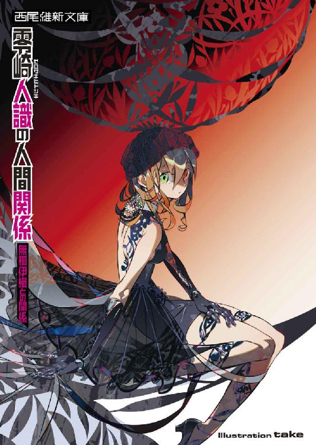
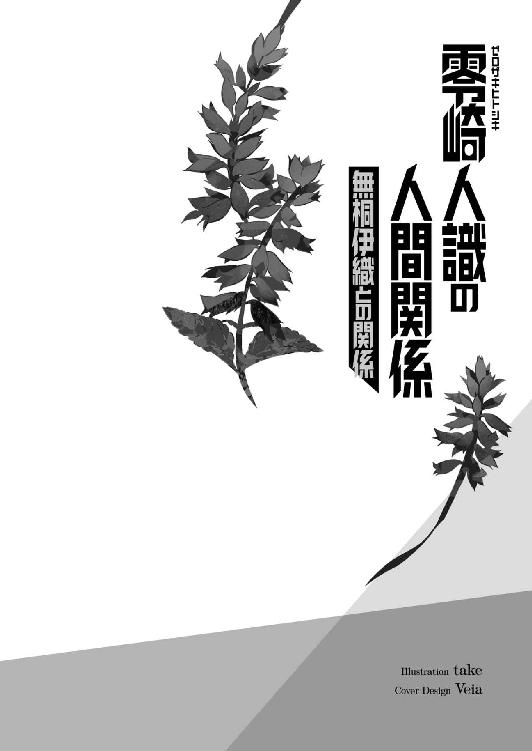
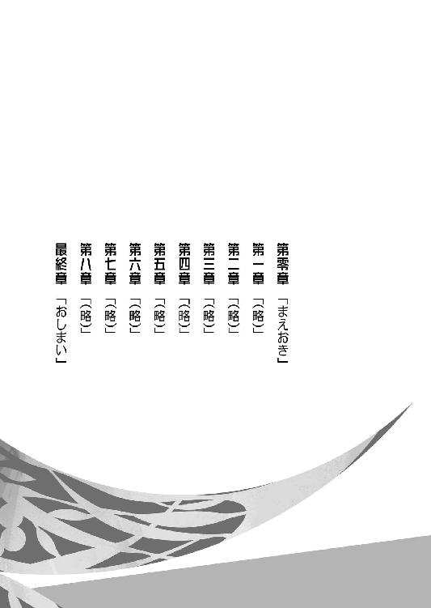
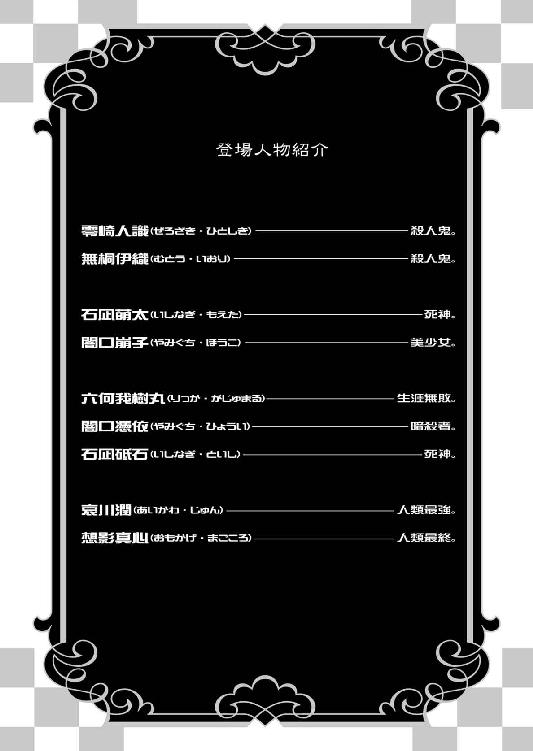
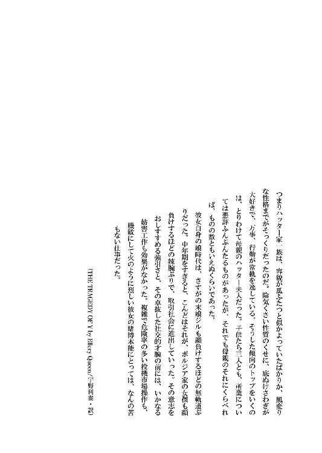
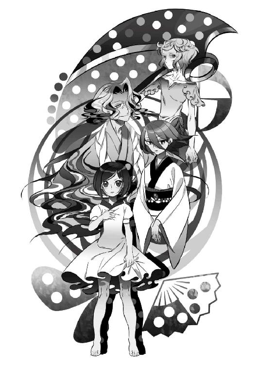
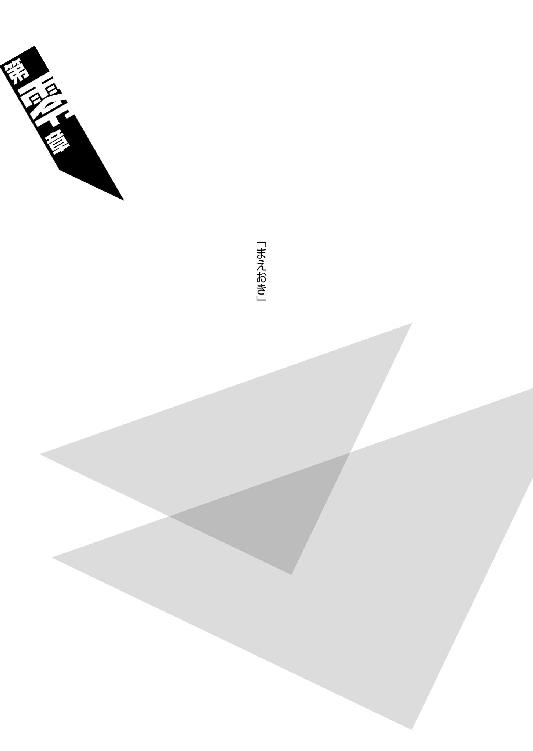
◆ ◆
「ところでよ──美少年こと萌太くん。石凪っつーのは死神の家系だったよな？ だから『殺し名』の人外連中の中において、唯一デスサイスで武装してるって話だったとこのあたしは記憶してんだが、しかしそれにしちゃあ美少年、お前は見たところ手ぶらもぶらぶら、徒手空拳じゃん。それって何で？」
哀川潤は。
不意に、とりたててこれといった前置きもなく──石凪萌太に向けて、そんな問いを投げかけた。
はっきり言ってそんな状況ではない。
場所は名門お嬢様学園に偽装した傭兵養成施設、つまりはご存知、今となってはすっかりお馴染みの澄百合学園──とは言え、この会話が交わされている時点より数ヵ月前に澄百合学園は廃校になっており、何を隠そう、そもそもこの施設を廃校に追い込んだのが他ならぬ哀川潤なのだが──その廊下である。
人類最強の請負人、ワインレッドのスーツに身を包んだ長身赤毛の女性──哀川潤と、そして、上下オールインワンの緑色のツナギに身を包んだ、涼しげな顔をした垂れ目の少年──もとい美少年、石凪萌太。
二人が足並みを揃えて、歩いているのだった。
異色の取り合わせではある。
もっとも、そもそも二人は最初から二人だったわけでは勿論なく、澄百合学園施設内に確固たる目的を持って侵入した時点では、その人数は四人だったのだが──『敵方』の一人である一里塚木の実の空間製作なる、説明不能にして破格の技術によって、二手に分断されてしまったのだ。
その空間製作自体は、それ単体で見るなら、哀川潤にしてみれば避けようと思って避けられない攻撃ではなかったのだろうし、また、石凪萌太に至っては、それをいわゆる攻撃とさえ認識していない。
あちらの二人とは。
こちらの二人は──立っているステージが違うのだ。
それは実戦を知っているというだけの意味ではなく──である。
空間製作者・一里塚木の実がどこまで計画的だったのかはこの時点においては果たして定かではないけれど、そういった意味合いにおいては、まさしく分断されるべくして分断された、そういう組み合わせ、グループ分けだったと言っていい。
「僕にしてみれば、崩子といー兄を二人きりにしてあげたいという気持ちもありましたけれどね。ひょっとするとこれがもう、最後になるのかもしれないのですから」
「あ？ 何言ってんだ？」
自分からの質問に答えず、そんなわけのわからないことを呟く萌太に対し、哀川潤は首を傾げる。哀川潤の周囲には思いのほかマイペースな傾向を持つ人間が多いのだけれど、しかしこの石凪萌太もそういう連中に負けず劣らずのキャラクター性というわけらしい。
端からそんなことを気にする哀川潤でもないが。
だが、その世界では『死色の真紅』として恐れられる哀川潤に対して、ここまで物怖じしない『殺し名』というのも珍しい。
「いえいえ──独白ですよ。ただの普通の、何ということのない独白です」
いちいち説明する気もないようで、萌太は肩を竦めた──およそ十五歳の人間がするような動作ではないのだが、それは彼のこれまでの半生を思えば、似合いも似合ったりといったところである。
「それで──何でしたっけ？ ああ。デスサイスの件でしたね。それはまあ、何と言うか......少し込み入った話になるんですけれど」
「込み入った話か。そりゃ是非聞きたいねえ」
くくく、と哀川潤は笑う。
大事揉め事厄介事、全部まとめて愛してるといった感じの楽しげな表情で、そこだけ見ればただの野次馬である。
「別に他人様に語って聞かせるようなことじゃないんですけれどね──ただの家庭の事情という奴ですし」
「家庭の事情か。ますます興味がある──こいつはまるでちっとも韜晦じゃなく、な。そもそも自己紹介された最初からあたしは引っかかっちゃいるんだよ。何で『石凪調査室』と『闇口衆』が兄妹なんだ？ 腹違いの兄妹だっつってたけど、そんな腹違いって有り得るのか？」
「訊き辛いことを平気で訊いてきますね──哀川さん。ああ、いえ──潤さん、と呼ぶべきなんでしたっけ。苗字で呼ぶ者は敵なんですよね」
「......さあて」
哀川潤は。
うっすらと目を細める。
「どうだろうな──萌太くん。実のところあたしには、お前が敵か味方かは、案外まだ定まっていないようにも思えるんだが」
「味方ですよ。僕は全女性の味方です」
そんな風に嘯く萌太。
真剣味は欠片もない。
哀川潤としては少なからず凄んでみせたつもりだったのだろうが、しかし萌太のほうはどこ吹く風だった。
マイペースである以上に。
まるで柳のような少年である。
裏を返せば、それはたとえば石丸小唄が根尾古新を苦手としているように──哀川潤にとって石凪萌太は、比較的鬼門の位置に近いタイプの性格であるとも言える。
少なくとも、哀川潤の位置よりは。
これから立ち向かおうとしている『敵方』の首領──人類最悪の位置に近い精神性だ。
敵か味方か。
定まらない。
判然としない。
簡単に──反転する。
それでも哀川潤が萌太と二人でこうして移動することをよしとしている理由があるとすれば、それでも最低限、全女性とは言わないまでも、彼が妹の味方であることだけは確かだと、唯一その点だけは判断できるからなのだろう。
石凪萌太の妹。
即ち──崩子。
闇口崩子。
向こう側にグループ分けされたうちの一人である。
「まあ、確かに先程いー兄にも説明した通り、石凪調査室の人間っていうのは死神なんですけれど、けれど僕は結構な変り種でしてね」
「僕は？ 崩子ちゃんのほうは違うってのか？」
「崩子は闇口としてはむしろ真っ当ですよ。家出は僕が唆したみたいなものですし──そうですねえ、潤さん。ここから先のことは、できればいー兄には話さないでくださいね？」
嫌われたくありませんからね。
と、萌太は一応、そんな風な前置きをした。
その前置きの効果がどれほどあるものなのか、それは言った萌太本人もさほど期待していたわけではないのだろうけれど、
「ああ、わかった。請け負うよ」
と、哀川潤はそう頷いた。
如何にも気安い、簡単そうな台詞ではあるが──人類最強の請負人である哀川潤が言うのであれば、その台詞も随分重みが違う。
少なくとも、常に涼やかに振る舞っている所為で逆に感情の読み辛い石凪萌太が、やや安堵したらしいのが外からわかるくらいには。
「僕は属性こそ『石凪』なんですが、しかしその所属はほとんど『闇口』みたいなものでしてね──まあ言わば、父親の再婚相手の里に引き取られた、というような形なんです」
「父親の再婚相手ってのが闇口衆ってわけか。ふうん──闇口、闇口、闇口衆ねえ。崩子ちゃんを見てるとそんな風には思えないけれど、『殺し名』の序列二位で、そして忌み嫌われ度で言うなら零崎一賊に次ぐ──とかなんとか言われてる集団だよな。やっぱりよくは知らねーんだけど」
「勿論、石凪調査室とは石凪調査室との付き合いがありましたけれどね──僕達の家出が誰に迷惑をかけたかと言って、一番迷惑したのは石凪本家でしょうから。所詮僕達は名前に縛られています。そうそう自由になれるものではありません──家出しようが、どうしようがね」
先程のノイズくんのような例外はそうそうお目にかかれるものではありません──と萌太は少しだけ後ろを振り向いた。
別にその方向に、あの名もなき少年がいるというわけではないのだけれど。
「......ああ。そう言えば昔、誰かに聞いたことがあったかな。死神の癖に暗殺者の真似事をしている子供がいるって──それを聞いて、一度喧嘩してみてーと思ったんだった。すっかり忘れてたけど、なんだ、ありゃひょっとしてお前のことだったのか？ 美少年」
「ええ。あなたが聞いたことがあるというのならば、多分それは僕でしょう。他にそんな死神がいたとも思えませんしね──しかし、噂になっちゃってましたか。なるだけ秘密裏に行動していたつもりでしたけれど、意外と隠し切れないものですねえ」
「しかし」
哀川潤は言う。
「話によれば、その子供は大きな鎌を帯びていたはずなんだが──うんん、最初の質問に立ち返っちまうな。萌太くん、お前、死神の癖にデスサイスを持ってないじゃん」
「言いませんでしたっけ？ 死神は引退したんです──勿論、暗殺者もね」
萌太は、ほんの少しだけ、昔を回想するように天井の蛍光灯──当然、明かりなど灯っていない──を見上げる。
「だから崩子と一緒に実家を出る際、デスサイスは置いてきたんですよ。まあ、汚れた過去に対する僕なりのけじめと言ったところでしょうか」
「汚れた過去ねえ」
わかってんじゃねえか、と哀川潤は笑う。
その笑みには、いくらか自虐的なそれも含まれているようにも見えるが。
彼女らしくもなく。
「潤さん。僕はね」
萌太は言った。
とても静かに、とても自然に。
「たとえば殺人事件があったとして──いえ、別に殺人でなくともいいんですけれど──いわゆる犯罪者が、報道ベースに乗ったとしますよ。そういうときに『一歩間違えば、自分もまたこの犯人のようになっていたかもしれない』──とかなんとかそんな風に、ある種加害者に同情的になる風潮が、昔から世間において強いことに対し、否定的な人間なのですよ」
「............」
「ベクトルは逆でも、それは成功者に対して『自分も頑張っていればあんな風になれたかもしれない』と思うのと同じようなものでしてね──犯罪者は犯罪者で、特別で特殊なんですよ」
だから。
自分もそうなっていたかもしれないなんてことは、軽々には思って欲しくありませんね──と。
萌太はそう言い切った。
「大した努力もなく野球選手になれたかもしれないと思うのが不敬であるように、大した悲劇もなく犯罪者になったかもしれないと思うのは──それはそれで不敬なのですよ。ワイドショーを見た程度のことで、相手のことがわかったみたいな気持ちになられても挨拶に困ります。もっとも実在する殺人鬼、零崎一賊あたりが報道ベースに乗ることなど、そうそうあることではありませんがね」
「そりゃそうだ。で、美少年。どうして引退しちゃったんだ？」
「こんな世界からは、誰だって機会があれば引退したいでしょう。僕だってその例外ではないということです」
「ふうん。ちなみに実家ってどこよ」
「いー兄から聞いていませんか？ 北海道ですよ。北海道の孤島です」
「へえ、島育ちか」
島育ちのきょーだいねえ、と哀川潤は呟く。
設定はこっちが先ですよ、と石凪萌太は受けた。
「──それに、別に無人島というわけでもありません。闇口衆の拠点のひとつですし」
「なるほどね。そういや、闇口衆にはそういうところがあるんだったな。団結力の強さじゃ零崎一賊に一歩譲るが、排他性においてはかの集団をも凌駕しかねない──だっけ。よくまあそんなところから家出できたもんだ。したいと思ってできるようなもんじゃねえだろ」
「当時十二歳の僕が計画した無計画な家出でしたから、正直言って完遂できるとは思っていなかったんですけれどね。すぐに追っ手がかかると考えていました。ところが、あにはからんや──こうして五体満足で暮らせているというわけです。思い切ってみるものですね」
「くくく。だったらあれか、本音を言っちゃえば今回の件では、いーたんの所為で危なっかしい争いに引き込まれてお前ら兄妹としてはいい迷惑って感じか？」
「まさか。追っ手がかかろうがかかるまいが、どの道みい姉に会っていなければ世間知らずの僕達兄妹なんて飢え死にしていたでしょうし、いー兄がいなければ」
崩子は、きっと。
と。
そこまで言いかけて──
「野暮ですね」
萌太は言葉を切った。
そこでやめるほうがよっぽど野暮なのだが。
「とにかく──みい姉といー兄のためになら、僕達兄妹は何でもしますよ。何でもね」
「かっ。『何でも』かよ──迂闊に使っていいような台詞じゃねーんだぜ、それ」
「確かに、そういうのはあなたの専売特許かもしれませんね──僕はそもそも、そんな善良な人間ではありません」
萌太は、「では」と、微笑む。
楽しそうな表情。
そんな表情を浮かべるときこそむしろ、彼の心中が憂鬱に満ちていることを知るのは──千本中立売にある、彼の暮らす骨董アパートの住人達くらいのものである。
「潤さん。お願いしたいことがあるんですが」
「あ？」
「ですから、お願いですよお願い──人類最強の請負人に対しての仕事の依頼という奴です」
仕事の──依頼。
その言葉に対し、哀川潤は、これまで語りながらも順調に──まだ施設敷地内のどこに向かえばいいのか判明していないのにもかかわらず──進めていた歩みを、ぴたりと止めた。
そして。
石凪萌太の目を見る。
睨むように、見る。
「──この状況でしなきゃなんねーような話かよ？」
「ええ、むしろこの状況でしかできない話でしょうね──僕が死んだ後の話になりますから」
「............」
その不穏当な言葉に、哀川潤は眉を顰める。
萌太の発言の意味を察しかねているのだろう。
「ああ、誤解しないでくださいね──取り立てて遺言というわけじゃありません。折角ふざけた仕事から足を洗えたというのに、たかが数年でむざむざ死ぬつもりはありませんよ。強いて言うなら僕が『何でも』という言葉を、決して迂闊に使ったわけではないというひとつの証左としての発言です」
「はあん──まあいいけどよ」
それで？
と、哀川潤は先を促した。
実はそう時間があるわけでもないのだ。
「お前が死んだら、あたしは何をすりゃーいいんだよ」
「......あなたが僕の噂を知っていたように、僕もまた──あなたの噂を知っていました」
しかし、『そう時間があるわけでもない』にもかかわらず、逆に話をはぐらかすかのように、萌太はそんなことを言い出した。
哀川潤が足を止めているので、萌太も勿論止まっている。
「そりゃそーだろ。ちらっとでも裏の世界に首を突っ込んでいて、あたしのことを知らない奴とかもぐりだよ──お前が現役で死神やってた時代とか、ひょっとしたらあたしとニアミスしてっかもしれねーくらいだろ」
「ええ、そういう武勇伝も聞いたことはあるんですけれど──印象深いのは、むしろ父親から聞いた話でして」
「......父親？」
「はい。僕と崩子の──共通の父親です。哀川潤さん、あなたも父親に対しては色々事情のあるかたのようですが、僕達兄妹だってなかなか負けてはいませんよ。暗殺集団闇口衆と死神集団石凪調査室の両方に子を儲けた、埒外の存在。十年近く行方不明だったのですが、三年前に彼は島に戻ってきたのです。彼が家に戻ってきたことこそが──僕と崩子の、家出の直接的なきっかけなんですよ」
「............」
「名前は」
六何我樹丸。
石凪萌太は口にした。
誰よりも忌むべき──その男の名を。
「人呼んで結晶皇帝。あの人は僕にこう言ってのけました。『最強なんてのは実に楽そうで羨ましい。何と言っても負けても許されるのじゃからな──』」
◆ ◆
この直後、石凪萌太が引用したその言葉がまるで伏線だったかのように、人類最強・哀川潤は、人類最悪・西東天と人類最終・想影真心の恐るべき組み合わせに対して手痛い敗北を喫することになる。
また──死ぬつもりはないと言い切っていた石凪萌太も、若い命を無残に、しかも味気なく散らすこととなった。
その辺りはもう別の物語になってしまうのでここではその詳細を語らないとして、ともあれ、哀川潤が死神と暗殺者の父親──六何我樹丸の存在を初めて認識したのは、このときのことだった。
結晶皇帝。
生涯無敗の男である──少なくとも、この時点においては。
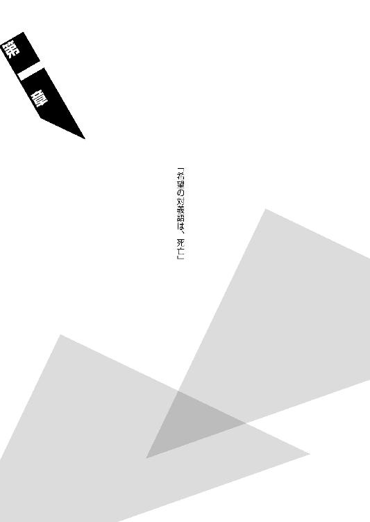
◆ ◆
「ただいま、伊織ちゃん」
「おやおや、お帰りなさい、人識くん」
「メシ買って来たぞ」
「あー、またコンビニの何らかですか。気を遣ってこれまで黙ってましたが、わたし、そういうお手軽系メニュー、実は苦手だったりするんですけれど」
「贅沢言うな。俺ら、びっくりするほど金ねえんだよ。これだってコンビニの店員にどれだけ頭下げて貰って来たのか」
「買ってないじゃないですか！ 四が世じゃないですか！ うわ、賞味期限が過ぎています！ それも結構大胆に！」
「エコだよエコ。大体、そこまで言うなら伊織ちゃん、あんたが手料理でも振る舞ってくれりゃあいいんだよ」
「手料理と言われましても、わたしには手がありません」
「義手があるじゃねえか。罪口商会ご自慢の一品がよ。それももう慣れたもんだろ」
「んー。でもやっぱり、自分の手指のようにとはいきませんよう。まだ装着して数ヵ月で、全然根付いていないというだけのことなのかもしれませんけれど──なんでしょう、ものを持てるのにそれを触った感覚がないというのは、変な感じです」
「ふうん。そんなもんかね」
「中華鍋とか触ったら、熱伝導して大変なことになっちゃいそうな気もしますし」
「熱伝導するような種類の素材じゃねーだろ。ヒューストンで何とかシステムの連中が言ってたけどさ、それ、最新の宇宙船とかで使われてる材料で作られてるらしいぜ」
「はあ、そうですか。でも熱伝導以外でも問題は色々ありますよ。まあ、その辺りはおいおい試していくしかないでしょう──あまり試して愉快なものではありませんけれど」
「しかしまあ、避けては通れんだろうぜ。俺にとっちゃあ他人事だから、気楽で気軽なもんなんだけどな」
「冷たいですねー、人識くん。他人事だなんて。可愛らしい妹のことじゃありませんか」
「だから勝手に俺の妹を名乗るな。それに、この前言ったろ。零崎一賊はもう全滅しちまってるんだよ。みーんな、殺されちまったらしいんだ。だから、家族ごっこももうおしまいってことだ」
「冷めたことを言いますねー。格好いいなあ」
「かはは」
「......本当は誰より悲しい癖に（ボソッ）」
「何か言ったかてめえ！」
「いえいえ何も言ってませんよう。人識くんがツンデレだなんて、そんな酷い悪口をこのわたしが言うわけがないじゃないですか」
「ほら。食えよ」
「いただきます」
「......箸くらいは、そろそろ持てそうなのか？」
「いやあ、まだそういう細かい作業はできませんねえ。人識くんがメニューにパスタを選んでくれて、だから助かりますよ」
「はっ。たまたまだよたまたま──誰があんたのことを思いやって、スプーンやフォークで食べるタイプのメニューを選んできたりするか。そんな都合のいい廃棄処分品なんて、かなり遠出しねーと手に入らねーっつーの」
「人識くん、語るに落ちてます」
「やめろ、そんな風に俺を『不器用な優しさ』の持ち主みたいに語るのはやめろ。ダサ過ぎる」
「素敵ですのに」
「ところでよ、伊織ちゃん」
「何ですか？ 人識くん」
「さっき、零崎一賊についての話が出たが──どうだ？ 伊織ちゃん的には、そろそろ溜まってきてる頃じゃねーのか？」
「溜まるって、何がですか？ マイルですか？」
「違うよ。なんで殺人鬼がマイル溜めてるんだよ」
「将来のビジョンとかですか？」
「それは固まってくるもんだろ」
「はあ。しかし、わかりませんね。貯金なんて溜まるわけがありませんし」
「悲しいことを言うんじゃねえ......いや、そうじゃなくてよ。溜まるっつったらあれだろ──殺人衝動だろ。殺意だろ。俺達の場合はよ」
「......はあ」
「なんでよくわかんねーみたいな顔してんだよ──俺は零崎一賊の人間としちゃあ立ち位置が特殊だからその辺りの反動は大したことはねー......はずなんだが、あんたは『零崎』としちゃあスタンダードなほうだろ。そんなあんたがもう半年近く誰も殺してねえ──耐え切れるわけがないんだが」
「......でも、人識くん、こないだ話してくれませんでしたっけ？ ほら、零崎一賊の中には確固たる信念を持って、無差別に人を殺さない殺人鬼も存在する──って」
「ああ、曲識のにーちゃんの話かよ。まあ、ありゃ相当のひねくれ者だったしな──そして意志が半端なく強かった。普通にやって自分にも同じことができるとか考えないほうがいいだろうぜ──それに曲識のにーちゃんだって、無差別に人を殺さないというだけで、人を殺さないわけじゃなかった。限定条件をつけていたとはいえ──一般人から見りゃ、やっぱり殺人鬼だ」
「なるほど」
「まあ伊織ちゃんの場合は、両手を無くしたって事情もあるしな。今のところ、通常の零崎よりはその手の衝動が薄いのかもしれねー。だけど、今は平気でも、すぐに耐え切れなくなるときがくるだろうな」
「へえ、今のところそんな実感は全然ありませんけれど。でも、もしもそういうときがきたら、どうすればいいんですか？」
「知らん」
「知らんって」
「そう言うなよ、俺だってどうなるかわかんねーんだからよ──何せ、人を殺さないという状況がこんな長く続いたのは俺も久し振りなもんでな。ヒューストンでも、なんだかんだで誰も殺さなかったし」
「仕方ないじゃないですか。あの赤いかたとの約束なんですし。えっと、何でしたっけ？ 名前は、確か......あいかわ？」
「ああ、哀川潤だ」
「もう人は殺さないという約束で、わたしと人識くんは哀川さんに見逃して頂いたんですから。その約束はそうそう破れませんよ」
「見逃してもらったとか、そんな生易しい状況じゃねえって気もするけどな──大体、殺人鬼に人殺しをするなとか、拷問だろ。いっそ殺して楽にしてくれってもんだ」
「あっはっは」
「笑ってんじゃねえよ」
「あははははははは！」
「爆笑すんな！ なんかむかつく！」
「失礼しました」
「本当に笑ってる場合じゃねーんだよ。だから言ってるけど、限界が来るのが早いのは俺よりもむしろあんたのはずなんだぜ？」
「だったらどうでしょう、人識くん。その約束を緩めていただくというのは？」
「緩めて？」
「その曲識さんとやらの話をお聞きして伊織ちゃん、ぽーんと来ました」
「ぽーんと？」
「ぱーんとでした」
「どんなカメラワークだ」
「正しくはぴーんとです。とにかく思いつきました。哀川のおねーさんにお願いして、せめて『無差別殺人を禁じる』──とか、そのレベルにまで約束の拘束力を落としてもらうのですよ。限定条件、ですね。たとえば......そうですね、『相手が悪人ならば殺してもいい』とか、『相手が人殺しならば殺してもいい』とか、『相手が自分を殺そうとしてきたときに限るのならば殺してもいい』とか。そんなニュアンスで」
「......ん。そりゃ......んん？」
「どうしました？」
「いや、意外といいアイディアかもしんねーと思ってな。ただの阿呆だとばかり思ってたけど、なんだ、伊織ちゃん、結構頭いいじゃん」
「ただの阿呆とは酷い言い草ですが、褒めてもらったのでお礼は言いましょう。どうもありがとうございます」
「いやいや。とは言え、問題がねーわけじゃねーよな──そんな交渉を、あの哀川潤が受け入れるとも思えないし」
「そこは力ずくですよ！ パワーゲームですよ！」
「あの哀川潤相手にか？ そんなことできるわけねーだろ。そもそもそのパワーゲームに負けて俺達はそんな約束を取り付けられちまってんだから──いや、待てよ？」
「どうされました？」
「............」
「どうされましたって、伊織ちゃんはお訊きしてますよ？」
「......いやいや、ひょっとしたら伊織ちゃん、あんた天才かもしんねーぜ」
「はい？」
「天才じゃなくとも天才的だ。神がかったタイミングですげーこと思いつくじゃねーか......丁度今、哀川潤は弱ってるはずなんだ」
「弱ってる？ 最強なのにですか？」
「ああ、確かに言い方がおかしいか。じゃあ傷んでる、と言ったほうがいいのかもしんねー。とにかくさ、あいつは今現在、時系列的に、人類最終の想影真心とかいう奴と読んで字の如く最終決戦をした直後とかのはずなんだよ」
「人類最終......ああ、その単語、ヒューストンでなんかよく聞きましたね。結局よくわかりませんでしたけれど」
「あんたは説明を聞いてなかっただけだけどな。何にしろ──勝つにしろ負けるにしろ、哀川潤にしろ誰にしろ、それは戦って五体満足で済むような相手じゃねえ。恐らく哀川潤はかなり重度の負傷をさせられているはずだ。たとえ人類最強であろうと、入院が必要になるほどのな」
「ふんふん。つまり？」
「今は正にチャンス──俺達でも哀川潤に対して、十分に勝てる見込みがあるってことだよ」
「なるほど！ 入院中を狙って文字通りにお見舞いするというわけですね！」
「そうなれば限定条件どころじゃねえ、約束そのものを無効にできるかもしれねえぜ！」
「ほほう！ となると躊躇する理由はひとつもありませんね！ わたし達、天才コンビの出陣というわけです！」
「かはは。天才コンビか。確かにこの発想は飛び抜けている。問題はその発想を実行する勇気を持つかどうかだ。どうする？ やるか？ 伊織ちゃん」
「ええ、勿論やるに決まっています！ いやいや、双識さんから受け継いだ『自殺志願』が熱く唸ります！」
「だったら傑作だ。人類最強の請負人を、殺して解して並べて揃えて晒してやんよ」
「了解しました──それでは、零崎を開始します！」
◆ ◆
そんな会話を交わした末、殺人鬼・零崎人識と殺人鬼・無桐伊織が人類最強の請負人・哀川潤の入院する個室を襲撃したのは、果たして翌日の昼間のことだった。
「......あたしもこの業界、短いほうじゃねーからよ──これでも結構、色んな人間を見てきたつもりなんだよな。『殺し名』にしろ、玖渚機関にしろ、四神一鏡にしろ、な──」
そんな二人を丁重に出迎えて。
哀川潤は心底、呆れたように言う。
「──それでもお前らみたいな弩級の馬鹿に会ったのは初めてだよ。馬鹿コンビっていうか、何ていうか。いや、だってあたし今、すげえびっくりしちゃってるもん。驚きばっかり先行しちゃって、マジで何も考えられねえもん。こんなことってあるんだな」
はあー、と。
大仰にため息をつく哀川潤。
ちなみに飛んで火にいる夏の虫と換言されることに対し何の抵抗もできないであろう哀れな襲撃者二人組は、今はリノリウムの床に四つん這いになって、ベッドから降りた哀川潤の椅子代わりにされているのだった。
人識のほうが哀川潤に実に優雅に座られていて、伊織は無残にもオットマンにされている。皮肉なことに、女子にすれば少し高めの伊織の身長は、丸まってみると哀川潤の長い脚を置くのに丁度いいサイズではあった。
戦闘──と言っていいほどに戦闘らしくはならなかったが──の結果、人識も伊織も、着ている服は目も当てられないほどにボロボロである。伊織に至っては無事なのはトレードマークのニット帽くらいのもので、峰不二子よろしく太ももの部分に得物の大鋏を仕込んでいたのが災いし、スカートを完全に引き剝がされてしまっていて、中身のスパッツが丸見えだった。伊織は背中に脚を置かれ、床をじっと見詰めながら、譫言のように「パンツじゃないから恥ずかしくないもん、パンツじゃないから恥ずかしくないもん......っ！」と、ぶつぶつと呟いていた。
その呟きがうざかったのか、哀川潤は一旦脚を大きく振り上げて、そのまま力強く振り下ろす。
「ふぐおうっ！」
呻く伊織。
人識のほうはもう悟り切ったように、そんな伊織を見もしない。
というか、今の彼の頭の中を占めているのは、
（どうして俺はこんな頭の軽い女の口車に乗ってしまったのだろう──）
という、果てしない後悔だけだった。
もっとも、口車も何も、発想の半分は人識の思いつきなので、これはいささか責任転嫁気味の後悔ではあるのだが。
「いや、実際今、あたしの中で零崎一賊の株はうなぎ昇りだぜ。かんっぺき昇り竜。マジでマジで──絶滅寸前の日本狼みたいな種族の癖に、のこのことあたしの前に面出すなんざ、本気で驚天動地だよ。こないだのは不可抗力としてカウントしないでやったけど、確かあたし、あたしの前に二度と顔を出すなって言わなかったっけ？ 零崎くん」
手を伸ばし、ぺしんと人識の尻を叩く哀川潤。
人識は無反応である。
「あたし、零崎一賊って大嫌いだったけど、ひょっとしたらそれってただの偏見だったかもしんねーなあ──なかなかの面白集団じゃん、お前ら」
まあ曲識みたいな奴もいたことだしなあ──と、哀川潤はそう続けたが、その台詞はどこか独り言のような響きを帯びていたため、人識や伊織の耳には届かなかった。
「............」
もっとも。
そうでなかったところで──あくまで人識は無反応を貫いただろうが。
（入院中──）
（までは──あってた......）
予想通りだった。
しかし、そこから先の展開も、ある意味においては予想通りは予想通り。
予想通りではないにしても──お約束だった。
哀川潤の病室に突撃した人識と伊織が自分の足だけで立った姿勢でいられたのは、ほんの三十秒くらいのものだった──ベッドで横になって、眠るでも休むでもなく、片手で携帯電話をいじっていた哀川潤は、侵入者を目視するや否や、吹き荒れる暴風雨のような猛烈な勢いで、あっという間さえもなく、ふたりの殺人鬼を制圧してしまったのだ。
彼女は。
携帯電話を手放しさえしなかった。
「はーぁあ。しっかし弱いな、お前ら。リハビリ代わりにもなりゃしねえ──それにしても困ったもんだ。さすがに同属性の奴にやられた傷は治りが遅いわ。運がよかったじゃん、もしもあたしが全快時だったら、お前ら消し炭も残らなかったぜ」
「そ、それで全快じゃないっていうんですか......っ！」
哀川潤の台詞に、伊織が突っ込む。
足載せ台の姿勢のまま、しかも哀川潤に突っ込みを入れるとは、見かけによらずなかなか根性のある娘である。その根性だけは買ってやろうとでも思ったのか、哀川潤はにやりと笑い、
「ま、およそ二割ってとこだな──」
と答えた。
「こんな可愛らしい患者衣を着てるとこ見りゃわかんだろうが。結構レアだぜ、こんな格好のあたし」
確かに、赤くない服を着ている哀川潤というのは貴重かもしれねえ──と、少なからず哀川潤を知っている人識は思う。とは言えその尊大さは、どんな服を着ていても、どうやら変わるところがないようだったが。
「体力やら筋力やら、ほとんどゼロにまで引き落とされていたから、これでも回復したほうなんだけど──あーあ、全然駄目だ」
「そ、それで全然駄目って」
「やっとのこと歯が生え揃ったのは助かったけどな。やっぱちゃんと自分の歯で食べねーとご飯もおいしかねー」
「生え揃う!?」
「ああ。あらかたへし折られちまってたんだよ」
「生え揃う!? 差し歯とかじゃなくってですか!? あなたは永久歯が生え変わるんですか!?」
「だから永久歯なんだろ」
「永久歯の永久は、確かに永久に生え変わるという意味ではなかったはず！ 哀川のおねーさん、あなたは鮫なのですか!?」
「あたしが鮫ならお前らは雑魚だな。大してうまくもねえ」
「わ、わたし達が弱いんじゃないですよう──哀川のおねーさんが強過ぎるだけですよう！」
「強過ぎるんじゃねえ。最強なのさ」
つーかオットマンが喋ってんじゃねえ、と、哀川潤はまたも脚を振り下ろした。
（本気で蹴れば、歯どころの話じゃねえ、伊織ちゃんの背骨くらい余裕でへし折れるだろうから、加減しているのだろうが──）
人識は思う。
（──しかし、あれで二割か）
苦笑しか浮かばない。
もしもそれが本当ならば、これまで二回（うち一回はまだ伊織と出会う前のことで、タイマンだった）人識とバトルになった際、彼女は随分と手を抜いていたということになる。
（......だけど）
（最初にやり合ったときには、前髪を切るくらいのことはできたはずなんだがな）
ならば──およそ考えたくもない可能性だが。
哀川潤の最強性は、今もまだ尚──成長過程にあるということになる。
（強過ぎるのではなく──最強か）
実に、言い得て妙だ。
「んで！ お前はお前で何辛気臭く黙りこくってんだよ、零崎くん！」
ぱあん、と、今度は音を立てて尻を叩かれた。
痛みもそうなのだが、この歳で尻を叩かれるというのが結構な屈辱だった──どうせなら頭を叩いてくれたほうがましだ。
というか、伊織に対しては喋るなと言っておいて、理不尽極まる言い分だった。
「......あー。悪かったよ」
人識は渋々、口を開いた。
出てくるのは、おざなりながらも謝罪の言葉である。
「俺が悪かった。俺はもう何されてもいいからよ──伊織ちゃんのほうは逃がしてやってくれねーか。そいつはまだ零崎になったばっかりだし、現実問題、正当防衛以外では人を殺しちゃいねーからよ」
「ひ、人識くんっ！」
それを受けて、慌てたように伊織が叫ぶ。
「ち、違うんです、きれーなおねーさん！ 今回のことはわたしがプロジェクトしたんですっ！ 人識くんは逃げよう逃げようとチキンなことばかり言ってましたっ！」
「誰がチキンだっ！ 俺ぐらい勇ましい男が他にいるかっ！」
「いいから人識くんは黙っていてくださいっ！ このテーマ曲がチキチキバンバン！ 人識くんには椅子の姿があつらえたようにお似合いですっ！」
「誰のテーマ曲がチキチキバンバンだよ！ 大体チキチキバンバンにチキン的な意味合いはねえ！ そんな振りをされても俺は絶対に歌わねえからな！ そもそもオットマンの姿があつらえたように似合ってるお前に言われたくねえっつーのっ！」
「......お前らなあ」
哀川潤は。
二人のやり取りを受けて、再度、ため息をつく。
「前にもおんなじように仲良く庇い合ってたよなあ──だからあたしはその美しい家族愛に免じて見逃してやったんだっけ。おんなじことすりゃ見逃してもらえるとか、まさかそんな甘い考え持ってんじゃねーだろうな？ むしろそうやってると、前の家族愛もただの演技だったんじゃねーかと思えてくるよ」
言いながら。
カタカタカタ、と哀川潤は携帯電話を操作する。
その指の動きはかなり軽快で、ブラインドタッチどころか、画面さえも見ていない。
「......うううっ！ 演技なんかじゃないですようっ！ ていうか哀川のおねーさん、携帯切ってください！ ここは病院ですよっ！ あがっ！ わたしの義手に埋められたペースメーカーがっ！」
「義手にペースメーカー埋めてどうすんだよ。大丈夫、これは病院でも使える携帯だから」
「で、でも、人と話すときのマナーっていうものがあるでしょうっ！」
「マナー？ 殺人鬼と話すのにそんなもんあるのか？」
「で、でもでもっ、可愛い女子高生（元）といたいけな少年が必死で命乞いしているときにメール打ってるだなんて、あなたには血も涙もないんですかっ！」
「血と涙しかねえお前らにぐだぐだ言われたくねーっつーの」
また蹴る。
文字通りの踏んだり蹴ったりだった。
「ていうかメールなんか打ってねえよ」
「？ では何をされているのですか？」
「ブログ更新」
がくん、と。
人識の肘と膝が折れて、椅子の高さが調整された。オットマンと高さがほぼ揃ってしまい、哀川潤の姿勢としては深く腰掛けた感じで、より尊大なそれとなる。
「おいおい零崎くん。椅子を倒すときはちゃんと後ろの人に確認しろよ──まあ後ろの人なんかいねーけど。うしろの百太郎くらいしかいねーけど」
「......なんで人類最強の請負人がブログやってんだよ！」
突っ込みは伊織に任せて自分は嵐が過ぎ去るのを待とうと思っていた人識だったが、ここはこらえ切れなかった。
なんだよー、別にいいじゃんよー、と、哀川潤は られた子供のように唇を尖らせる。
られた子供のように唇を尖らせる。
「なんだぁ!? てめえ、人類最強の請負人としての仕事の依頼を、こともあろうにネットで受け付けてやがんのか!?」
「いやあ、こりゃビジネスじゃねーよ。あたしはビジネスは基本口コミでやろうって、古いタイプの仕事人でな。ブログはあくまでプライベート。漫画雑誌の感想ブログだよ」
そこに積んである雑誌のレビューをアップしてたんだ、と、哀川潤はベッド脇のチェストを指差した。積まれているのはメジャーな雑誌からマイナーな雑誌まで七冊ほど、実に色とりどりである。
人識は、一旦言葉を吞み込もうとして、しかしそれができず、
「どんな暇人だよ！」
と怒鳴った。
「あんたは人類最強の暇人か！ あそこに積んであるだけで七冊って、あんた一体、どれくらい雑誌読んでんだ！」
「ん？ 購読してんのはざっと三十冊」
「多過ぎだあ！」
「ここで哀川潤クーイズ。あたしの読んでる三十冊の漫画雑誌を全部当ててみよう」
「適当に言っても半分くらい当たるだろ、そのクイズ！ 漫画雑誌はそこまで数ねえよ！」
「なんならちらっと見てみる？ あたしのブログ」
「見ねえよ！ あんたはブログ更新に忙しいかしらんが、俺は今、ブログを更新しながら戦ってた奴に負けたという事実と戦うのに忙しいんだ！」
「そう言わず、ほれほれ。携帯でも見れんだぜ」
「ぐおっ！ 画面を顔面に押し付けるな！ 逆に見えねえよ、そんなの──っておい！ 全ての感想がベタ褒めじゃねーか！ なんだこのゆるいブログ！」
「あー。あたしって基本的に漫画に関しちゃ全肯定しかしねーし。なんでもかんでも全部大好き」
くくく、と。
伊織に言われたことを気にしたわけでもないだろうが、哀川潤は携帯電話をようやく閉じて、そして人識の頭を撫でた。
くしゃり、と音を立てて。
「......さすがにこれ以上切ったら可哀想かなあ。零崎くん、短髪似合わなそうだもんなあ」
「ま、また俺の髪を切るつもりだったのか」
「んー」
人識の問いに哀川潤は答えず、ひょい、と壁のほうへと、携帯電話を持っているのとは逆の手を伸ばした──その壁に根元までの深さで突き刺さっているのは、伊織が得物として使った大鋏──『自殺志願』である。
コンクリートの壁に深々と突き立ったそれを、哀川潤は大して力を込めた風もないのにあっさりと引き抜き、「ふん」と鼻で笑うようにしながら、ガンマンのようにくるくると回す。
『自殺志願』。
便宜上大鋏と表現する他ないが、しかし、近距離で観察するならば、それを鋏と言うのはあるいは正しくないかもしれない──むしろ二振りのナイフを無理矢理、強引に鋏の形に組み合わせた凶器と言い表すのが、まだしも正確なのかもしれなかった。
「......その鋏で俺を丸刈りにでもするか？ いいよいいよ、そうしたいのならそうしろよ。その代わり伊織ちゃんは──」
「黙ってろ。首を刈るぞ」
哀川潤は乱暴にそう言って。
しゃきん──と、鋏を鳴らした。
「おいこら、モテカワメイク」
「............？」
「呼ばれたら返事しろよ、モテカワメイク！」
攻撃を受けたのは伊織だった。
またぞろ蹴りである。
しかしその攻撃は伊織にとっては予想外だったらしく、
「は、はいぃ!? わ、わたしのことですか!?」
と、驚愕のリアクションで顔を起こして、哀川潤のほうを見た。
「お前に決まってんだろモテカワメイク。今現在この病室の中に、お前以外にモテカワメイクがいるのか？」
「い、いえ、確かにわたし、女子のエチケットとして多少のお化粧くらいはさせてもらっていますけれど、こんなの全くメイクのうちに入りませんよっ!? や、やめてください、わたしを厚化粧キャラにしないでくださいっ！」
「モテカワメイクは厚化粧とは違うだろ」
「し、しかし、ならば哀川のおねーさん、せめてナチュラルメイクと！ ナチュラルメイクと表現していただきたく！ モテカワメイクは、むしろ人識くんの刺青です！」
「ああっ!? 伊織ちゃん、あんたそんな会話に俺を巻き込むのかっ!?」
黙っていろという哀川潤からの命令に忠実に従おうとしていた人識は、突然話を振られて（しかもかなりの無茶振りだ）戸惑いを隠しきれない。
「そして俺の刺青をメイクと表現したな、てめえ！ この刺青にどれほどの伏線が張られてると思ってるんだ！」
「え？ でもそれ、人識くんの頑張ってるお洒落の一環なんでしょう？」
「だから！ 俺のファッションを！ 俺のセンスを！ お洒落頑張ってるの一言で済ませるんじゃねえって、何回も何回も何回も言ってんだろ！」
「いやまあ、そう言われていたからあえて黙ってましたけれど、でも人識くん、その軍服みたいな冬服のセンスは相当ヤバいですよ」
「マジで!?」
そう言えば欠陥製品の野郎にもさり気に非難されたような、と人識は青ざめた。
「腕にスカーフ巻くって......それの何を格好いいと思っているのかわかりません。あと、どうして安全靴をファッションとして採用したんですか？ 更に言うなら、あれですよね。人識くん、変装とか身分偽装とか紫外線カットとかそういうんじゃなくて、普通に格好いいと思ってサングラスをかけているところがありますよね」
「黙れ！ 具体的に非難するな！ お前がそう言うことによって、実際はそうじゃなくても、本当に俺のセンスがヤバいみたいな空気になってくるだろうが！」
「もしもその辺りのあれこれが、わたしに『お洒落頑張ってる』と言われたことに奮起して人識くんが更に頑張っちゃった結果なのだとしたら、わたしはひとりの妹として、責任の一端を感じざるを得ません......」
「頑張っちゃったとか言うな！」
「そしてサングラスの悪口は言うな」
人識の突っ込みに乗っかる形で、哀川潤は、これまでとは違う角度から伊織の背中に蹴りをいれたのだった。
哀川潤。
サングラス愛好者である。
「話逸らしてんじゃねえよ。あたしの目を見ろ。そしてあたしの質問に答えろ、この愛されメイク」
「愛されメイク！ なんという愛のないニックネームでしょう！」
「前んときは訊きそびれちまったけど──この鋏ってよ」
愕然とした表情を浮かべた伊織を無視する形で、哀川潤は鋏をくるくると振り回し続ける。自分の頭の上でそんなことをされる人識としては気が気でないが、その気持ちもまた、哀川潤にとってはガン無視の対象だった。
「多分、零崎双識──って奴の得物だよな」
「......ご存知ですか」
零崎双識。
マインドレンデル──と、その大鋏と同じ名で呼ばれることもある。
あるいは、二十人目の地獄とも。
そしてあるいは──零崎一賊の長男、ともだ。
人識や伊織にとっても、兄にあたる殺人鬼である。
（......まあ、兄貴も相当な有名人だしな）
（哀川潤が知っていたとしても不思議じゃあ──ない）
「零崎一賊が全滅してるってことは──そのマインドレンデルも死んだってことか。それで？ 愛されメイク、お前がこれを受け継いだってことでいいんだよな？」
「うう......愛されメイク......愛されメイク......」
「答えろよ」
「や、やあ！ もう蹴らないでくださいっ！ そうです、そうですっ、そうですようっ！」
「ふうん......零崎くんが欲しがりそうなもんだけどな。譲ってやったんだ。お兄ちゃんらしいとこあるじゃんよ──そういうところは、マインドレンデルから受け継いだのかい？」
「............」
「黙ってんじゃねえよ」
首筋にひやりとしたものが当てられる。
十中八九、大鋏の刃だ。
「喋れとか黙ってろとか、本当、好き勝手言いやがって──」
「言いたいことは言わずに、あたしからの質問には即座に答えりゃいいんだよ」
好き勝手というにも自由過ぎる言い分である。
反論する気にさえなれなかった。
「......ああそうそう、受け継いだよ受け継いだ。兄貴からは家族愛を受け継ぎました。これでいいんだろ？」
「くくく、そう、それでいい。しかし、ふうん──零崎双識か。実は一回くらい、会ってみたかったプレイヤーなんだよな──噂を聞くとすげー格好いい奴らしいじゃん。風貌もそうだが、中身もな。殺人鬼ってところは気に入らねーが、それでも零崎一賊の中でも珍しいほどのジェントルマンなんだろ？」
「............」
「............」
質問には即座に答えろと言われたばかりなのに、人識と伊織は、同意を求めるような哀川潤のその問いかけに対しては沈黙せざるを得なかった。
あの超絶変態の殺人鬼の実像が、一体どこでどう間違えばそんな風に捻じ曲がって伝わってしまうものなのか、あまりに謎だ。
そう言えばいつだったか、直木飛縁魔という高度なプレイヤーが、同様に零崎双識を高く評価していたことを、人識は思い出す。身内ゆえにわかっていないだけで、本当はあの変態兄貴はすげー奴だったんだろうかと、人識は意外な衝撃を隠しきれなかった。
いや。
その驚きはその驚きで、ともかくとして。
零崎双識もまた死色の真紅──哀川潤に相当執心していたことを知っている人識としては（そして恐らくは伊織も同様に）、その心中でこう叫ばざるを得なかったのだ。
（──ざまあみろっ！）
「くくくっ」
笑うよなあ──と、哀川潤は言って。
大鋏、『自殺志願』を無桐伊織のところへと回転させながら投げ置いた。子供が真似したら大変に危険な真似である──まあ哀川潤にしてみれば、投げた鋏の刃先が伊織に突き刺さったところで、別に構わないくらいの気持ちだっただろうけれど。
「大事にしろよ、それ」
「は？ え？ ええ？」
当惑する表情を見せる伊織に、
「得物っつーのは、それはそれで魂みてーなところがあるらしいからな──」
と、哀川潤。
「──まあ、あたしは基本的には武器は使わないタイプだから、その辺はわかんねーんだけど。けど魂は信念と言い換えることもできる。だから──大事にしろ」
「......俺のナイフを全部捨てさせたあんたの言う台詞じゃあねーな」
「お前のナイフに魂はこもってなかったろ。魂のこもった武器ってのはいわば分身だ──死神にとっての処刑鎌みてーなのを言うのさ」
お前の分身は戯言遣いのいーたんだろ、と言って、そして哀川潤は。
閉じたままで持っていた携帯電話を──ぐしゃりと、豆腐でも握るかのように握り潰した。バラバラになった細かい部品が、重力に従って人識の足元へと落ちていく。
ぞっとするようなグリップだ。
にもかかわらず哀川潤はその結果が気に入らなかったらしく、
「駄目だな」
と言う。
「体力も筋力もそうだが、握力が決定的に戻らねえ──全快を待ってたら、こりゃ年が明けちまうわ。諦めるしかねーか」
「......？ 諦める？ 何をですか？」
「ベストコンディションで挑むことを諦めるんだよ、コスメ。いや、小娘」
「コスメと小娘を言い間違えるわけないでしょう!? 『む』みたいな怒濤の発音力を誇る単語がどうして抜け落ちちゃうんですか！」
「許してやるよ、お前ら」
伊織の、それこそ怒濤の突っ込みをスルーして。
哀川潤は──言った。
「許してやる」
それは。
耳を疑う──言葉ではあった。
少なくとも、そんな寛大な言葉を期待できるようなシチュエーションではない──と言うかそもそも、二人して椅子代わりにされている時点でそんな希望はまとめて廃棄するのがごく当然である。
（──まさかあの庇い合いが功を奏したのか？）
（でも二度目だぞ？）
別に演技や噓のつもりはなかったが。
通用するとも思ってはいなかった。
どこまで甘いんだ──この請負人。
漫画に限らず、だだ甘か！
「今回はお前らを捕殺しろとかいう国家的な依頼を受けてるわけでもねーしな──プライベートの内ってことにしといてやるよ。大体お前らは前んときに、あたしが殺したことになってんだ。ここでお前らをどうこうしたら、あたしの不正がバレちまう。信用問題にかかわるからそれは避けたいところだしな」
それらしい理屈を並べはするものの、自分でも無理があるとは思うのだろうか、その口調にはどこか言い訳っぽさが混じっていた。
状況は予断を許すようなものではないが──しかし。
どうやら──命は無事で済むらしい。
哀川潤が許すと言った以上、許しはするのだろう。
人識がほっと胸を撫で下ろしかけたそのとき、
「勘違いすんなよ」
と、哀川潤は言った。
「何もただで許すってわけじゃねーぜ。こっちは殺されかけたんだからな」
「いえ、哀川のおねーさんは全然殺されかけてなんていませんでし──」
伊織は最後まで言えない。
最早言うまでもなく、蹴られたのだ。
たとえ相手が哀川潤でなくとも突っ込むようなタイミングではないのだが、無桐伊織、恐るべきＫＹぶりである。
そして何事もなかったかのように話を続ける哀川潤。
「この場で始末しねー、見逃してやる代わりに、お前達にはちょっくらあたしの仕事を手伝ってもらうことにした」
「し──仕事ですか？」
「ああ。お前らは知らねーだろうけど、とある美少年から受けた依頼でな──零崎くんはいーたんからちょっとは聞いてるか？ あたしとしちゃーこのままシカト決めちまってもよかったんだが、予言通りにあの美少年が死んじまった以上、実行しねーわけにもいかねーや。あたしの親父のことには一応のケリがついたんだ、美少年の親父のことにも、ケリをつけてやんねーと」
「............？」
哀川潤のその台詞は、人識には全く理解できないものだったが──（俺がちょっとは聞いているような話なのだろうか？）──彼女にはここで詳細を説明する気はないらしく、ろくに二人の様子を窺いもせず、
「まあ、場合によっちゃあ生涯無敗の男と、およそ二割の力でやり合わなきゃいけなくなるんでな──これもなんかの巡り合わせだろ。お前らに協力してもらうわ」
と、それが決定事項のように言った。
「しょ──生涯無敗？ なんだそりゃ」
「さあ。よくわかんね。あたしもつい最近まで知らなかったけど、どうやらいるんだとよ、そういうのが」
「そ──そんなとんでもねえ奴がいたら、俺やあんたが知らねえはずがねーだろ。そんなプレイヤーがいるなら、噂にならねえはずがねえ」
兄貴のように。
敢えてそう付け加えはしなかったものの、それは言わなくても伝わることだっただろう。
人識や伊織が零崎一賊の全滅騒動から逃れることができたのは、そして哀川潤に殺されたという偽装が可能だったのは、それはひとえに彼らが無名だったからに他ならない。
「どんな奴だよ。やっぱり匂宮雑技団がらみの誰かなのか？ しかし出夢の野郎だって、さすがに無敗じゃあなかったはずだぜ──そもそもあいつには俺が何回か勝ってるしな」
「ん？ なんだお前、出夢くんのこと知ってたのか？ くくく、あいつ、強かったな──生きてさえいりゃ、いつか再戦してやってもよかったんだけど。......匂宮雑技団じゃねーよ。つーか『殺し名』の関係者でこそあれ、そいつ自身は『殺し名』じゃねーんだとよ」
「『殺し名』じゃ──ねえ？」
じゃあなんだよ、という人識の問いに、
「意表をついて玖渚機関の関係者だよ」
と、哀川潤は答えた。
「もっとも何世代も前に退役してるらしいから、玖渚本家が出てくる可能性は皆無だけどな。それでも話を聞く限りにおいて、この仕事、お前らの協力は不可欠だ」
「きょ、協力って──なんだよ」
「そうだな。色々やって欲しいことはあるんだが──まあ、とりあえずは手始めに」
哀川潤は。
シニカルに微笑んで──最初の指令を下した。
「風邪をこじらせただかなんだかでこの病院に入院しているらしい、闇口崩子っつー美少女を拉致して来い」
◆ ◆
哀川潤対六何我樹丸。
人類最強対生涯無敗。
その決戦の火蓋がはっきりと切られたのはこのときのことで、零崎人識と無桐伊織ははっきり言ってただその場に居合わせただけであり、たとえこの二人の襲撃がなかったとしても請負人として、哀川潤は石凪萌太の依頼に対して遠からず動き出したのだろうが──ただその場に居合わせただけという理由で、零崎人識と無桐伊織は、あるいは戦争とさえ表現されてしまいかねない対決に、否応なく巻き込まれていくのだった──
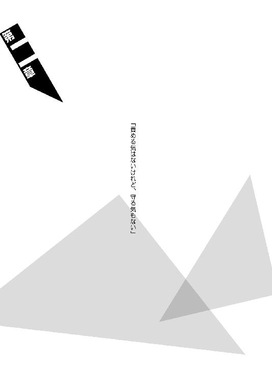
◆ ◆
マインドレンデルから『妹』の面倒を任されて以来、零崎人識は基本的に無桐伊織と行動を共にしてきているが、しかし一時期だけ、兄の言いつけに背いて、彼女から離れていたことがある。正直な話をすれば、そのときには人識はもう伊織から距離を取るつもりでいたのだが──色々やっているうちに、結局元の鞘に納まることになってしまったのだった。
まあ。
根本的に人識にはそういうところがある。
悪ぶっている癖に意外と人がよく、気まぐれの塊でありながら意外と面倒見がいい。
不器用な優しさの持ち合わせなどないが、しかし哀川潤の甘さを責める資格など彼にはないのだ。
大体、伊織から離れていた一時期のことにしたって、それは決して友達ではないどこかの誰かさん、人識が欠陥製品と呼ぶ、人識を人間失格と呼ぶ某戯言遣いを助けるために離れていたのだから──尚更というものである。
詳細を語れば別の物語のネタバレになってしまうのでここではそれは控えるとして──その一時期において、零崎人識はとある双子の姉妹と日常的に戦闘するという時間を送っていた。
双子の姉妹。
それもただの双子ではない。
何せ彼女達は、あの匂宮雑技団の分家なのだから──ただの双子であるわけがない。
澪標高海。
澪標深空。
恐るべき合気の使い手だった。
「不動──」
「──叉手」
「歯黒──」
「──鰓蓋」
そんなある日のこと。
ある日も何も、その頃には澪標姉妹とのバトルは本当に、掛け値なく日常と化していたので、ある日がどの日だったのかは、人識はもう憶えていないけれど。
とにかく、ある日。
木賀峰約という、いわくのある女性が研究室として使用していた京都の奥地にある診療所跡の、庭において。
零崎人識は──左右同時に繰り出される彼女達の攻撃を捌き切って。
それから反撃する──左右同時に。
脚払いで、彼女達を引っ繰り返した。
ちなみに『澪標』の戦闘服はどうやら法衣のようで、最初に戦ったときは高海も深空もそういう格好に身を包んでいたのだが、戦闘が日常化した頃には、もうその辺りはおざなりになってしまっていた。ミニスカートにオフショルダーといったような、女の子らしい、目に優しいファッションで戦う彼女達である。
だからどうしたという話なのかもしれないが、いや、人識がこのとき思ったのは、脚払いで引っ繰り返った深空と高海の下着が見えてしまったのは、別にわざとじゃないということだった。
（ふう──っ）
（──ったく、際どい）
そうも思った。
勿論、際どいのは下着ではなくバトルである。
それこそ欠陥製品辺りは澪標姉妹に対して人識は常に楽勝していると思っていたのだろうが、実際のところ、それは正しくない。
いや、正しいは正しいのだが。
楽勝以外では勝てない──というのが、より正しい。
それほどに、澪標高海と澪標深空の合気は、戦闘技術として完成されていた。
少なくとも、人類最強との対決によって刃物を全て失ってしまった人識では、本来太刀打ちのできるはずのない双子ではあったのだ。
（まあ──こいつらに俺が勝てる、俺がこいつらを雑魚キャラ扱いできる、はっきりした理由がひとつあるとすれば）
（それは、こいつらの本家であるところの匂宮雑技団のエース、出夢のバトルスキルを──嫌と言うほど知っているからだろうな）
数年の間（当時はまだエースではなかったとは言え）、人識は日常どころか恒常的に匂宮出夢と戦い続けていたのだ──後半のほうでは出夢との関係も相当険悪になっていたからかなりのマジバトルになっていたわけで、それを思い起こせば、澪標姉妹などものの数ではない。
澪標姉妹が武器を使わない素手のプレイヤーというところも、だから人識にとっては出夢を連想する材料としかならず、つまりはいいようにしか働かないのだった。
（出夢、か──）
（──あと一ヵ月でも生き延びてりゃ俺と会えたってのに、本当に馬鹿な奴だ）
当時を回想し、そんなことを思って。
人識は──ほんの少し、にやけた。
にやけてしまった。
「......何をにやけている、零崎人識」
「......何をにやけている、零崎人識」
「女子のパンツを見てにやけるな」
「女子のパンツを見てにやけるな」
「変態」
「変態」
左右同時に。
地に倒れた高海と深空がミニスカートを押さえながら、眼鏡の位置を直しつつ、目を細めてそう言って来た。
「............？」
物思いに耽っていたゆえに、一瞬、何を言われたのかわからず。
それから人識は、
「はあ!? 俺が変態!? 兄貴じゃなくて俺が!?」
と、声を荒らげた。
取り立てて頰を赤らめもせず。
ただただ軽蔑するような表情で。
左右同時に、高海と深空は人識に無言で非難の視線を送るだけだった。
「待てや！ 俺は女子学生のパンツを見るためだけに戦っていたあの変態とは違うんだ！ あの兄にしてこの弟ありとか思うな！」
「お前の兄のことなど知るか」
「お前の兄のことなど知るか」
「変態」
「変態」
左右同時に言いながら──
深空と高海は立ち上がる。
戦闘終了の空気である。
本日はこれまでということらしい。
その辺りはお互いにプロのプレイヤーということで、呼吸は合っている──少なくとも今日に限っては、この後、不意を突く形で、澪標姉妹が人識を襲ったり欠陥製品を襲ったりすることはないだろうと、それは確信できるのだった。
「おい変態」
「おい変態」
ただ。
いつもならこれでお開きとなるところを──研究室の中に戻って熱いお茶でも一杯怖いと思ったところを、この『ある日』に限っては珍しく、澪標姉妹が零崎人識を引きとめた。
その引き止め方は。
はなはだ不本意なそれではあったが。
「......いいか。俺の代名詞を『変態』に固定するな」
伊織ちゃんは兄貴から『自殺志願』を受け継いだか知らんが、それに引き換えて俺が受け継ぐのがその不名誉な称号だとしたら悲し過ぎる、と思いながら、人識は彼女達を振り向く。
澪標高海。
澪標深空。
無表情──冷たい表情。
死んでいるかのような、生きていないかのような、そんな氷点下の──いや、マイナスという概念さえない、温度のない表情。
眼鏡だけが。
太陽の光に、妖しく輝いている。
（..................）
（......ふん）
大して珍しいとも思わない。
分家とは言え『殺し名』──それも匂宮雑技団。
むしろ出夢みたいな感情表現豊かなプレイヤーのほうが存在としては貴重だったのだ──既に全滅してしまった零崎一賊の殺人鬼だって、皆、どこか精神に変調、あるいは偏重を来している者ばかりだった。
（簡単に言えば──）
（──イカレている）
ならば、こんなイカレた連中に執心される欠陥製品のあの野郎はある意味で大したもんだと、人識としてはそう思わざるを得ないけれど。
「おいエロ刺青」
「おいエロ刺青」
言い直しもまた、左右同時だった。
より酷い表現になっているが、どうやらこの二人とコミュニケーションを取ることは自分には不可能なようだと、今度は出夢ではなく西条玉藻辺りを思い出しながら、人識は、
「なんだよ」
と、応対した。
「お前に訊きたいことがある」
「お前に訊きたいことがある」
「零崎人識」
「零崎人識」
「お前はどうしてそんなに強い？」
「お前はどうしてそんなに強い？」
それは。
酷く──直截的な問いだった。
直截的で、そして──根本的だ。
少なくとも『匂宮出夢に鍛えられたから』とか、『零崎双識から身を守るため』とか、そんな具体的な理由を求めているわけではなさそうだ。
理由ではない。
求めているのは──むしろ動機だ。
モチベーションを訊かれているのだと、そうわかった。
澪標高海は。
澪標深空は。
シンメトリーに、言う。
「僕達は──狐さんのために強い」
「僕達は──狐さんのために強い」
「狐さんのためだけに強い」
「狐さんのためだけに強い」
「澪標高海──十三階段の六段目」
「澪標深空──十三階段の七段目」
「狐さんの役に立つために生きている」
「狐さんの役に立つために生きている」
「他には何もいらない」
「他には何もいらない」
「誰にも何もあげない」
「誰にも何もあげない」
「狐さん以外には」
「狐さん以外には」
甲斐を坐参の供物の末に。
澪標姉妹の声が揃った。
「......坐参って何だよ」
傑作だぜ──と、人識はかろうじて突っ込みを入れたが、それに大した効果があるとも思ってはいなかった。
「その志は買うけどよ、澪標姉妹。俺にはモチベーションなんかねーよ──そういやいつか、直木飛縁魔って奴もそんなことを言ってたかな？ 変態兄貴とかの場合は家族愛っつーモチベーションがあったけど、俺にはそんなもんねーしな」
「噓だな」
「噓だな」
高海と深空は、言った。
あっさりと──断言した。
「何のモチベーションもなく、人間がそこまで強くなれるわけがないんだ」
「何のモチベーションもなく、人間がそこまで強くなれるわけがないんだ」
「たとえば、人類最強」
「たとえば、人類最強」
「あの女は──強い」
「あの女は──強い」
「何もかもが強い、何もかもが強い」
「何もかもが強い、何もかもが強い」
「だけど一番強いのは──動機だ」
「だけど一番強いのは──動機だ」
「己こそが最強たらんとする克己こそが、己こそが最強であるという自負こそが、最も強い」
「己こそが最強たらんとする克己こそが、己こそが最強であるという自負こそが、最も強い」
人類最強の請負人。
哀川潤。
その強さは──身をもって知っている。
身に染みて知っている。
だから──澪標姉妹の言っていることはわかった。
言われるまでもなく。
次の言葉も──言われるまでもなく。
「翻ってお前はどうだ、エロ刺青」
「翻ってお前はどうだ、エロ刺青」
「どうして」
「どうして」
「何のために──お前はそこまで強い？」
「何のために──お前はそこまで強い？」
「その強さに意味がないのならば」
「その強さに意味がないのならば」
「その強度が無為なものならば」
「その強度が無為なものならば」
零崎人識。
お前はきっと、誰よりも弱い──
世界中の誰より寂しい。
澪標高海と澪標深空の二人が声を揃えてそう言ったタイミングで窓が開き、研究室の中から絵本園樹が姿を現したので、文字通りのドクター・ストップという感じになり、その会話は中途半端なままで終わった。
ある日の会話。
どの日かも憶えていない、ある日の会話。
しかしそのとき、澪標姉妹から左右同時に言われたそんな言葉は、零崎人識の心のどこかに小骨のように刺さってひっかかったまま、今もまだ、抜けないでいるのだった。
◆ ◆
大厄島、という。
地域としては北海道に属すが、襟裳岬からおよそ五十七キロ先に位置する総面積約五百平方キロメートル、周囲約百三十キロメートルのこの巨大な孤島は、しかしながら、地図には記載されていない。四神一鏡の一角、赤神家の所有する鴉の濡れ羽島が地図に載っていないのとは規模が違う──財力でさえ隠し切れないはずのその巨島の存在を隠し切ることができるのは、言うまでもなく『殺し名』序列二位、秘密と隠密、隠匿と隠蔽を金科玉条とする闇口衆の暴力以外には有り得ない。
暗殺者。
一部では、忍者の末裔とさえ言われている。
それだけに闇口衆は『殺し名』の内においても謎の多いギルドである。闇口衆についての詳細を知る者は、その集団に属する者か、あるいは──彼らが主人と認め、仕える者だけなのだ。
奴隷のように。
ともあれ、その大厄島こそが、石凪萌太と闇口崩子、戯言遣いが表現するところの『家出兄妹』の故郷と言うべき場所なのだった。
「故郷ね......いや、俺は別に故郷がどうとか、どーでもいいんだけど」
誰にも聞こえないような小声で、人識はぼやく。
本当はもっと大声で主張したいところでもあったが、そこはＴＰＯを弁えたのだ。
ちなみにそのＴＰＯは、（Ｔ）零崎人識が哀川潤を襲撃し、そして見るも無残な返り討ちに遭った三日後──（Ｐ）大厄島の上空約千五百メートル辺りを飛行する中型輸送ヘリコプターの貨物室──（Ｏ）人類最強の請負人に仕事の協力を強いられている──である。
貨物室にいるのは人識だけではない。
哀川潤襲撃の際の共犯者であるところの無桐伊織は、生まれて初めて乗るというヘリコプターが嬉しくてたまらないらしく（ＫＹ過ぎる）小窓から外を見てわーきゃー言っているし、哀川潤は人識から見て対面の位置に尊大に座っている──椅子が人間であろうとなんであろうと、彼女の座り方は変わらないらしい。
ちなみに、大厄島は島面積の大半以上を険しい山岳地形によって占められている造りなので、それに合わせて三人の服装もトレッキング向けにチェンジされていた。もっとも、そうでなくとも人識と伊織の服はボロボロにされていたので、どの道着替えざるを得なかっただろうけれど。
とは言え伊織は頑なにニット帽を脱ごうとはしなかったし、哀川潤は哀川潤で、やはり赤を基調にしたドレスコードを死守していたが。
（お前らのセンスだっていい加減変だ）
と、そう思いはしたものの、今回の衣装合わせは伊織に一任した辺りに、このたび人識が受けた心の傷の深さが窺える。
「なあ、人類最強よお」
「ああ？ なんだよ、お洒落ガンバリスト」
「......お前、いつか絶対天罰が下るからな」
人識の呼びかけにも呪詛の声にもどこ吹く風で、哀川潤は手にしていたアイフォンを軽快に操作し続けていた──どうやらこの三日の間にキャリアを変更したらしい。そう言えば、前の携帯電話は握り潰していたんだったか。
「あのなあ、人類最強。今すぐブログの更新を中断して俺の話を聞け──じゃねえ、俺に話をしろ。まだ全ッ然説明されてねーんだよ。屋久島だか大厄島だか知らねーが、今俺達は一体何の目的で、闇口んところのアジトに向かってるんだ？」
「うっせーなあ。あたしに説明とか求めてんじゃねーよ。見ろよあっちのモテカワメイクを。雄大な風景を楽しんでんじゃねえか」
指差す方向を見れば、確かに伊織は、すっかり窓からの風景の虜になってしまっているようだ。一周して結局は最初の形で定着してしまったらしいモテカワメイクの称号も、まるで耳に入っていない。
「モテカワメイクのことはもうほっとくことに決めたんだよ、俺は。いいか、人類最強。俺は昔、大して理由も内容も聞かずに、友達の仕事を純粋な好意、つまりは親切心から手伝ったら、わけのわからんうちにその友達と決裂してしまったというなんだか意味不明なオモシロ経験をしたことがあるのが自慢なんだ。あらかじめ釘を刺しておくけれど、言っておくがその二の舞だけは御免だぜ」
「くくく。トラウマって奴かい？ 可愛いところがあるじゃねーか──けどまあ零崎くんよ。世の中ってのはそんなもんだぜ。理不尽に生まれて意味不明に死んでいく──だーれも説明なんかしてくんねーよ」
「............」
「大体、今のこの状況はあたしにとっても計算外の予想外なんだ──まさか零崎一賊の殺人鬼と、またも共同戦線を張る羽目になるとはな」
「あ？ またも──だって？」
「そうだよ。まったく、人生ってのは何があるかわからなくて──面白い」
言って、本当に面白そうに。
哀川潤は──肩を揺らす。
人識には、知る由もない。
過去において哀川潤が、ボルトキープこと零崎曲識とタッグを組んで由比ヶ浜ぷに子という機械兵器を相手取った経験があることや、シームレスバイアスこと零崎軋識のプライベートな仕事を請負人として手伝った経験があることなど──曲識や軋識がそのことについて貝のように口を閉ざしていた以上、どうしたって知る由もない。
もっとも、後者の軋識の件に関しては、哀川潤自身もほとんど無自覚なのだけれど。
「そういうことだから、零崎くん。わけがわかんねーっつーんなら、折角わけがわかんねーんだから、そのわけのわからなさを楽しむのがむしろ吉ってもんだぜ。幸いこの場にゃ、お前が決裂する恐れがあるような友達なんざいねーだろ」
「............」
そんないい加減な言い草に納得したわけではないが。
それこそわけがわからないなりに、哀川潤には何を訊いても無駄だということだけはわかり、人識は口をつぐんだ──そのとき。
「殺人鬼さんはそれで構わないかもしれませんが──わたしの場合はそうはいきませんね」
と。
脇から、そんな横槍が入った。
伊織の声ではない──彼女は未だ、窓からの風景の虜である。窓と一体化したオブジェのような有様だった。
それに、その声は伊織の位置から反対側から飛んだのだった──人識と哀川潤は揃ってそちらを向く。
そこには──少女。
もとい、美少女。
美少女が座っていた。
ワンピース姿の美少女が座っていた。
正確には座っているしかないのだ──手首と足首を、そういう形に固く縛られてしまっているのだから。
日本人形のようなおかっぱ頭。
肌の色は透けるように白く、唇だけが妙に赤い。
「殺人鬼さん達は、まだしも自由意志をもってしてこのヘリコに乗り込んだのでしょうが──わたしはただ、入院しているところを二人がかりでかどわかされただけなのですから」
美少女は。
じろりと、自由はなくとも意志のある目で、哀川潤と零崎人識を──強く睨む。
「説明を、断固として要求します」
彼女の名は闇口崩子。
当年とって十三歳。
石凪萌太の──腹違いの妹である。
◆ ◆
「ところで人類最強。このヘリコってお前の個人的な所有物なのか？」
「いやいや、これはあたしんじゃねーよ。操縦席にいる奴からの借り物だ」
「かはは。さすがの人類最強もヘリコプターまではそうそう持ってねーってか」
「スタイリッシュかつ赤いヘリってなかなか売ってねーんだよ」
「赤にこだわらなきゃいいんじゃねーのか......？」
「でも、一台も持ってねーってわけじゃねーぜ。四輪との名前つながりでコブラを持ってる」
「なんで攻撃ヘリを持ってんだよ！」
「だけどあれスタイリッシュ過ぎて、大人数は乗れねーんだよなあ」
「そういう問題じゃねえだろ！」
「......確かにそういう問題ではありません」
自分からの『要求』を無視して漫才のような掛け合いを始めてしまった零崎人識と哀川潤に対し、闇口崩子は冷たく言う。
そして繰り返して、
「説明を──断固として要求します。あなた達の目的は何ですか。どういうつもりで、戯言遣いのお兄ちゃんにとっての一介の所有物たるこのわたしを誘拐などしたのです」
と、そう質問した。
状況を鑑みれば、崩子のその冷静冷徹な態度は、およそ埒外とも言えた──それだけでも、彼女がただの十三歳ではないということはわかろうというものだ。
（しかし、裏を返せば──そんな闇口崩子をしてもこの場においては大人しくせざるを得ないというのは──彼女にとっての状況の絶望性を、遺憾なく表現しているとも言えそうだ）
人識はそう思う。
上空千五百メートルという環境。
そして──零崎双識から『自殺志願』を受け継いだという義手の（崩子から見れば未知数の）殺人鬼・無桐伊織と、その零崎双識の弟、零崎一賊の鬼子秘蔵っ子である刺青の（こちらは噂を聞いてはいたらしい）殺人鬼・零崎人識。
崩子の手足を拘束するロープは、ちなみに人識の施術である──『病蜘蛛』と呼ばれる糸使いから直々に伝授された拘束法だ、足搔いて暴れて解けるような種類のものではない。
もっともそんな拘束には念のため以上の意味はないのだろうと、その拘束を施した張本人である人識自身はそう考えている──何故ならば。
この場にいるのは、拉致の実行犯であるところの人識と伊織だけではない──人類最強の請負人。
哀川潤が。
尊大に、威風堂々と──座っているのだから。
たとえ拘束されていなかろうと、たとえここが上空千五百メートルでなかろうと──殺人鬼がいようといまいと、ただ彼女が目前にいる時点で、脱出脱走の目算など、立てれば立てるだけ無駄なのだ。
だから、そんな中でも。
美少女、闇口崩子は──気丈と言えた。
状況はともかく。
この環境で物怖じしないというのは──さすがだ。
（十三の頃なんて、俺はただのガキだったと思うけどなあ──そうでもなかったか？）
「見損ないましたよ、哀川さん」
崩子は言った。
冷たく、とても冷たく。
感情を込めず──無感情に。
表情を変えず──無表情で。
「戯言遣いのお兄ちゃんが随分とあなたのことを評価していたから──わたしもあなたをそれなりに信用していましたけれど。しかしそれはどうやら買いかぶりだったようです。こんな乱暴なことをするかただったなんて──哀川さん」
二回、言った。
それも二回目は、わざとそれとわかるように強調して──『哀川さん』と。
闇口崩子は、請負人を苗字で呼んだ。
それを受けて哀川潤は、
「くくく」
と、笑う。
まるでちっとも、悪びれたところがない。
「睨むな睨むな──別に取って食おうってわけじゃねーよ。まあ崩子ちゃんは、確かに取って食いたいほどに可愛らしくはあるけどな」
「......褒めてもらっても嬉しくはありません」
「褒めちゃねーよ。この場合の可愛いってのが、まさか褒め言葉だとでも思ったか？」
それこそ可愛いねえ──と、哀川潤は立ち上がる。
いつものヒールではなくトレッキングシューズを履いているとは言え、それで縮こまるほどに哀川潤の身長は低くない。
（仮に俺と抱き合ったとすれば）
（俺はこいつの胸に顔を埋めることになる）
それはぞっとしない想像ではあったが。
とにかく、ただでさえ百四十センチ足らずの矮軀である上に、縛られている関係上立ち上がることのできない崩子と哀川潤との身長差はとんでもないことになっていた──それでも哀川潤を強く睨み続けている崩子は、本当に大したものだと思うけれど。
「......なんですか。何を言いたいんですか、哀川さん」
「いやあ──こっちこそ買いかぶっていたのかもしんねーなって思ってよ。見損なったっつーか、なんっつーか。だって、一緒に澄百合学園に行ったときの崩子ちゃんは──輝いてたもんなあ。もっとギラギラしてたぜ」
「............」
「なんで今はギラギラしてねーんだろうなあ──普通にキラキラしてるだけって感じでさ。あんま面白くねーんだよなあ、なんでかなあ──ああ、そっか」
哀川潤は、前屈するように闇口崩子に顔を近付けていき、それから思い切り意地の悪い口調で言った。
「お兄ちゃんが死んだんだっけ」
そこで。
そこで初めて──病院から拉致してきたときから一貫して無感情、無表情を通していた、少なくともそう装っていた崩子の顔に──動揺らしきものが走ったようだった。
お兄ちゃん。
兄貴。
「勿論──戯言遣いのお兄ちゃんのほうじゃねーぜ、石凪萌太くんのほうだ。死んじゃったんだよなあ、あの美少年」
勿体ねえこった。
と、哀川潤はシニカルに言う。
「も」
崩子は、それでも気丈に振る舞おうとした──零れ落ちた動揺を取り返そうとした。そのため、むしろ声が震えてしまったことに、彼女自身が気付いているのかどうか。
「萌太のことは──関係ありません」
「......そう言えば崩子ちゃん、いーたんのことはお兄ちゃんって呼ぶ癖に、本当の兄貴であるところの美少年、萌太くんのことはお兄ちゃんって呼ばないんだな。それって理由とかあんの？」
「そんなことが──あなたと何の関係があるんですか。関係ないでしょう」
「くくく。関係ない、関係ない、関係ない──か。悲し寂しいことを言うじゃねえか」
「............？」
自分の言葉に対するそんなリアクションをいぶかしみ、崩子はわずかに首を傾げる。
「何が──悲しいんですか。何が、寂しいんですか......哀川さん」
「ん？ べっつにー。ただまあ崩子ちゃんは、これから先も一生、そんな風に関係ない関係ないって、言い続けて生きるんだろうなあと思っただけ。まあ、闇口衆らしいと言えば闇口衆らしいのかな？」
「な──何を」
「『ご主人様以外は関係ない』ってのが、闇口衆の基本姿勢であり基本理念なんだろ？」
それは人識も聞いたことがある。
集団としての闇口は、その理念を恐ろしいほどに徹底させているのだ──零崎一賊が家族愛を重んじるのと同様に、本人達に言わせればそれ以上に──闇口衆の暗殺者は、忠誠心を重んじる。
「......わたしは、もう闇口衆では──ありません。否、厳密には、わたしが闇口衆であったことなど、一度もないのです。確かにわたしは──戯言遣いのお兄ちゃんに忠誠を誓いはしましたが──」
「くく。また、戯言遣いのお兄ちゃんか」
まるで釈明するように、闇口衆と自身との無関係を語る崩子の言葉を遮って──哀川潤は言う。
「くくくくく。ははははは！」
そして高笑いする。
高らかに笑う。
漫画に出てくる悪役のように。
「いつまでも暢気なことを言ってやがるぜ、崩子ちゃん！ 知らなかったのか！ 戯言遣いならばお前を拉致するときについでに殺したぞ！」
「え、ええっ！」
ここで初めて、崩子は明らかに動揺した。
いやもう、どう考えてもそれは請負人の悪ふざけだとわかるだろうと人識は呆れたが、しかしまあ、それこそ、それが噂に聞くところの闇口衆の忠誠心という奴なのかもしれなかった。
（ついでに殺されたことにされたあの欠陥製品もいい迷惑だろうが──それにしたって愛されてんじゃねえかよ）
軽い嫉妬を覚える人識だった。
と、そんな人識のほうを向いて、
「そうだよなあ、零崎くん？ あたし、崩子ちゃんを拉致しやすいように、いーたんをぶっ殺したよなあ？」
と、同意を求めてきた。
向けられたその視線には『話を合わせろこの野郎。合わせないと殺す』という、すさまじき圧力が込められている。
「......ああ、そうそう、殺した殺した」
馬鹿馬鹿しく思いながらも、それこそこんなことで殺されたらいい迷惑だと、我が身可愛さに調子のいいことを言う人識。
「すっげー格好よかったぜー。『崩子ちゃんは命をかけてもぼくが守る！ 戯言だけどね！』とかなんとかそんなことを言って──」
まあせめてクールなイメージで語ってやるかと、それは人識なりの気遣いではあったが、
「ええ、はいはい」
と。
窓の外を向いたまま、なんと伊織が（まさかのタイミングで）話に首を突っ込んできた。
意外性の女である。
「五臓六腑を撒き散らした結果内臓は天然ソーセージとなり、全身という全身から大量の血を流した様はロールシャッハテストの如し、最終的には影も形も、骨さえも残らないような、無様で無残な死に方をされました」
「............」
「............」
「............」
哀川潤、闇口崩子、零崎人識。
共に完全に沈黙。
あんたよくまあ会ったこともない知らない他人のことをそんな風に語れるよなあと、改めて人識は伊織の自由奔放さに驚かされた。
「......いやまあ、そこまでしたっけな......んん、もうちょっと大人しい感じだったけどな」
さすがに哀川潤もやや引きながらそう言って、それから崩子のほうへと向き直り、
「で、そういう場合はどうすんだ？」
と──そう言った。
「そうなったら──崩子ちゃんと関係のある人間は一人もいなくなっちゃうわけだけれど、それでもいいってか？」
「......そ、そんなことは」
「それもまた関係ねーってか？ まあそれならそれでいいんだけどな。ただし、あたしなら大抵のものに対してはこう言うぜ──関係ある、ってな」
言いたいことを言いたいように言って、それで満足したのだろうか、哀川潤は崩子の前を離れ、元の位置へと戻り、先程までと同じく尊大に、その場に腰を下ろした。
当たり前のように脚を組む。
人識の位置からはトレッキングシューズの裏側が見えた。
「安心しろよ、崩子ちゃん──さっきも言ったろ？ 別に崩子ちゃんを取って食おうってつもりはねーよ。そっちの零崎くんはそんなことを企んでいるかもしれねーけど、あたしにそのつもりはねえ」
「俺にもそんなつもりはねえよ。俺のストライクゾーンはキレー系のおねーさんなんだって」
「今ここでそれを言ったらあたしに告白してんのとおんなじだぞ、零崎くん──くくく。まあ、崩子ちゃん。問答無用に拉致ったのは単にいーたんに邪魔されたくなかったからってだけの話でな。いーたんはきっとこういうの嫌がるだろうから」
「......だから殺したんですか」
「いや、殺してねーって」
哀川潤の軽口を未だに鵜吞みにし続けていたようで、崩子は血相を変えて身を乗り出しかける──それに対する哀川潤のおざなりな対応も、自分で振っておいて酷いものがあったが。
「いーたんは変な風に甘いからな。それで一緒についてくるとか言われても困るし。お前は今それどころじゃねーだろっつーの」
「それで──」
自らの『主人』が健在だということが判明したところでいくらか精神の均衡を取り戻せたのか、崩子が声を潜めて──言う。
「──わたしに、何をさせる気ですか」
「ん？ どういう意味だ？」
「わたしに何をするつもりもないというのなら──わたしに何かをさせるつもりだということでしょう。まあ勿論、目的地がわたしや萌太の故郷であるところの大厄島という時点で、おおよその予想はつかなくはないのですが──」
「聡いこったね、そりゃ」
哀川潤はそう言って、手を頭の後ろで組む。そうすることによって、益々彼女の尊大さはアピールされるのだった。
「崩子ちゃんに頼みたいのは、道案内だよ。何せ大厄島は闇口衆の根城のひとつだ。謎に包まれた巨大な密室みたいな島だからな──ガイドなしじゃ目的達成が難しそうだ。そこへ行くと崩子ちゃんは、十歳までその島で過ごしてたってんだから、文字通りに自分の庭みてーなもんじゃん」
「......そんな手前勝手な理由で、家出中のわたしを実家に引き戻そうというのですか。それこそ、わたしが戯言遣いのお兄ちゃんのいる京都に帰れなくなったら、どう責任を取ってくれるんです？」
「責任？ 知るかよ。崩子ちゃんにとってはあたしなんて関係ないんだろ？」
「............」
その子供のような物言いに、崩子は口をつぐむ。
哀川潤は続けた。
「まーでもその心配はいらないんじゃねーかな。だって崩子ちゃんは確か、こないだのバトルの最中に、闇口濡衣とかいう奴の手にかかってスキル的に不具にされちまってんだろ？」
言われて。
崩子は更に深く──黙った。
わからなくもない。
人識も詳しく聞いているわけではないのだが、話によれば、そのエピソードは先程から何度か話に出てきている、崩子の兄にあたる石凪萌太が命を落としたときのものだからだ。
腹違いの兄を亡くしたショックで。
崩子は──『殺し名』としてのスキルを失ってしまっているのだ。
そうでなければ、いくら病身で、いくら人識と伊織の二人がかりだったとは言え、そう容易く拉致することはできなかったはずである。
拉致やら誘拐やらは、元より殺人鬼よりは暗殺者たる、闇口衆の専門領域なのだから。
「目的達成......と言いましたね。哀川さん」
しばらく沈黙し、それから如何にもかろうじて、といった風に──崩子は確認するように訊いた。
「確かにあなたにこれ以上説明を求めても無駄なようですし──状況として、わたしもあなたに従わざるを得ないようですが、しかしガイドを務める身としては最低限、その目的くらいは聞かせておいて欲しいものなのですが」
「ああ、そう？ うん──まあ言えてるかもな。それを聞いたら、崩子ちゃんもそんな皮肉交じりの消極的な姿勢じゃなく、心の底から手伝いたいって思ってくれるかもしれねーし」
「はい？」
そんな風にぽかんとした崩子に構うことなく、
「美少年からの依頼だよ」
さらりと哀川潤は言った。
「『家出する際に実家に置いてきた分身とも魂とも言うべき愛用の得物、僕が仕事に使っていたデスサイスを回収してきてください』──って、あたしは萌太くんに、そう頼まれたんだ」
「で──デスサイス」
「そしてあたしは、それを請け負った」
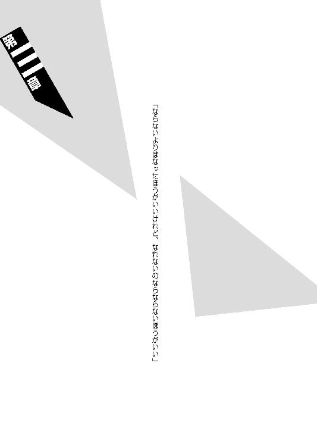
◆ ◆
殺人鬼・零崎人識。
殺人鬼・無桐伊織。
請負人・哀川潤。
暗殺者・闇口崩子。
異色と言うならこれ以上の異色はない組み合わせのこのチームが大厄島に乗り込むにあたってはいくつかの大きな問題があった──いや、そもそも、本拠地ならずとも闇口衆にとっての重要な拠点のひとつに乗り込もうというのだから、大きな問題も小さな問題も、目の前には山のように立ちはだかってはいるのだが、まずはそのうちの最初のひとつにあたる問題、ということである。
幼少期をその島で過ごした崩子に言わせれば、
「少なくともわたしの知る限りにおいて、闇口衆、その身内ならぬ部外者が大厄島に侵入した──生きて潜入に成功したという記録は、あの島に闇口衆が根付いて以来、たった一度だけのことです」
である。
「わたしが島を離れて三年──ただの三年では、その記録が更新されたとは思えません」
「あっそ。じゃ、あたし達がその二度目だ」
ややもすると脅しの意味もこもっていただろう崩子の台詞だったが、哀川潤はそれを聞いても取り合いさえしなかったが、しかしそこでふと思いついたように、
「ちなみに最初に侵入した奴ってのは誰なんだ？」
と訊いた。
崩子はやや言いよどんでから、
「六何我樹丸」
と、その名を口にした。
「わたしと萌太の男親にあたる人物です」
「............」
「それこそ三年前のことでした。長年行方不明だった彼が大厄島にやってきたのは──もっとも彼はそれ以前に闇口衆の女......闇口憑依と関係を持っていたわけですし、侵入後に闇口衆の身内となりましたから、部外者というカテゴリーには厳密にはカウントできないのかもしれませんが」
さておき。
絶海の孤島であるがゆえに、海からの侵入は難しい──そちらに対する警戒は万全を期しているはずである。
だからこその中型輸送ヘリなのだ。勿論、ステルス性は皆無に等しいが──近代兵器、特に重火器系の兵器には縁遠い『殺し名』が相手ならば、撃墜される可能性は著しく低い。
要するには。
目論見としてのパラシュート降下──である。
上空千五百メートルからやや高度を落とし、適当な地点でヘリコプターをホバリングさせてのパラシュート降下。
（──いや）
（そこまでは、ヘリコに乗って、向かう先が孤島だって時点で予想がついてはいたんだが──）
覚悟は決めていたのだが。
そこで問題が起きた。
起きてしまった。
「へー」
闇口崩子が。
わざと幼さを装った口調で言ったのだ。
「人類最強の請負人っていうくらいだから、ヘリから飛び降りるくらいのことにパラシュートなんか必要ないと思ってましたけれど。意外と大したことないんですね」
「............」
崩子にしてみれば、それは半ば強引、否、完全に強引に拉致された上、意に添わず捨てたはずの実家へと連れ戻されるという散々な目に遭っていることに対する心ばかりの意趣返し──くらいの意味を込めたアイロニーでしかなかったのだろうが、これは相手が悪かった。
相手が最悪だった。
いや、最悪という言葉を使われることを彼女は忌み嫌うだろうから──ここはこう言うべきだろう。
相手が、最強だった。
「くくく──見くびってもらっちゃあ困るな」
哀川潤は背負いかけていたパラシュートを投げ捨てた。
「パラシュートなんかいらねえに決まってんだろうが。この程度の高さからなんて、余裕でテンエイティ決めながら降下してやるぜ」
やっすい挑発に乗るんだなあ！
人識がそんな突っ込みを入れる前に、哀川潤は既に次の行動に移っていた──手足を拘束されて身動きの取れない崩子を、今投げ捨てたパラシュート代わりにするかのように、その背中に背負ったのだった。
「え？ え？ え？」
己の迂闊な一言が招いた状況の変化についていけない崩子に構わず、哀川潤は着々と準備を進めていく──
「零崎くん。ジグザグ直伝だっつーその技術で、崩子ちゃんとあたしとを、ぐるぐるに縛ってくれ。途中で離れたりしないように」
「と、途中でって、まさか」
「途中っつーか空中な」
「ま、まさかまさか」
まさかわたしも巻き添えに、と崩子が青ざめる。
しかし手足を拘束された状態では、文字通りに手も足も出ない。
「だって崩子ちゃん、一人にしたら逃げちゃうかもしんないじゃん」
「に、逃げません、逃げませんから」
「いや、崩子ちゃんにはあたしがそんなチキンじゃねえってことを間近で目撃してもらわなくちゃーなんねえからな」
「こ、こ、子供の言ったことじゃないですか、本気にしないでください」
崩子の必死の抵抗はあっさりいなされる。
展開として予想外過ぎるのだろう。
いや、人識としても予想外過ぎる展開ではあるのだが。
「......俺はもうあんたの滅茶苦茶な行動を止めようって気は毛ほどもねーんだけどよ......でも、本当にいいのかよ？」
「あー？ いいに決まってんだろうがよ。あたしをなめんな。なんなら人識くんも一緒に飛ぶか？」
「いや、そうじゃなくってよ。直伝っつっても、俺の曲絃糸はジグザグの曲絃糸からはかなりオリジナルにアレンジしてあるからな──そもそもこりゃあ出夢の『一喰い』対策に無理矢理身につけたようなもんだし」
もっとも、結局は出夢相手に使うことはなかったんだが──と数年前のことを思い返しながら、人識は両手を構える。
手袋を嵌めた両手を。
見えないほどの細い糸が絡んだ──その両手を。
構えた。
「つまり、零崎流の曲絃糸だ。スキルとしてはむしろ人殺しに特化しちまってる──そりゃまあ拘束用にも使えるっちゃ使えるが、ちょっとでも俺の手元が狂っちまえば、あんたもその子も簡単にバラバラになっちまうんだぜ」
「いいよ。信じてる」
それもまた、あっさりした台詞だった。
つい数日前に自分を襲撃した相手、しかも殺人鬼を相手にその台詞は、あるいはただ愚かしいだけのものなのかもしれなかったけれど──
（............）
（毒気を抜かれるよなあ──本当）
やる気をなくす。
殺す気をなくす。
哀川潤からの、殺人鬼に殺人を禁じるという無茶な要求に従うことにしたのも──こんな気持ちになったからではなかったか。
「それにな、零崎くん。あたしは、もっと人殺しに──大量殺戮に特化した地獄みてーな曲絃糸ってのを知ってるぜ。それも元々は遊馬の伝授したスキルなんだけどな──まあ殺したいならやってみろ。それはそれで、とても面白そうだ」
「......傑作だぜ」
人識はそれ以上議論せず──指を動かした。
市井遊馬。
哀川潤のかつての友人から教えてもらった通りに──つまりは拘束用のスキルとして、繰り出したのだった。
まあ実際のところ、今の人識の曲絃糸には人間を殺せるだけの力はないのだけれど──
「ちょ、ちょっと待ってください、わたしの意見は聞いてはもらえないんですか......」
ちなみに崩子からの抗議は、まあ半分以上自業自得のものとして完全なるシカトを決め込むことにした人識である。
それからの展開は至極単純。
哀川潤は操縦席に連絡を取って貨物室の扉を開けさせて、パラシュート代わりに（パラシュート代わりになどなるはずもない）闇口崩子を背負ったまま、テンエイティどころかミリオンエイティを決めながら──降下というか。
大厄島へと、落下していったのだった。
◆ ◆
零崎としての『兄』である零崎双識とはじっくりそんな話をするような時間はなかったし、同じく零崎としての『兄』である零崎人識とも、それについて深く話したことはないのだが──無桐伊織。
伊織には、血の繫がった兄がいる。
零崎としての『兄』ではない、兄。
正確には『いる』ではなく『いた』と、過去形で表現するべきなのだが──何故ならば彼、無桐剣午は、伊織が『零崎化』する際の煽りを食らって、その命を落としてしまったのだから。
仲のいい兄妹ではなかった。
というより、仲の悪い兄妹だった。
伊織はいつも苛められてばかりいた。
だから本音のところ、伊織にとって兄という言葉から連想できるイメージは、決していいものではない──まあ、それを言ってしまうならば、変態の権化とも言える双識や気まぐれの権化とも言える人識もまた、そのイメージを裏付けするものでしかなかったのだけど。
とにかく。
はっきり言って、伊織は剣午のことが嫌いだった。
ただ、剣午のことは嫌いだったが、しかし──それでも彼との思い出が悪いものばかりだったかと言えば、そんなこともない。
「伊織──」
と、剣午は言った。
いつのことだったか。
「──お前は何と言うか──中途半端だよな」
「......は？」
そんな反応をした憶えがある。
無理矢理脱がされそうになったニット帽の位置を、当時はまだ自分のものだった義手ならぬ両手で正しながらのリアクションだったと思う。
「いや、俺の見るところ──お前は常に何かから逃げているって感じなんだよ。困難からも、そして好機からも」
「それは──そんなことは」
言い返せなかった。
言い返せなかった。
怖くて嫌いな兄を前に萎縮してしまったということもあるが、しかし、剣午のその言葉がそれほど的を外さないものだったからというのが大きな理由である。
乱暴で、粗雑な癖に。
妙に──鋭いところのある兄だった。
状況やら環境やらを、一言で言い表すことが変な風に得意な男だったのだ。
逃避。
それはまさしく、当時の伊織にとっては核となるようなキーワード──
「だけどいつまでも逃げてばかりはいられないだろうな。いつかお前は対面することになる──これまで逃げ出してきたもの、その全てと」
「な、何を言っているんですか、お兄さん。伊織ちゃんはですね、別に逃げてなんて──」
釈明したが、それは噓だ。
噓だったと──今ならわかる。
痛いほどわかる。
もうないはずの両手首の先が、痛むほどにわかる。
幻肢痛を感じるほどに。
それを理解するために支払った代償はあまりに高過ぎて、そして取り返しのつかないものだけれど──その取り戻せないものの中には、剣午の命も含まれているのだけれど。
いや。
本当は──当時だって。
そんなことはわかっていたのだ。
それでも。
「──いませんよう」
と。
そう言わざるを得なかった。
「いや、逃げてるね」
しかし剣午はそう言った。
それは伊織を苛めるときの、いつもの口調だった。
「お前は逃げている──俺からも逃げている」
「それは──それは、お兄さんがわたしに酷いことばかりするからじゃ──ないですか」
「そうかもしれない。だけどどっちが先かなんてわかんねーよ。お前がちょろちょろ逃げてっから、俺としてはむかついていじってやりたくなるのかもしんねーしな」
「そ、そんなの勝手な理屈ですよう」
「そうだな──だが、それがどうした。勝手だと思うのなら、抵抗すればいい。戦えばいい。それだけのことじゃないか。なのにお前は──逃げるだけなんだ」
「............」
「しかし、逃げてばかりいても、結局は無駄なんだ──地球は丸い。そして世界は球体だ。どんなに遠くに離れても──離れれば離れるほど、逃げれば逃げるほど──今度はお前が追いかけているようなもんだ。だからいつかお前は、自分の背中と出会うことになる」
もっとも、そんな意味のある──意味深な会話を剣午としたことなど、やはり数えるほどしかなかったのだけれど──まあ、要するにはそんなあれこれが走馬灯のように脳内を駆け巡ったわけである。
パラシュート降下の最中は。
「ううう......怖かったですよう、怖かったですよう、怖かったですよう」
「ジェットコースターとかのほうがよっぽど怖いだろ。パラシュートつけてりゃ安全なもんだぜ」
伊織が久方ぶりに地に足をつけ、自分の身体を抱きしめるようにしながらがたがたと震えていると、横合いから（自分の使用したパラシュートを几帳面に折り畳みながら）、人識がそんなことを言ってきた。
「そんなこと言われても......わたし、パラシュート経験なんかゼロですし」
「普通の奴はゼロだよ。俺は......まあ、昔似たようなことはしたことがあるけどな」
「そうなのですか？」
「ああ。もっとも、そのときの状況はもっとハードなもんだったけど。何せ墜落中の飛行機からの脱出だったから。出夢の所為でエンジンぶっ壊れちまってよー」
「............」
伊織は絶句する。
どうやら最新の（三人目の）『兄』は、想像以上にスクランブルな半生を送ってきているらしいと、改めて思う──しかし、そのスクランブルエピソードの多くに『出夢』なる人物の名前が登場している風に感じるのは、気のせいだろうか。
「さーてと。これからどうするかなー」
まだ腰が抜けて立ち上がれない伊織を尻目に、伊織の分のパラシュートまで折り畳みながら、人識は呟く──伊織と人識が降下、そして着地したのは、どうやら山中のようだった。いや、島の大半が山岳地帯だというのだから、当然と言えば当然だが──そもそも崩子の話によれば、この大厄島には舗装道路がないらしい。
「生い茂る木々が俺らの姿を隠してくれてりゃいーんだが......無理だろうなあ。あんっだけ派手に落下傘が開いてたんだから、見つけないほうが難しいはずだ」
「......哀川のおねーさんと崩子ちゃんは、どこに落ちたんでしょうね。この辺りじゃなさそうですけれど」
「さてな。向こうは落下速度が速いから運がよきゃ見つかってねーだろうが......俺らは随分と風に流されちまったからな。おんなじ位置に着地ってわけにゃいかねーだろうよ」
言いながら人識は手際よくパラシュートを畳み終え（小器用な男である）、それを登山用ルックザックの中へと押し込んだ。普通に考えればもう使う機会のなさそうなパラシュートではあるが、自然保護の観点、あるいは単純にスニーキング任務のいろはとして、その場に打ち捨てていくわけにはいかないのだった。
「......でも、人識くんって馬鹿ですよねえ」
「あ？」
作業を完了し、一休みとばかりに近くの苔むす岩に腰掛けた人識は、しみじみとしたような伊織の言葉に、じろりと睨みを返す。
「誰が馬鹿だこの野郎。......なんか伊織ちゃん、最近俺のことを軽んじ過ぎてないか？」
「間違えました。馬鹿正直ですね、と言いたかったのです」
「大して変わらねーだろうよ」
「だって、人識くん。哀川のおねーさんは何を考えているんだか、わたし達よりも先に飛び降りちゃったんですよ？ だったらもうわたし達は、あのまま逃げちゃってもよかったじゃないですか。操縦席をジャックするなり何なりして」
「......ああ、そっか」
言われて、人識は頭をかく。
どうやらそんなことは考えもしていなかったらしい──だとすれば馬鹿正直どころの話ではなく、本当にただの馬鹿ということになってしまうが。
伊織は本気で呆れる。
「そんな手もあったな。かはは。毒気抜かれ過ぎて、気がつかなかったわ」
「はあ。......前から思ってましたけど、人識くんって、兄としてはいまいち頼りないですねえ。双識のおにーさんなら、こういうときどうしたと思います？」
「兄貴の話とかすんなよ。それに、俺に兄貴と同じことを期待するな──俺はそもそも、零崎一賊としちゃあ半端モンだったんだからよ」
人識は本当に嫌そうな顔をする。
兄扱いされることにはかなりの抵抗があるらしい──実際人識は伊織のことを、滅多なことでは『妹』としては扱ってはくれない。
血の繫がりなどないのだから、深く考えてみればそれが正当なのだろうとは思うけれど。
どこか物悲しいとも思う。
伊織が、ではない。
そんな風にしか周囲と付き合うことのできない、真っ直ぐには他人と付き合うことのできない零崎人識のことを──物悲しく思うのだ。
事実。
零崎人識が、ある種の親しみをもって語る対象を、伊織はこれまでにたった三人しか知らない。
一人は先程も話に出た、匂宮出夢。『殺し名』序列一位、匂宮雑技団（伊織はまだその辺りの事情はよく知らないが）所属の殺し屋だとか。
一人はあの美少女、闇口崩子のご主人様（どういう意味なんだろう、それは）だという、『欠陥製品』。他にも戯言遣いと言ったり、色んな呼び方をしている──もっとも名前を口にしたことは一度もないけれど。
そして最後の一人が──零崎双識。
悪態をつき、毒づきながらも──人識は親しみを持って双識のことを語る。零崎一賊の中でも兄貴以外を家族と思ったことなどない──と、そんな台詞を一体何度聞いたことか。
「......まあ、あとは何とかタマモさんだったりサクシさんだったりもよく話題には上りますが、あちらに関しては、なんだか親しみという感じではありませんよねえ」
「あ？ 何言ってんだ？ 言いたいことがあるなら聞こえるように言えよ」
「いえいえ、言いたいことなどありません。伊織ちゃんは無口な子です。花で言うならクチナシです」
「あっそ。......さっきの話だが、そうだな。兄貴だったら喜び勇んで哀川潤におぶわれて、ヘリコプターから飛び降りてたんじゃねーのか？」
「あ、そうですね。そうでした、双識さんは哀川さんの熱烈ファンなのでした──しかし、そもそも哀川のおねーさん、見つかる見つからない以前に、無事なんですかねえ。おねーさんの場合、着地というか着弾という感じになったと思われますが」
「さてな。案外」
人識は尻の下の岩をぺしんと叩いて、
「岩肌にでも激突して、全身粉々になっちまってるかもしんねーぜ。それこそ真っ赤に染まってな」
と言った。
当然『あの人類最強のことだ、無事に決まっている』とでもいう調子の答が返ってくるだろうと予測していた伊織にとって、人識からのその返しは意外なものだった。
それに気付いたのか、
「何だよ」
と人識は言う。
「誤解してんじゃねーだろーな、伊織ちゃん──人は死ぬぜ、簡単に。生きてる奴が死ぬのは当たり前のことだ。俺達は殺人鬼だが、別に俺達が殺さなくても、みんな死ぬんだよ。兄貴も大将も曲識のにーちゃんも、馬鹿みてーに強かった癖に、みんな死んじまったらしいじゃねえかよ。殺しても死ななそうだった、命のストックを二つ持ってた出夢だって死んじまった。例の崩子ちゃんの兄貴、石凪萌太くんとやらも、てめえが死神の癖に死んじまったんだろう？」
「ええ──そういうことでした」
「な？ みーんな死ぬんだよ。だから哀川潤だけが死なないなんてことはねーさ。あいつだって殺せば死ぬ。ただ、殺せないというだけで──理不尽に生まれて意味不明に死ぬんだ」
「............」
「勿論、俺もあんたも死ぬんだぜ。かはは」
言って──人識は笑う。どういう心境なのか、楽しそうに笑う。
伊織は。
元の家族と死に別れ、そして零崎双識とも死に別れてから──随分と長い間人識と行動を共にしてきているつもりだが、そしてその間、人識は（ほとんど縁がないはずの）伊織に対し、とてもよくしてくれているのだが──それでも。
極端に。
人識は線を引いている。
ある一定の距離から先には──頑なに人を近寄らせない。
何と言うか、思うのだ。
人識を見ていると、思ってしまうのだ。
（この人は）
（いつわたしの前からいなくなっちゃうかわからないし──）
（──いつか確実に、わたしの前からいなくなっちゃうんでしょうね）
そんな風に──思ってしまうのだ。
実際に一度、人識は伊織の前から姿を消しているし──また、「いつまでも俺がそばにいると思うな」「俺はそのうち消える」「さっさと一人で生きていけるようになれ」と、そんな意味の言葉を、ことあるごとに口にする。
関係。
今の関係がいつまでも続くものではないことを前提に──彼は生きているように感じてしまうのだった。
少なくともそれは、双識の生き様とは全然違うものだろう──双識は（そのやり方にはいささか疑問もあるけれど）むしろ固い絆を結ぼうとするタイプの人間だった。
伊織とも。
彼はそうあろうとしてくれた。
（ある意味、臆病とも言えます）
（人識くんは、過去に人間関係で失敗したことでもあるんですかねえ──）
だとすれば。
だとすれば──それは誰との人間関係だろう。
匂宮出夢か。
『欠陥製品』か。
零崎双識──ということは、なさそうだけれど。
（............）
「......でもま、そんなことを自分で言っておいてなんだが、どーせ無事だとは思うぜ？」
どうやら伊織が黙り込んだのを見て、少し言い過ぎたとでも思ったようで、人識はそんな風にフォローを入れてきた。
その気遣いは嬉しくなくはなかったが。
その気遣いが、人識と伊織の、現在の距離を言い表しているようにも思えた。
（わたしとしては）
（もう少し仲良くしたいんですけれど）
「あの程度の自由落下で死ぬようなタマじゃねーだろ。自由落下とは言葉で言うほど自由じゃねえらしいが、人類最強にだけは──その謂は通じないだろ」
「はあ......では、わたし達チーム零崎と致しましては、これからどうしますか？」
「どーするもこーするも......ガイドとはぐれちまったからなあ。下手に動いたら遭難するぜ、この山。幸い、人類最強から『次なる指令』みてーなのは受けてないことだし、ここでしばらくは時間潰すとしよう」
「ガイド......闇口崩子ちゃんですか。可愛らしかったですねえ──妹があんなだったら、兄としては本望なんでしょうねえ」
人識くんもわたしがあんな風だったらもう少し可愛がってくれるんでしょうか、的な意味合いを込めて言ったつもりだったが、そんな伊織の思惑に気付かなかったのかそれとも気付いて無視したのか、人識は、
「どうだろうな。知らねえよ」
と、まるで取り合わずに話を進めた。
「......ところで伊織ちゃんよ。あんた、本当に大丈夫なんだろうな？」
「はい？」
「とぼけんなよ。言っとくけど俺はそういうのに鈍いから、言ってくれなきゃわかんねーぜ。殺人衝動というか、なんというか──そういうあれこれは、あんたの中に溜まってないのか？」
澱のように。
わかりやすいようにと、人識はそう例えたのだろうが──伊織はそれに対して、「ちんぷんかんぷんですよう」と答えた。
「そっか。まあ、それならそれでいいんだけどよ──それが本当ならいいんだけどよ」
「......確かにわたしは、色々あって──色々中身が組み替えられたように思いますけれど、だけど、それでもわたしはわたしなんですよ。少なくとも、あの方達──早蕨三兄妹と戦ってたときほどの高ぶりは、今はありません」
「......ふうん。確かにあんたは零崎化したとは言っても、ほとんどの零崎と接触してないんだもんな。そういう意味じゃあ、進行は遅い──のかもしれねえ」
言っている人識自身にもよくわかっていないかのような、曖昧な物言いである。そう言えば、それと似たようなことを双識も言っていたような気もするが──どうだろう、よく憶えていない。
「そっか。まあいいさ」
人識は、そう言って──伊織からそっと視線を外し、手袋を嵌めた自分の手のひらを見て。
見詰めて。
「だとしたら──俺は自分の心配をするべきか」
と言った。
「............？」
伊織はその台詞に、眉を顰める。
それは不思議な台詞だった。
「えっと......あれ？ 人識くんは零崎として立ち位置が特殊だから、その辺りの反動は大したことないって言ってませんでしたっけ？」
「ん？ ああ、そういう意味じゃねーよ。俺が心配しなきゃいけねーことってのはな──まあ、伊織ちゃんには関係ない話なんだけど」
と。
人識が言いかけたところで。
関係ない──と、言いかけたところで。
「............っ！」
殺人鬼──零崎人識は表情を一変させ。
岩にむした苔の上を滑るようにぐるりと回転し、決していいとは言えない足場で両脚を構え──後方を向いた。
そして。
その方向を──強く睨む。
つられて伊織も、抜けた腰のことも震える身体のことも忘れて立ち上がり、人識の視線を追う──そこには。
果たして、そこには。
一人の少年が立っていた。
たった一人の少年が立っていた。
人識や伊織と、そう年齢の変わらないだろう少年が──立っていた。
樹の陰に隠れもせず、岩の陰に隠れもせず。
ただ立っていた。
あるだけの殺意を解撒いて。
そこにただ──立っていた。
「............っ」
伊織も──成り立てとは言え、そして既にその母体となる一賊自体が全滅してしまったとは言え、零崎である。
殺意に関しては相当敏感だという自信がある。
早蕨三兄妹との戦闘から始まるこの数ヵ月。
その感覚だけで──伊織は生き延びてきた。
今、人識も──だから、少年からの殺意を気取って、後ろを振り向いたのだろう。
だけど。
だけど──断言できる。
たとえ自分や人識が零崎の属性でなかったとしても──その少年の殺意を感じ取ることはできたはずだと、そう断言できる。
その身同様に、まるで隠す気のない。
等身大の殺意だった。
「ま、ま、『自殺志願』、『自殺志願』......はっ！ 穿いているのがスカートじゃなくて登山用のチノパンだから『自殺志願』が取り出せませんっ！」
「......下がってろ、伊織ちゃん」
突如湧き上がった緊迫した状況についていけず、馬鹿なリアクションを取っている伊織を片手で制するようにして──人識は一歩を前に踏み出す。
「つーか逃げとけ。マジで時間稼ぎくらいしかできそうにねえ──」
「ひ、人識くん？」
「早く！」
人識がそう怒鳴り。
それでも伊織は動くことができなかった──人識を置いて逃げるという選択肢を選ぶことが、咄嗟にはできなかった。
だって、逃げることは。
逃避することは。
わたしは、もうやめたのだから──
「......別に、何も死や死ないよ」
そこで。
伊織と人識の会話を断ち切るかのように──
少年は言った。
「む死ろ僕はきみ達を助けに来たんだ。ここは、素人じゃあ登ることはおろか降りることもできないような地形だからね──地元の人間でも僕くらい死か近付かない。全く、きみ達はついているのかついていないのか──」
抑揚のない、フラットな口調──と言うよりは、最早ただの棒読みと言ったほうが正解に近そうな、肉声でありながら同時に合成音声のような、実に機械的な、そして非人間的な──そんな喋り方であり、そんな声音だった。
聞いているだけで不安にされるような。
落ち着かない気分にさせるような。
そんな存在であり。
そんな少年だった。
「──これだって、夕飯のために鹿を狩ろうと持っているだけだよ。警戒死ないで欲死いな──零崎一賊の生き残り達。零崎一賊の、食べ残死達」
これ。
少年が気軽に、普通にそう表現したのは──彼が右肩の上に載せるように持つ、体格に不似合いなほどに巨大な──大鎌のことである。
水玉模様の、デスサイス。
「僕は石凪砥石──死がない死神だよ」
◆ ◆
大厄島は闇口崩子にとって三年振りとなる生まれ故郷である──二度と帰るつもりのなかった、できれば二度と思い出したくなかった、生まれ故郷である。
荒々しい海に囲まれた環境も。
見る者を吞むような雄大な大自然も。
険しい山々も。
北国に位置しながら湿気の多い亜熱帯的気候、一年の大半に雨が降るような、そんな空模様も。
大嫌いだった。
「............」
だから、無理矢理に拉致されてのこととは言え、とにかく帰郷をすることになって、嫌悪の情であれ憎悪の情であれ、もっと心にこみ上げてくるものがあるかと思っていたが──
そんなものは皆無だった。
というか。
それどころではなかった。
「......これが、人類最強」
呟く。
震えながら──呟く。
有り得ない、眼前の光景に──呟く。
中型輸送ヘリからのパラシュート無しのダイブ、あるいはゴム無しバンジーを決めた哀川潤と闇口崩子は、あっという間に闇口衆に取り囲まれた。
崩子が把握している限りにおいて、この島に住まう闇口衆の総数は、分家、関係筋も含めて二百余名。多少の増減はあれ、今でもその人数はそう変わらないはずだ。
島の面積に比して、それは決して多いとは言えない人数ではあるが、しかし島のほとんどが人の侵入を拒む山岳地帯であることを考えれば、むしろ人数としてはその辺りが限界値なのかもしれない。
褒めたくも認めたくもないが──かつて自分がそうだったように──さすがは尋常ならぬ警戒心と排他心を持つ闇口衆のこと、哀川潤と闇口崩子の侵入には即座に対応し、着地点に三十人からの闇口衆が駆けつけたのだった。
二百余名のうちの三十人。
パラシュートを使っていないから見つからないのではという人識の予想は、闇口衆に対しては、いささか牧歌的過ぎたと言える。
ちなみにその着地点とは、大厄島で一番の水量を誇る大滝の、滝壺のど真ん中である。大厄島の雨量の多さが大嫌いな崩子ではあったが、このときばかりは、彼女は湿潤気候の恩恵を受けたというわけだった。
超高々度からのダイブ。
落下した地点がただの地表だったら間違いなく死んでいただろう──まさか計算ずくだったとは思わないが、哀川潤が、どこにあるのか知りもしないであろう大滝を目指して飛び込みをしたのだとは思わないが。
どうあれ、それだけでも十分とんでもない。
そして──それだけではなく、それ以上だった。
二百余名のうちの三十人。
その三十人を──哀川潤は蹴散らした。
「うわはははははははは！」
なんて風に。
大笑い高笑いをしながら──実に楽しそうに、三十人を三十人とも、全員を滝壺に叩き込んだのである。
蹴散らした。
文字通り、ハンドポケットのままで蹴散らしたのだった。ヒールではなくトレッキングシューズだったことが、闇口衆の面々にとってよく働いたのか悪く働いたのか。
勿論、知っていた。
『殺し名』に属する者として──かつての『大戦争』の直接的な原因であり、大袈裟でなく世界を破滅に導きかけたという砂漠の鷹を──その成れの果てとしての人類最強の請負人を、知ってはいた。
つい数ヵ月前に、行動を共にもした。
だけれど──実際こうして戦う姿を目の当たりにすると、まるでそのスケールが違う。確かに蹴散らした三十人の内に、闇口衆の本隊の者は指揮官数名くらいしかいなかったが──それでもこの島にいるような者は、プロのプレイヤーとして全員が一流、全員が一騎当千の兵であるはずなのだが──実際。
一流なんて言葉は。
一騎当千なんて言葉は──結局のところ、最強の代名詞でしかないのだろうか。
とにかく──そのあまりの暴虐ぶりに。
崩子は、生まれ故郷に対する嫌悪や憎悪はおろか、ほんのわずかのノスタルジィさえも──感じる暇がなかったのである。
「崩子ちゃーん。もう出てきていいぜ？」
滝壺に落とした三十人が浮かんでこないのを確認してから、哀川潤は岩陰に身を潜ませて戦闘の様子を窺っていた崩子を振り向いて、そんな風に声をかけてきた。
殺人鬼二人がいないこの状況、哀川潤が戦っている（暴れている）隙に逃げることも考えたのだが、しかし既に大厄島に這入ってしまった以上、そんな行為には何の意味もない──否、崩子にとっては最早それは行為としては自殺行為に匹敵する。
闇口衆の本家出身とは言え。
その本家を捨てた崩子にとって──この島には、味方は一人だっていないのだから。
「............」
もっとも。
だからと言って哀川潤や、二人の殺人鬼が自分の味方だとは──思わないけれど。
「......哀川さん」
崩子は、ゆっくりとした足取りで──崩子だけはトレッキングに合わせた服を用意する時間がなかったため、ワンピースにサンダルというおよそありえないファッションで山中にいる羽目になっているのだ──しかもそのお陰で助かったとは言え、滝壺に落ちたため、白いワンピースはぴったり身体に貼り付いてしまっていて、非常に動き辛い──もっとも滝壺に落ちたときの衝撃で拘束されていた手足が解放され、崩子は自由になったのだから、その辺りはやはり痛し痒しだが──哀川潤に近付いていき、そして訊いた。
「萌太からの依頼というのは......本当のことなのですか」
「えー？ ああ、そのこと？」
哀川潤もまたずぶ濡れになっていたのだが、好き勝手に暴れている内にその水分は全て飛んでしまったらしい、今は赤い髪の毛だけが気持ち湿っているくらいである──とんでもない乾燥法もあったものだ。
水場から岸に上がった犬が全身を振るわせるようなものだろうか。
（──いや）
（犬は──わたしだ）
（わたしなんだ──）
それでも真似はできないが。
しかし早く身体を拭きたいというのは本音だった、折角治りかけている風邪がぶり返してしまう。
「ああ、本当だぜ──あたしは戯言遣いのお兄ちゃんとは違って、滅多なことじゃ噓はつかねーよ。いーたんとお前ら兄妹とで澄百合学園に乗り込んだとき、空間製作だかなんだかで分断されたことがあっただろう？ 崩子ちゃんといーたん、あたしと萌太くん。そんときに言われてたんだよ」
「......萌太が、そんなことを」
処刑鎌。
デスサイス。
確かに。
兄、石凪萌太は、闇口衆として仕事をしていた際──崩子の代わりに仕事をしていた際──そんな得物を愛用していた。
石凪として──死神として。
闇口として──暗殺者として。
遠慮忌憚なく、振る舞っていた。
「よっくわかんねー奴だったな、あいつは。ま、あたしとしても前払いで報酬を受け取っちまってるし──動けるようになった以上、任務は遂行しなきゃなんねーさ」
「報酬？」
そんなものを払うような余裕が萌太にあっただろうか、と崩子は首を傾げる。時間的な余裕は勿論として、金銭的な余裕も、とてもあったとは思えないのだけれど。
家出中の生活は、いつも汲々としていたのだ。
浅野みいこや『戯言遣いのお兄ちゃん』から、果たしていくら借りているものなのか、崩子はその正確な額を把握してさえいない。
「......いえ、そんなことよりも。哀川さん──動けるようになったとは言え、あなたはまだ、二割程度の力しか発揮できないと──そう仰っていましたよね？」
「ん？ ああ、そうそう。多分そんな感じ──だから零崎くんと伊織ちゃんに手伝ってもらっちゃってんのよ。ま、心配しなくとも戦闘スキルを失っちまってる崩子ちゃんには手伝わせたりはしねーさ──崩子ちゃんは案内だけしてくれりゃあいいんだ。案内と、それから取次ぎな」
「あれで二割とは......本当に恐ろしいですね、あなたは。......戯言遣いのお兄ちゃんは、どうして臆せず怯えずあなたと付き合えるのでしょう。正直、わたしは今、あなたが怖くて仕方がないのですけれど──」
「いーたんは暴力を怖がるタイプの男じゃねーからな。知ってる？ あいつ、どんだけフルボッコにされても目を閉じねーんだよ」
「それは──」
知っている。
崩子は知っている。
崩子がナイフを向けたときも──『彼』は決して目を閉じることなく。
目を逸らすこともなかった。
「──そうですけれど」
「あたしはいーたんのそういうところが好きだけれど、でもまあ崩子ちゃんから見れば、危なっかしくもあるだろうな。零崎くんを見てりゃ、それがわかるだろ？」
「？ 零崎くんとは──あの顔面刺青のかたのことですよね。あの人が、戯言遣いのお兄ちゃんと、何か関係があるんですか？」
「関係？ 関係は大ありだな」
哀川潤はおかしそうに肩を揺らす。
「表裏だよ。一体ではない表裏だ」
「............？」
意味深長な風に、何を言っているのだろう。確かに年齢的には、あの殺人鬼は崩子の『ご主人様』と同じくらいのようだったが──そう言えば『ご主人様』は零崎人識という名を何度か口にしたこともあったが──いや。
今はそんなことはどうでもいい。
もっと気にすべきことがあるのだ。
少なくとも、自分が無事に『ご主人様』の元へと帰るためには──確認しておかなくてはいけないことがある。
「話を──戻させてください、哀川さん。あれで二割ということは、全快時には──あの五倍の実力を発揮できるということですよね？」
「......まあそりゃ、数字の上ではそうなるな。実際はそんな計算通りにはいかないだろうけど......それがどうした？」
「いえ──ただ、それならばどうして、全快を待たなかったのかとわたしは言いたいのです。いくら真心さんから受けたダメージでも、年明けまで待てば回復したはずでしょう。萌太からの依頼を遂行するのは、それからでも遅くなかったはずでは？」
「確かに、美少年からの依頼内容は厳密な期限を設けられてなかったけどな──だけどまあ、いーたんとかクソ親父とかのことが解決したところで、そこそこベターないいタイミングかなーと思って」
「そ、そこそこって」
「要はノリだよノリ」
くくく、と哀川潤は悪戯っぽく笑った──冗談やはぐらかしで言っているのではないことは、その笑い方を見れば一目瞭然だった。
しかし信じられない。
信じたくない言葉だ。
ノリ？
そんな思い付きのようなことで？
なんてことだろう、と崩子は思う。
あれで二割というのが本当に本当ならば──ひょっとしたら。
（ひょっとしたら──）
（ひょっとしたら二割ではない全快時の哀川潤ならば、あの男に勝つことができたかもしれないのに──）
（負けを知らない、あの男に──）
「実を言うとだな、崩子ちゃん」
崩子が僅かに目を伏せると──可憐なその動作を見逃さなかったかのように、そしてその心中を見透かしたかのように、哀川潤は言った。
「二割というのは噓だ」
「え？」
その言葉に、崩子は顔を起こす。
「う、噓ですか？」
「ああ。黙っといたほうが格好いいから隠しとこうと思ったが、崩子ちゃんにだけは言っておくことにしよう」
「噓──は、しかし、滅多なことではつかないのでは？」
「だから滅多なことじゃなく噓をついたんだよ。馬鹿コンビに襲撃されたときには、確かに二割程度の回復率だったんだけど」
「じゃ、じゃあ」
今は全快──とは言わないまでも。
ほんの数日でそこまで回復することはなくとも、しかし闇口衆三十名との戦闘の中、本来の調子を取り戻していったということは十分に考えられる、ならば三割か四割、ともすれば五割ということも──
「今は一割を切った」
哀川潤は言った。
「正直、ちっとやべえ」
「......はあ？」
それこそ滅多にしない──まかり間違っても『ご主人様』の前では見せるはずもない、見られるようなことがあれば迷うことなく自ら命を絶つ──啞然とした顔で、崩子は口をあんぐりと開けた。
「え？ え？ え？ で。でも──哀川さん、ただの一回も、誰からも攻撃を受けてなかったじゃないですか──」
それとも。
崩子の気付かない間に、哀川潤は闇口衆の三十人から、何らかの攻撃を受けていたのだろうか？
確かに戦闘スキルを失っている今の崩子には、『殺し名』実戦レベルの攻撃を全て見切れるわけではない──が。
「あいつらに削られたわけじゃねーよ」
と、哀川潤は滝壺のほうを見ながら、そんな風に否定した。
崩子もつられてそちらを見るが、そこに放り込まれた三十人は未だに一人も浮かんでこない。
「ライフポイントが一割まで減ったのは、その前の話だ」
「その前って」
まさか。
いや、まさかも何も、考えるまでもなく。
真逆どころか真っ直ぐに。
「ヘリコからパラシュート無しのダイブ決めたじゃん。あれで水面に叩きつけられたとき、骨が何本かイッた」
「......ほ、骨っ！」
「うまく着水したつもりだったんだけどな──ほんの少しだけ、入水の時機を外しちまった。失敗失敗。およそ剝離骨折十三箇所って感じかな。治りかけてたとこがほとんど壊れちまった。完璧、ライフ表示が赤色になって、ぴこぴこ点滅してるっつーの」
やはり高さの規模が違った。
水泳の飛び込みとはわけが違った。
無事で済むわけが──なかったのだ。
「あ、あなた──はっ」
馬鹿なんですか、と言おうとして──すんでのところで、思いとどまる。
万が一にも乗ってくるとは思わなかったとは言え、そもそもパラシュートの着用について哀川潤を挑発したのは自分だ。
それに──わかる。否応なく理解させられる。
実際、人類最強の請負人であるところの哀川潤が相当数の負傷を負っているというのに──崩子とくれば全身がずぶ濡れになった程度で、まるでダメージらしいダメージを受けていないのだ。
戦闘スキルを失ったとは言え、肉体強度までが削がれたわけではない──だけれど、それでも状況、それに条件を鑑みれば明らかだった。
崩子の無傷は哀川潤が崩子を庇ったがゆえの結果だと──それは明らかだった。
「............」
いや。
だったら最初から、ヘリコプターから飛び降りるときに崩子を背負わなければよかったというだけの話だが。
（戯言遣いのお兄ちゃんが言っていた通り──）
（なんて──マッチポンプな人なんだ）
だけど、それでも庇われたことには違いない。
思う──思わされる。
一体わたしは、どれだけの人間に、庇われ続けることになるのだろう──萌太も。
（萌太も、わたしを庇って──）
「あと、アイフォンが水に浸かってぶっ壊れちまったから、精神的にもちょっと凹んでる」
「そ、それはただの不注意かと」
「くくく」
と、哀川潤は繰り返して笑う。
「しかしまあ、崩子ちゃん。まだいまいち乗り気になれないみたいだけれど、折角なんだから崩子ちゃんも、これをいい機会だと捉えてみたらどうだ？ 崩子ちゃんもただガイドを務めるだけじゃーいまいちつまんねーだろ。家出中だか何だか知らねーが、もう世話を焼いてくれる兄貴はいねーんだ。逃げてばっかいねーで実家やら血統やらと向き合ってみるには、そこそこベターなタイミングなのかもしれねーぜ」
「逃げてって」
逃げて？
逃避？
実家から──血統から。
この島から？
「少なくともよお」
哀川潤は、ぽん──と、ワンピース同様に濡れて貼り付いている髪を撫でるように、崩子の頭に手を置いた。
それは決して。
気遣いのある、優しい置き方ではなかった。
「いーたんを萌太くんの代わりにしようとか思ってんだったら、あたしは怒るぞ」
「...............っ」
凄むような哀川潤の言葉に、崩子は大袈裟でなく身を竦ませたが──崩子が反応する前に、崩子が反論する前に、この場面での会話は中断されることになった。
寸断されることになった。
無論、そうでなくとも。
反応できたか、反論できたか。
それは自分でも──わからないけれど。
「──久し振りですね」
気が付けばその女は、滝壺の中にいた。
鉄扇を構えた和装の女。
どうやってそんな位置に跳んだものなのか──否、それ以前に、いつの間にそんな位置に跳んでいたものなのか──少なくともさっきその方向に視線を向けたときにはいなかったはずの彼女は、滝壺の中の大岩の上に草履で立ち、哀川潤と闇口崩子のほうを向いていた。
その女。
その女を。
崩子は──憶えていた。
何の前触れもなくそこに、其処此処に出現することのできる、その技術──『空蟬』のことも、憶えていた。
三年振りだろうと、何年振りだろうと、忘れられるはずもない。
何故ならば彼女は──闇口崩子という存在を、この世に産み落とした女なのだから──
覚悟は決めていた──つもりだ。
目的地が大厄島と聞いた時点で、その覚悟は決めていたつもりだ──絶対に会いたくなかった人達に会う覚悟は、決めていたはずだ。
けれど。
けれど──こんな唐突に。
（──いや）
（この人は──いつだって唐突なんだ）
それが彼女の固有スキル──『空蟬』なのだ。
闇口衆大厄島首領代行。
暗殺者──闇口憑依である。
「う......う」
崩子は、滝壺に立つ憑依に対して何かを言おうとして、口を開きかけたが──しかし。
和装の女──憑依が「久し振り」と言った対象は、闇口崩子ではなかった。
彼女の視線は崩子を素通りして──哀川潤に向いていたのである。
「記憶していますよ、哀川潤──死色の真紅。五年前、わたくしの仕事の邪魔をしてくださいましたよね。あの頃に較べれば、随分名を上げられたものです──いえ、あなたの実力に、ようやく名声のほうが追いついたといった感じでしょうか」
「......誰だっけ？」
哀川潤は、シニカルな笑みを浮かべながら──憑依のほうを向き、相手を軽く指さす。
「悪いな、あたしは友達のこと以外、あんまり記憶してねーんだよ。どっかで殴り合ったこと、あったっけか？」
「──でしょうね。あの頃はわたくしも、一暗殺者に過ぎませんでした。あなたにとっては数多い戦闘経験の、取るに足らないたったひとつに過ぎなかったでしょう」
お互い若かった──ですね。
と、ため息交じりに、憂鬱そうに憑依は言う。
哀川潤に。
崩子にではなく。
実の娘の──崩子にではなく。
「──案内ならわたくしが務めますよ、死色の真紅。ついて来てください」
「ああ？ なんだよそりゃ」
憑依からの申し出に、唇を歪める哀川潤。
むしろ挑発的な表情だった。
「何かの罠のつもりか？ 面白そうだな」
「罠だなんて......冗談はやめてください。死色の真紅相手にそんなものを張っても意味がないでしょう。無駄な戦いが嫌いなのですよ、わたくしは──何が目的なのか知りませんが、どうせわたくしではあなたは止められませんし......まして警備部の連中の存在など、あってなしが如しです。濡衣が留守にしている現在のこの島において、名高き人類最強の請負人を打倒し得る存在など──精々ただの一人くらいのものなのですから」
◆ ◆
こうして。
零崎人識と無桐伊織は石凪砥石に案内されて。
哀川潤と闇口崩子は闇口憑依に案内されて。
大厄島の南西に位置する集落の中心部にある武家屋敷──生涯無敗、石凪萌太と闇口崩子の父親にして闇口憑依の伴侶、六何我樹丸のところへと導かれることになるのだった。
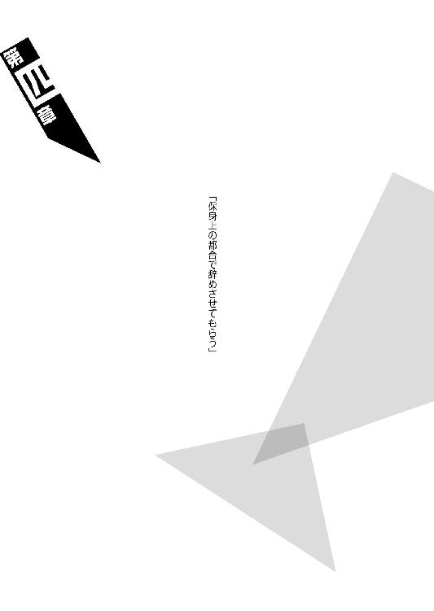
◆ ◆
哀川潤から疑問を投げかけられた通り、確かに闇口崩子は、血縁上兄にあたるはずの石凪萌太のことを兄と呼んだことがない。
萌太、と──ただただそう呼んできた。
それをおかしいと思ったことさえも、そもそも疑問に感じたことさえもない──気付けばそれが当然のように、普通にそういう風にしていたというだけのことだ。
最終的には崩子を庇う形で命を落とした石凪萌太ではあるが──以前。
生前の石凪萌太は、しかし、取り立てて崩子にとって理想の兄というわけではなかった。
むしろ口うるさいと思っていた。
世間的な評価で言うところの過保護な兄という奴で、実際、二人が住居としていた骨董アパートにおいては、度々崩子の教育方針を巡って、住人同士の議論が紛糾したものだった。
どんな議論になったところで。
最終的には萌太の意見が通っていたが。
（そういう──）
（──わたしの意見を蔑ろにするところが──嫌だった）
嫌いではなかったが──嫌だった。
鬱陶しいと思っていた。
たとえば萌太は、今時頑ななまでに、崩子にお洒落を許さなかった──化粧なんてもってのほかで、華美なアクセサリーは勿論のこと、衣服を始めとして靴やら鞄やらに至るまで、微に入り細を穿ち、全てに口出ししてきた。
だから崩子はいつも簡素で、とてもシンプルなファッションばかりに身を包んでいた。
そのことをアパート住民の女性陣は勿体ないと言っていたが──萌太が自分の主張を譲ることは絶対になかった。
物腰柔らかで人当たりがいい割に、頑なさにおいては特筆すべき異様さ、換言するところの屈託を、石凪萌太は持ち合わせていたのだ。
......まあ。
単純に、貧乏だったということもあるのだが。
食い扶持の全てを萌太に一任しておきながら（萌太は崩子を養うためにこそあちこちから借金をしつつ、バイト生活にその身を窶していたのだ）、文句を言う筋はないと思い、崩子がそれに逆らうことはなかったけれど──それでも、決してそのことを、快くは思ってはいなかった。
考えてみれば昔からそうだった。
ここで。
大厄島で生活していた頃からそうだったのだ──頼みもしないのに、石凪萌太は、本来ならば崩子が担うべきだったはずの任務を、全て──
完全に全て、横取りしていた。
完全とは、つまるところ、たったひとつの取りこぼしもなく──という意味である。
闇口憑依、『空蟬』の憑依、崩子の産みの親である彼女のサポート役を、萌太は全任されていた。今となっては大厄島首領代行の地位にあり、当時から闇口衆では注目のプレイヤーだった彼女の相棒だったのである。
萌太がそうしてくれていたお陰で──
事実上崩子は、裏の仕事に手を染めていない。
闇口衆の本家の一員として、幼少期からの訓練は限りなく積まされているが──実戦経験はほとんど皆無だ。
勿論、石凪萌太も──その出生、その生き様は著しく特殊だったとは言え──『殺し名』が占める世界に生まれ、『殺し名』が占める世界に生きる者である。
プロのプレイヤーとして。
殺傷行為自体に抵抗があったわけではあるまい。
崩子に仕事をさせたくないと──崩子に他人を傷つけさせたくないと──そんな風に思っていたわけではあるまい。
だから──あれもあくまで過保護の一環だった。
（萌太は──）
（わたしが、殺されたり傷つけられたりすることを──嫌ったんだ）
「殺す者はいずれ殺される──傷つける者はいずれ傷つけられる。僕はそう思うんですよ、崩子──わかりますか？」
わからなかった。
崩子には萌太の言葉はわからなかった。
だって、闇口衆で言えば、闇口憑依にしたって、あるいは伝説でしか知らないような闇口濡衣にしたって──殺しに殺しに殺しまくっているではないか。
なのに彼らは健在だ。
いつまでたっても殺される気配がない。
（あいつにしたって──）
（六何──我樹丸にしたって）
（散々行方不明だった挙句にふらりと島にやってきた──あの男にしたって）
殺されるどころか。
生涯無敗ではないか。
（だったら──）
（だったらわたしだけが綺麗な身体でいることに──意味なんてない）
わからなかった。
だけれど萌太にとってその信念は絶対のようで、崩子だけではなく自身においても、不殺の精神を徹底的に徹底していた。
それは、果たしてどれほどの逆境だっただろう。
プロのプレイヤーとして活動しながら、あの闇口憑依のサポート役を務めながら、そもそも前提として死神として動きながら──その上で、誰一人殺さないなんて。
大厄島における崩子の生活は、文字通りの針の筵だった。
プレイヤーとして働けるだけの実力がありながら頑として働かないのだから、それは当然のことだと思う。
闇口衆は己の主をそれと決めて、奴隷のように奉仕することを旨とする。
いや。
崩子に言わせれば──奴隷のようにではなく、奴隷そのものだ。
産みの親である闇口憑依が、そういう風にしているのが──辛かった。
闇口衆の全員が。
生まれながらにそんな宿命を背負っていることが、辛かった。
だから──自分だけがそうでない状況もまた、辛くないわけがなかった。
萌太の過保護には感謝している。
だけれど、そのせいで針の筵だった。
針の筵だったのだ。
しかし──本当に針の筵だったのは、むしろ、この大厄島に異物のように紛れ込んだ、石凪萌太だっただろう。
いつも飄々としていて、柳に雪折れなしのたとえのように、常に笑顔で全てを受け流していた萌太のことだから、崩子は、彼が何らかの辛い思いを抱えているんじゃないかなんて、そんな心配をしたことは一度もなかったけれど──
今なら思う。
萌太は一体どんな気分だったのだろう、と。
大厄島で過ごしたおよそ十年は勿論として──三年前、二人の父親であるところの六何我樹丸が島にやって来て、兄妹で島から出ていかなくてはならなくなってしまったときも。
骨董アパートで過ごしていた、穏やかな時代も。
自分と較べるにしても、崩子と萌太とでは背負っているものが違い過ぎた。
萌太は背負っていて。
崩子は背負われていた。
「崩子は地獄を信じますか？」
ことあるごとに、萌太は言っていた。
何故かやや、誇らしげな風に。
「僕は地獄を信じます。死んだら落ちる、その場所を」
死神としての里帰りですね──と。
そんなことを言っていた。
彼らしい韜晦容喙の一環としてしか、崩子はそんな言葉を捉えていなかったけれど──よくよく深読みしてみれば、それは石凪萌太にとって、大厄島は決して故郷、安住の地たり得なかったことを示す言葉ではなかっただろうか。
（だとすれば、何を根拠に）
（何を支柱に──萌太は生きていたんだろう）
過保護の兄としての石凪萌太のことを、闇口崩子は決して尊敬してはいなかった。
しかし、にもかかわらず。
萌太が死んでから既に数ヵ月が過ぎた今でも、未だ崩子のファッションは、白いワンピースにサンダルといったように、非常にシンプルなそれのまま、ほんの一歩たりとも前に踏み出せていない──
◆ ◆
六何我樹丸。
哀川潤の今回のミッションにおける最大障害となるだろう存在である──しかし、にもかかわらず、生涯無敗の結晶皇帝、石凪萌太と闇口崩子の父親のことについて、彼女はほとんど下調べをしていない。
何の前知識もない。
らしい。
（わたしや人識くんがいくら訊いても、何も教えてくれないのは──説明するのが面倒臭いというのもあるんでしょうけれど、多分、それ以前に何も知らないからです）
無桐伊織は。
行動原理は向こう見ずで、思考パターンはただひたすらに単純で、一言で言い表すなら哀川潤や零崎人識が言うようにただの阿呆でありただの馬鹿であるということになるのだけれど、しかし、これで意外と思慮深いところもある。
既に籍は削除されているはずだが、伊織が通っていた学校は県で一番の進学校であり、その中でさえ、彼女はかなり上位の成績を収めていたのである。
しかし、にもかかわらず、ほとんどの同級生は伊織のことを優等生とは認識していなかった。それはひとえに、伊織の不真面目さにこそ起因することである。
伊織はどんな深刻な状況でも茶化してしまう癖があり、具体的にはかなりのちゃらんぽらんを信条としており、今から思えばそれが、無桐剣午の言うところの『逃避』ということだったのだろうが──ともあれ。
不真面目さ、あるいは茶化し癖お道化癖だけはそのまま残ってしまったけれど、零崎双識とのアドベンチャー、そして零崎人識との共同生活を経たところで逃避することだけはやめた無桐伊織は、ともするとこの状況下において、もっとも冷静にもっとも幅広く、現在のコンディションを理解している者なのかもしれなかった。
（哀川のおねーさんが六何さんとやらのことを何も調べなかったのは──ひとつには、それだけの時間がなかったからでしょう）
請負人として石凪萌太から依頼を受けたのは随分前のことだったみたいだが、しかしその頃の哀川潤は、伊織が事情を察する限りにおいて、世界の終わりがどーとか人類最終で最悪がどーとか、そういうなんだかよくわからない、どーでもいいことで忙しかったらしいのだ。
それに、依頼の発動条件であるところの、石凪萌太の死亡も。
長らく、知らなかったらしいのだ。
だからこうしてミッションを開始するにあたって、準備期間がほとんどなかった──六何我樹丸について下調べをする時間はほとんどなかった、ということである。
（ただまあ──多分、それだけではありません）
ふたつ目の理由がある。
そしてそのふたつ目の理由のほうが──よっぽど本筋だろう。
少なくとも現段階において無桐伊織が理解する、哀川潤のパーソナリティ、人となりを思えば──
（そのほうが面白そうだから──です）
こちらの理由があれば、多分、ひとつ目の理由がなかったところで、哀川潤は下調べなんてしなかっただろう。大体、時間がなかったというのならば、普通に計画を先延ばしにすればよかっただけの話なのだから。
（全然規模の違う話になりますけれど──そう言えば、クラスメイトにもいましたよね。テレビゲームをするときに、どんな難易度のものであれ、絶対に攻略本を読まないって子──）
しかしこの場合は攻略本どころの話ではない。
説明書を読まずにゲームをプレイしようというようなものだ──どのボタンがジャンプなのかも知らないままに、コントローラーを手にするようなものだ。
（だけど──哀川のおねーさんは）
（きっと、それこそを信条としているん──でしょうね）
ちゃらんぽらんを信条とする伊織とすれば、なんだか自分とのびっくりするくらいの価値観の差を感じざるを得ないが。
石凪砥石と名乗る少年に導かれ、案内された武家屋敷──ちなみに砥石の言う通りで、パラシュート着地した地点から山を降りるまでには実に三時間以上を要した。人識はともかくとして零崎とはいえ戦闘訓練を全く受けていない伊織には、案内なしでは難易度の高い道のりだっただろう──その客間。
そこで伊織と人識は哀川潤、闇口崩子と再会を果たして、そして一行は屋敷の主人の到着を待った──屋敷の主人、つまりは六何我樹丸である。生涯無敗という経歴と結晶皇帝という二つ名以外には、ほとんど何も明らかになっていない男──そして。
「余が我樹丸じゃ」
結局──待ち人が来たったのは、客間において、無桐伊織と零崎人識、哀川潤と闇口崩子が揃ってから、更に二時間ほど過ぎてのことだった。
まあ、いわゆる『大物』を相手にするにあたって、いちいちルーズさをうるさく捉えても詮方ない話だし、そもそもこちらは招かれざる闖入者である。
もてなしてもらえるとも思っていない。
茶の一杯も出ずとも、座布団を出してもらえているだけありがたいというものだろう。
（もっとも──）
（──座布団の数が、一枚足りませんでしたけれど）
出してもらえた座布団は、四枚ではなく三枚だった。
その座布団は哀川潤が独り占めしてしまったので（三枚とも哀川潤が敷いた）、結局、他の三人は平等に、畳に直接座っているのだが。
（もとより哀川のおねーさんがいたからこそのおもてなしなわけですし、わたし達としてはそれで一向に構いませんが──）
ちらり、と伊織は左側を窺った。
正確には左後ろである──一歩後ろに控えるような形でちょこんと正座する、あたかも萎縮しているかのように控えている、闇口崩子を窺った。
足りなかった座布団が。
崩子の分だったことくらい──別に伊織が聡くなくとも、わかっただろう。
「人類最強の請負人──とりあえずはお目にかかれて光栄だと言っておいてやるかの。かかか。噂通りの美貌じゃな。その上で最強か。天は二物を与えずというが、どうやら貴様に限っては、天は二物どころか万物を与えたようじゃ」
第一印象だけで言うなら──むしろ穏やかそうなくらいの、白髪交じりの男だった。単純な体格は伊織とそう変わらない。この古色蒼然としたイメージの武家屋敷とはなるほどいい組み合わせだが、纏っている着流しも──決して派手なものではなかった。
皇帝なんて大仰な言葉が。
生涯無敗なんて大仰な言葉が、まるで相応しくない。
そんな初老の男だった。
（怖い、と言うのなら──）
（さっき会った砥石くんのほうが、怖かったですけれど──）
ちなみに彼──石凪砥石は、伊織と人識をこの客間に案内して、すぐに姿を消してしまった。狩りの途中だと言っていたから、また山の中へと戻ったのだろうか。
と、伊織がそんなことを考えていると、
「おい」
我樹丸が──そんな風に、伊織へと視線を向けていた。
よしなしごとを考えていたのがバレたのだろうか、それとも『大物』と会おうというときにもニット帽を脱がない自分の礼儀知らずが咎められるのだろうかとドキドキしたが、続けて我樹丸の口から出てきた言葉は、
「貴様が砥石が言っておったらしい──零崎の女か」
だった。
「へ？ え、あ、はい。そうですけど」
伊織は答えた。
彼女は緊張とは無縁の女である。
『紫に血塗られた混濁』こと早蕨刃渡に監禁された際、懸命に駄洒落を言って相手を笑わそうとしたという驚異の経験を持つくらいだ。まあそれは、裏を返せば危険という概念に対してとんでもなく鈍感ということでもあるのだが。
「無桐伊織です。ちなみにこちらが人識くんです」
「俺を勝手に紹介すんな」
人識に話を振ってみたが、人識は我樹丸のほうを見ようとさえせず、足を伸ばして座ったまま、視線を横に向けていた。
礼儀知らずと言うなら、彼のほうこそ非難されそうなものだが──礼儀云々以前に、なんだか機嫌が悪そうだ。
別に待たされたから腹を立てているというわけではないのだろうが。
ふふん、と。
我樹丸は低く笑った。
「零崎一賊は滅ぼされたと聞いておったのじゃが──二人も生き残っていたわけか。しかもその片方が女と来ておるわ。これは余にとってはいい知らせじゃな」
「............？」
我樹丸の言葉の意味はわからなかったが、最初からそれは伊織達に向けられたものではなかったのだろう、彼は後ろ手に障子を閉めて──
用意されていた座布団に、腰を下ろした。
膝を立てて、尊大な座り方である──それでも体格の所為だろうか、威圧感のようなものは、あんまり発せられていないけれど。
（──これなら）
（むしろ、あのときの早蕨さん達のほうが、よっぽど──）
だからこそ──逆に思う。
どうしてこの人は、誰の相伴もなく、不法侵入者であるわたし達の前にたった一人で、平気で姿を現せるものなのか──と。
「まあ、何もないくだらん島だがゆっくりしていくがよかろう──余も元々は余所者じゃ、他の連中と違って堅苦しいことは言わん」
「............」
言葉遣いはともかくとして（一人称が『余』というのは伊織にしてみれば凄まじい）言うことも普通だ。
まあ、この状況下でいきなりバトルがおっぱじまるとも考えちゃいなかったが、それでも──何だか、肩透かしを食らったような気はしてしまう。もっと魑魅魍魎の跋扈する人外魔境のような島なのかと思っていたのだけれど──少なくともそういうつもりで、伊織は哀川潤についてきたのだけれど──
「ただし、一応は聞いておこうかの。貴様達三人が、この島に来た理由を──」
くい、と顎を上げて──我樹丸はそう言った。
三人、と。
一人を除外して、そう言った。
振り向くまでもなく──自分の左後ろで、崩子が身体を震わせたのがわかった。
そして振り向くまでもなく。
彼女がぐっとこぶしを握り締めて、畳の目でも数えるかのように俯いているのがわかった──
「くだらねえ。うぜえ」
突然。
いや、突然ではないのだろうが、しかし──我慢が限度、臨界点を越えたといったように、零崎人識が立ち上がった。そして止める暇もなく、誰に何を言うでもなく伊織の前を横切って、崩子のほうへと近付いて行ったかと思うと、ひょい、と、崩子の身体を担ぎ上げた。
人識の身体もいい加減小柄なので、いくら崩子の身長が百四十センチ足らずとは言え完全に持ち上げるというわけにはいかなかったようだが、それでも、
「は、はい？ あ、あれ？」
と、戸惑うまま、しかしされるがままの崩子を引きずるようにして──人識は、客間から出て行ってしまった。
「............」
違う。
止める暇は、本当はあったのだとは思う。
だけど──止められなかった。
（──やれやれ）
（どうだろうなとか、知らねえとか言ってた癖に、どうしようもないですねえ──人識くん）
崩子ちゃん。
でもまあ──可愛いや。
相変わらず。
自然と伊織は──顔を綻ばせた。
「奔放な奴じゃな。まあよい。零崎であろうとなかろうと、余は男には興味がないからの──好きにさせておくとしよう。綺麗どころが残って、すっきりしたくらいじゃ」
「き、綺麗どころだなんて」
やあですよう、と、我樹丸の言葉に照れる伊織。空気の読めなさについては一定以上の評価を受けている彼女ならではの、味のあるリアクションである。
「話を戻そうかの、死色の真紅。貴様達の目的は──」
ともあれ、人識と崩子がいなくなって、六何我樹丸、哀川潤、無桐伊織の三人が残った客間の中、我樹丸は先程と同じ問いを投げかけてきたが──しかし。
それに対する哀川潤からの返答は──我樹丸と同じく、尊大に膝を立てて座っていた哀川潤からの、ここまでずっと沈黙を保っていた哀川潤からの返答は、
「はあ？」
だった。
「おいおい──がっかりさせんなよ、クリスタルカイザー。お前なんであたしと会話とかしようとしちゃってんの？」
そう言って──哀川潤は笑う。
ぞっとするほどに好戦的な笑みだった。
少なくともそれは、人識や伊織が病室を襲撃した際には、彼女が見せなかった笑みである。
「もう既にお互いの爪先が届く距離まで接近してんだぜ──悠長に言葉なんか交わしてる場合じゃねーだろうよ」
くい、と。
誘うように──手招きをする哀川潤。
「この間合いなら、もう勝負だろうが」
威圧感と言うのなら──このときの哀川潤から発されたものこそ、そうだったろう。
伊織は思わず、さっとそちらから目を逸らす。
自分が酷く場違いなところに居合わせているような気分になった──さっき人識と一緒に出て行っていればよかったと、心の底から思った。
（むしろバトルをおっぱじめようとしていたのは──哀川のおねーさんのほうでした）
六何我樹丸よりも哀川潤のほうが。
敵方よりも味方のほうが怖い。
いや。
哀川潤が味方かどうかは──だから、微妙だ。
伊織や人識はあくまで、暴力で協力を強いられているという立場なのである。
（苗字で呼ぶのは敵だけ──でしたか）
「......ふん。なるほど、噂通りのバトルマニアじゃ」
我樹丸は、しかし──哀川潤から発せられる、そんな問答無用のプレッシャーにも、まるで態度を崩さなかった。
「しかしの、死色の真紅。血気盛んじゃった若い頃ならばまだしも──今の余は、その手の荒事にはいささかうんざりしておっての」
そう言って、好々爺のように笑う我樹丸。
決してはぐらかそうとしているわけではなく──哀川潤の言葉に、正面から対応しようとしているらしいと、そうわかった。
「勝負と言ったが──いわゆる勝ち負けにこだわる気が、今の余にはなくなっておるのじゃ。何故ならば──どうせ余が勝つに決まっておるのじゃから」
そしてそれは。
当たり前のことを当たり前に言っている口調だった。
姿勢も崩さないし──表情も崩さない。
「......へえ」
それを受けて哀川潤は、ちろりと舌を覗かせる──わずかにではあるが、どうやら舌なめずりをしたらしい。
「のたまうじゃん、我樹丸」
「勿論、余も貴様と同じように──この世界が弱肉強食の法に則って成立しておると考えておったこともあった。じゃが、大して強くもない余が、非戦闘世界であるところの玖渚機関の出身者であるところのこの余が、こうして生き続けておれるのじゃ。勝ち続けておれるのじゃ──死色の真紅。果たしてこれが余の天命であるならば、最初から強度など必要なかろうよ」
なあ、人類最強──と。
我樹丸は言う。
「最強なんてのは実に楽そうで羨ましい。何と言っても負けても許されるのじゃからな──強い貴様は弱い敵には勝てるのじゃろう。じゃが、弱い余は──強い敵にも負けはせん」
生涯無敗。
六何我樹丸──結晶皇帝。
「無論、最強の貴様にもの」
「......本当に言ってたんだな、それ。美少年からあんたの話を聞いたときには、眉唾だったんだけど。あの美少年があたしを挑発するために言ってたのかもと思ってたぜ」
哀川潤のその言葉に、
「美少年？」
と、我樹丸は首を捻った。
まあ、その表現では誰のことか伝わるまい──いや、しかし、崩子に対するあの振る舞いを見る限りにおいて、
（たとえ石凪萌太と名前を出したところで──）
（同じ反応をしていたような気もしますが）
と、伊織は思った。
なんだか、俄然──崩子を連れて客間を出て行ってしまった人識のことが気になった。
「ふん。まあよいわ──とにかく、そういうわけじゃ──死色の真紅。余と勝負などやめておけ。負けても許されるとは言え──好き好んで負けたいわけではなかろう？ それよりは現実的な交渉をしたほうが、平和でよい」
「くくく」
すると──哀川潤は、軽い感じに肩を竦めた。しかし、その余裕のあるリアクションとは対照的に、発されるプレッシャーは増大したように、伊織には感じられた。
怒っているのだろうか。
しかしそのプレッシャーにも──どうやら、我樹丸は無反応のようだけれど。
受け流しているのでもいなしているのでもなく──そういうものが、彼の身体を大した屈折率もなく通り過ぎているかの如く。
「なるほど、面白いな。生涯無敗──これならあたしもわざわざこの島まで出向いてきた甲斐があったってもんだ」
前髪をかきあげて、哀川潤。
「ならばクリスタルカイザー、お前の無敗に敬意を表して、勘違いを一つ正しておいてやろう──あたしは別に、この世界が弱肉強食の法に則って成立しているだなんて、そんな風に考えたことは一度もねえぜ」
「ほう？」
そこで初めて、我樹丸は哀川潤の言葉に興味を持ったように──少し顔を起こした。
「この世界は弱肉強食ではない、と？」
「いや、ま、そういう世界もあるんだろうと思うけどな──少なくともあたしに限っちゃそういうことはねえな」
「どうして」
「だって」
哀川潤は意地悪い風に表情を歪め──ずいっと身体を乗り出すようにして、その瞳を爛々と輝かせて、言った。
「弱い肉ばかり喰ってちゃ──弱くなっちまうじゃねえか」
言って──大いに笑う。
吞み込む様に笑う。
喰らうように──笑う。
「......これは一本取られたな。しかし」
我樹丸は。
六何我樹丸はすっと──台詞の割にはそれほど取り乱した風もなく、ゆっくり座布団から立ち上がった。
「言っておくが余は、ジャンケンでさえ負けたことがない男じゃぞ」
「あっそ。確かに今日このときまでは、そうだったのかもしんねーな。なんたって、あたしに会ってなかったんだし」
我樹丸が立ち上がったのを受けて、哀川潤もまた──ぐるりと首を回しながら、その場で立ち上がった。
「それで？ あたしは何をやってあんたを負かせてやればいいんだ、生涯無敗？」
「......そうじゃな。確かに、余所者に好き勝手ばかりさせておくというのも──体面に関わるか。余はともかく、大厄島首領代行たる立場にある憑依の体面にはな」
それでは──ゲームでもしようか。
ゲームを。
我樹丸は言った。
立ち上がってしまえば哀川潤のほうが背が高く、自然見上げるような形になっているが──しかし、それでもまるで物怖じする風はなかった。
「貴様達の目的が何かは知らんが──万が一にも余を負かすことができたなら、生涯無敗の名誉にかけて、どんな要望でも吞もうではないか」
まだこちらの目的を知らないままにそこまで言ってしまうことに、伊織は我樹丸の器の大きさを感じ取る──そして自信も。
人類最強が相手であろうが殺人鬼が相手であろうが、決してそれは己の無敗を崩すものではないと、我樹丸はそう確信しているのだ。
きっと。
万が一にもそんなことはないと──思っている。
「ゲーム？ くだらねーことさせんなよ。そんなの、プレイヤーのすることじゃねーぜ。この場で今すぐど突き合えばいいだけの話じゃねーかよ」
「そう言うな、人類最強──どうしたどうした、聞いていたほど粋ではないな。勝負には相応しい舞台というものがあろうが」
「それがゲームだってのか？」
「応よ。古くからこの島の子供が、訓練代わりにやっておる遊びじゃ──安心せい、ゲームと言ってもピコピコやる奴ではないぞ。通称大厄ゲームと呼ばれておるのじゃがな──まあ、要するには鬼ごっこのようなものじゃ」
「鬼ごっこぉ？」
ごっこぉ（←）と、思い切り変な発音でリアクションをしてしまったのは、哀川潤ではなく伊織である。図らずも最強と無敗の言い合いの中に唐突に割り込んでしまった形になった伊織は、双方からじろりと睨まれてしまった。
期せずして奇しくも、最強と無敗から同時に睨まれるという経験をした世界初の人物になってしまった伊織である。
「......そう、鬼ごっこじゃ」
伊織のほうを向いたままで──我樹丸は言った。
哀川のおねーさんのほうを向いて言って欲しいですようと伊織は思ったが、そんなことを言える立場でもそんなことを言える状況でもない。
「くくく。で、その大厄ゲームとやらで、あたしらが勝てばどんなお願いでもきいてくれるってことか──そりゃすさまじく豪気だねえ。大物ってのは大変だな、大物ぶらなくっちゃいけなくて──そうそうマジ喧嘩もできねえってか」
で？
と、哀川潤は訊いた。
ちなみに哀川潤の視線も伊織を向いたままである。
大事な話をするときは相手の目を見て話して欲しいですようと、伊織はこの場から逃げ出したい気分になった。
逃げなかったけれど。
逃げるわけがなかったけれど。
「あたしらがあんたを負かした場合はともかく──いつも通りにあんたが勝った場合は、どうすりゃいいんだ？ そんときは何も無しってわけじゃねーんだろ？」
「そうじゃな。等価交換じゃ。心配せずとも最終的には丁重にお帰りいただくが──その前に、余の願いを叶えてもらうとしようかの」
六何我樹丸はにやりと笑って、先程哀川潤がしたのと同じように──舌なめずりをした。
「哀川潤。そして無桐伊織。もしも貴様達が大厄ゲームにおいて余に負けた場合は──」
その笑みに。
初めて伊織は──我樹丸に対し、恐怖を感じた。
いや、恐怖ではない。
感じたのは──はっきりとした、これ以上ないくらいの生理的嫌悪だった。
「余の子を産め」
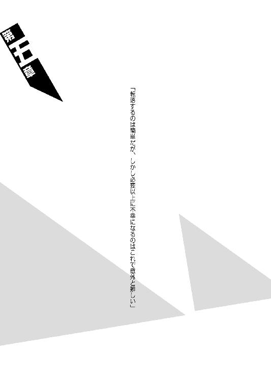
◆ ◆
「い、いい加減にしてください、どこまで行くんですか──一体あなたは一日の内に何回わたしを拉致すれば気が済むんです！」
力では敵うはずもないと抵抗しないまま、闇口崩子は零崎人識に引きずられてきたが──しかし、いつまでたっても、何度廊下の角を曲がっても人識が乱暴な大股での歩みを終える気配がないので、とうとう耐えに耐えかね、そう声を上げた。
すると人識はあっさりと足を止める。
勢いあまって崩子は人識の背中に頭をぶつけてしまった。
「......ってえな」
自分で引きずってきておきながら理不尽にもそんなことを言って、人識は崩子の首根っこから手を離した──解放された崩子は、すとんと廊下に尻餅をつく形になる。
こんなにあっさり止まってくれるならもっと早くに文句を言えばよかったと、崩子は若干後悔する。そして人識を振り向くと、彼は崩子を離してすぐに歩みを再開したらしく、その姿はもう玄関のほうへと向かっていた。
（............）
（まあ──）
（別に追う理由はないんだけれど──）
それでも、恐らくは彼が崩子のために怒ってくれたらしいことは──事実である。ここでただただ彼を見送ってしまうのも──何だか、すっきりしないものがあった。
（それに──わたしはガイドだ。ガイドとしてここにいる）
ガイドとして、来訪者の一人である人識の単独行動を放置しておくわけにはいかない──と、心の中で、一応は自分を納得させるに足る......そんな筋の通る理を考えて、崩子は立ち上がって、彼の後を追った。
サンダルを履いて外に出ると、人識の姿はすぐに見つかった。逡巡した時間が少し長かったので、ひょっとしたら見失ってしまったんじゃないかとも思ったが──それならばそれでいいとも思っていたが──玄関を出てすぐのところに、人識はいた。
と、言うか。
彼は──屋敷の庭に飾られていた岩を、がんがんと殴りつけていた。
手袋をしているとは言え、生身の手である。
つまりこの場合がんがんと音を立てているのは岩ではなく、人識のこぶしのほうなのだ。
「な──何をやってるんですかっ！」
パワータイプのプレイヤーならばともかく、人識がそうでないことくらいはもうわかっている。事実、既に手袋は破れて、露出した肌が擦り剝け、出血し始めていた。
「や、やめてください──」
崩子は無我夢中のまま飛び掛かって、後ろから人識を羽交い締めにした。もっとも今の崩子の力では、羽交い締めにしたところでその拘束力はたかが知れているのだが──人識を腕力で止められるようなものではないのだが、しかし、その行動は人識を我に返らせるには十分だったようで、
「......ん？」
と、彼は振り上げていたこぶしを止めた。
そしてそのまましばらくその姿勢のままで固まって──『ぱっ』と両手を開いて、それから肩越しに崩子を見た。
「何でお前、俺に抱きついてんだ？ お前、闇口の人間が、ご主人様以外にそんな大胆なことしていいのか？」
「............っ」
人識にしてみればそれはただ疑問を発しただけだったのかもしれないが、崩子はからかわれたと思ってしまい、軽い腹立ちと軽い羞恥を覚え、すぐに人識から身体を離す。後ろに飛んで、やや離れ過ぎなくらいに距離を取った。
非難するように、抗議を示すように人識を睨んでみたが、しかしそのときにはもう人識は崩子を見ておらず、自分のこぶし、即ち破れた手袋と擦り剝けた皮膚に視線を向けていて、
「うおっ！ なんだこりゃっ！」
と、驚いていた。
「痛いぞおい！ 誰だ、俺の大事な手にこんなことをしやがったのは──って、俺だっつーの」
「............」
一人乗り突っ込みのようなことを言っているが、どうやらこれで素らしい。
（何て言うか──どうにもつかみどころのない殺人鬼だ）
実際、崩子は『殺し名』、プロのプレイヤーとして動いた経験がほとんど皆無なので、零崎一賊の人間を見るのはこれが初めてだったが。
しかし、もう一人の（どういう理由なのか零崎姓を名乗っていない）無桐伊織という彼女を含め、どうもイメージが違うような気がする。
（表裏──と言っていた）
（一体ではない表裏──と）
「ああ、そっか。頭に血が昇っちまったんだな──またやっちまった。最近はこういうの、あんまりなかったんだけどな。俺もまだまだガキだねえ。かはは」
言いながら人識は手袋を脱いで、くしゃくしゃに丸めてズボンのポケットに押し込んだ。そして空気に晒すように、ぶらぶらと手を振る。
「............」
しばらく黙って観察していたが、どうやらそれで（たったそれだけの動作で）両こぶしのことについては、人識の中で決着がついたらしく、
「あーあ。その辺散歩してくっかなー」
と、血だらけの手を頭の後ろで組んで、門扉のほうへと歩き出した。
「ちょ、ちょっと──ああ、もう！」
闇口崩子は冷静沈着な美少女であり、そうそう慌てたり苛立ったりすることはないのだが──しかし今に限っては、どうしてか説明不可能なほどに、苛々していた。
崩子をこんなに苛々させるのは──
（萌太は例外として──）
（──戯言遣いのお兄ちゃん──くらいのものだ）
手を伸ばして、崩子は人識の上着をつかんだ。そしてそのまま、思い切り引っ張る。
「ん？ なんだよ、えっと......闇口」
「ここでは苗字で呼ばないでください」
まるで人類最強の請負人のようなことを言っている、と思いながら、崩子は更に人識の上着を引っ張った。
「わたしもあなたのことを、人識さんと呼びますから」
「ふうん──じゃ、崩子......」
言いかけて、下の名前を呼び捨てにすることには抵抗があったのか、
「崩子ちゃん」
と、人識は言った。
「で、いいな」
「......はい、人識さん」
「なんだよ、崩子ちゃん。俺になんか用か？ お小遣いならやんねーぞ」
「ついてきてください。傷口を洗いましょう」
「はあ？」
全く意味がわからないというような顔をする人識を、崩子は問答無用で引っ張る──人識も無理にそれを引き剝がそうとはせず、「と、と、っと」と、後ろ向きの姿勢のままバックステップで、水場まで引っ張られてきた。
庭の植物に水を遣るためのホースを蛇口から外し、そしてコックを全開にする。人識を促して、その水流の中に手を突っ込ませた。
「うわっ、冷てっ」
「井戸水から引いていますからね。天然です」
「へえ。詳しいじゃん」
「それは──」
詳しくて当然だ。
ここは勝手知ったる他人の家どころか、勝手知ったる自分の家だったのだから──否、今となっては、やはり他人の家も同然なのだけれど。
わたしは。
わたしと萌太は──家を捨てたのだから。
捨てられたのだから。
「──詳しいと言うほどでは、ありませんが」
「あっそ」
元々大して興味もなかったかのように、崩子の言い訳じみた言葉に人識はそう頷いて、そして「もうこのくらいでいいだろ」と、自分でコックを捻って水を止めた。ハンカチの持ち合わせはなかったようで、適当に上着で拭いている。
まあ、ハンカチを貸してあげるほどの義理もない──貸してあげようにも、さっきまで自分がずぶ濡れだった崩子である、持ち合わせがそもそもないけれど。
「サンキュ。ちっとは痛みが引いたぜ」
「......噓を言わないでください。水で洗った程度で痛みが引くわけがないでしょう──単に傷口が綺麗になっただけですよ」
破傷風対策です、と崩子。
「本当は消毒薬や包帯など用意できればいいんですけれど──その手の医療用品は奥座敷のほうになりますので」
取りに行こうと思えば取りに行けなくもないが──それは今の崩子の立場では、あまり気が進まない選択肢だった。
人識もその辺りは察しているのか、
「別にいいよ、こんなもん。唾つけときゃ治る」
と言った。
「おっと！ 今のは別に崩子ちゃんに舐めてもらおうという振りじゃねえんだぜ！」
「当たり前です......誰がそこまでしてあげますか」
茶化すように言った人識に、至極真面目な表情で答える崩子。
打ち解けたと思われても困る。
とは言え、軽い調子であっても礼を言われた以上、こちらもそれには応じざるを得ない。
「こちらこそ──『サンキュ』です、人識さん」
「あ？」
「客間から連れ出していただいて」
「あ？ ああ。そういやそんなこともしたっけ。よく憶えてねーや」
まるで十年も昔のことを語るかのように、そんなとぼけたことを言う人識。そしてこぶしの擦り剝けた部分を、本当に自分で、ぺろぺろと舐め始めた。
「かはは。まあ別に気にすんなや──俺がむかついたからやったことだしな。俺はああいうのが嫌いなんだよ──なんっつーかな」
「ああいうのって」
「家族が揉めてんの」
それは。
えらく他愛もない風に言われたが、しかしそれは、随分と人識にはそぐわない台詞であるように思われた──少なくとも崩子はそう思った。
「......そう言えば、零崎一賊は──そうですね、『家族』なのでしたね」
「ん？ あー、そりゃそうだ。もっとも俺が家族だと思っていたのは──その内でもひとりだけなんだがな」
「ひとり？ あの──ニット帽のかた、無桐伊織さんですか？」
「あいつは違うよ。あいつは、まあ──その家族の忘れ形見ってところだ。......とは言え、どーも最近は馴れ合ってきちゃって、それが悩みどころだな」
「............？」
つかみどころのないことばかり言う。
「まあまだまだガキだとは言え、しかし逆の視点で見れば、俺も随分丸くなったもんだ──昔だったらすぐさまあの親父を殺して解して並べて揃えて晒してやってたのにな。大体、こないだの人類最強の親父のときもそうだったんだ──」
「......仕方ないんですよ」
崩子は言った。
人識のその台詞を受けて。
「ここの人達にとって──わたしはもう、死んだ人間なのですから」
闇口憑依にとっても、六何我樹丸にとっても。
そして闇口衆の誰にとっても。
闇口崩子は──死人なのだ。
そもそも、崩子は自らこの島を出ているのだ──のこのこ舞い戻っても歓迎されるわけがない。座布団を出してもらえるとも、まして相手をしてもらえるとも──思っていなかったし、勿論、憑依や我樹丸から、暖かい言葉をかけてもらえるなんて、考えてもいなかった。
わかっていたことだ。
（ここに──大厄島に）
（もう、わたしの居場所なんて──ない）
「本当を言えば、島に戻ったというだけで、わたしは殺されても仕方ない立場だったんです──少なくともそんな風に覚悟していました。だけど、それさえもわたしの思い上がりでした。そんな風に構ってもらえるだなんて──酷い思い上がり。わたしはもう死人で──いてもいなくても同じ、いえ、いなくて当たり前だったのに」
「けっ。くだらねえ」
崩子は、当然のことを報告する風に──『だからわたしが存在を無視されていることはあなたが気にするようなことではないのだ』というつもりでそう言ったのだが──決してただ単純に人識の気遣いに遠慮してみせたわけではなく、今自分に同情していいのはこの世に一人だけなのだという気持ちもあってそう言ったのだが──しかし人識はそれを聞いて、むしろ逆に、崩子の胸倉をつかんできた。
「な。なんですか──人識さん」
「崩子ちゃん。ちょっくら、今から俺の評判がガタ落ちすることすんぜ」
「は、はい？」
宣言したかと思うと、人識は崩子をぐい──と力ずくで引っ張って、先程の蛇口の下へと、崩子の小さな頭を押し込んだ。その時点でもう何をされるかはわかってしまったが、しかしまさかそんなことをされるはずがない、そんな酷いことをする人間がこの世にいるわけがない──と思う暇こそあれ、果たして人識は、特に躊躇もなく蛇口を開いた。
冷たい井戸水が放出される。
考えてみれば季節も季節だ、それはまるで氷水のような水温だった。
「きゃ、きゃうっ！」
金槌で全身を殴打されても声をあげない自信のある崩子ではあったが、ここでは思わず悲鳴が出てしまった。
あっという間に頭がずぶ濡れになってしまう──十秒ほどたったところで、人識は蛇口を閉じ、そして崩子のワンピースから手を離した。ワンピースの生地がしこたま伸びてしまっていたが、そんなことは今はどうでもいい。
「あ、あなたは──一日の内に何回わたしを濡れ鼠にすれば気が済むんです......折角乾いたところだったのに！」
「一回目は人類最強のせいだろ」
悪びれる風もない人識──崩子はとりあえずの応急措置として髪をまとめて絞るようにする。手がかじかんでしまうくらい冷たかった。
「かはは。髪型が違っちゃって別のキャラみてーになってんぜ、崩子ちゃん」
「あ、あなたは──な、何のつもりで」
「頭冷やせよ、くだらねえ」
くだらねえ、と。
人識はその言葉を繰り返した。
「いいことを教えてやるぜ、崩子ちゃん」
「は？」
「ワンピ透けてる」
「はいっ!?」
水飛沫が跳んだらしい。
自分でやっておいて何を言うんだと胸を隠す崩子に、
「今のは冗談」
と人識。
「教えてやるいいことってのは、俺っつーキャラを攻略するときに絶対押さえとかなきゃいけねーポイントって奴だ。このフラグを立てとかねーと、俺ルートには入れねえ」
「......あなたを攻略しなければならない理由が、わたしには一つたりとも見当たらないのですが──」
「俺はな、適当に聞いた風なことを言って──簡単に諦めちまってる奴が大嫌いだ。わかったような振りをして生きている奴が大嫌いだ」
言って、人識は──崩子の濡れた髪に手を伸ばし、無理矢理にその顔を引き寄せた。強引に自分と、目を合わさせたのだ。
「いや、嫌いなんて積極的な言葉は使いたくねーな。単にむかつくってだけだ」
「むかつく──」
なんだそれは。
子供みたいなことを言う──と崩子は思ったが、考えてみれば、子供なのは十三歳である自分のほうだ。
人識はもう二十歳に近いだろう。
幼い顔の作りをしているからそうは見えないが、本来ならば少年と呼ぶことにさえ躊躇を覚えるような年齢なのである。
それなのに、むかつく、とか。
くだらねえ、とか。
他人の家の家庭の事情について大人気なく、随分と身も蓋もないことを言ってくれるではないか。
「思い出してみれば出夢の野郎もそうだった──どいつもこいつも簡っ単に諦めやがって。本当に諦めるってことが、どれくらい取り返しのつかないことなのか、まるでわかっちゃいねえ」
「そんなこと......」
と、言いかけてそこで崩子は思い至る。
ひょっとして、人識は今──
「......ひょっとして人識さん。わたしを慰めているつもりなんですか？」
「ああ？ なんで俺がそんなことしなくっちゃいけねーんだ、阿呆らしい。俺はいい加減に生きてるだけなんだよ」
不快そうにそう言って、人識は誤魔化すかのように後ろを向いてしまった。それはまるで図星を指されて照れているようにも見えたが──
（そんなわかりやすい男でも──ないか）
理解しようとしても無駄だろう。
「俺は諦めちゃいねーぜ」
後ろを向いたまま、人識は言った。
「諦める気が少しもねえ。崩子ちゃん、更にいいことを教えてやる。俺にはな──この零崎人識にはな、すっげえ、会いてえ奴がいんだよ。どこの誰かは知らないが、とにかくすっげえ会いてえ奴がな。そいつに会えば──何かがどうにかなるんだから」
「............？」
それまでに輪をかけてわけのわからないことを言い出した人識に、崩子は首を傾げた。それにより髪の毛から水滴が垂れ、ワンピースが更に濡れてしまったが、そんなことは気にならない。
「それを諦める気は──更々ない」
人識のそんな、宣戦布告のような言葉は。
やはり、崩子にとっては理解の外で。
だから、
「意外と──もう会っちゃってるんじゃないですか？」
と。
そんな言葉を返したことには、大した意味も、思い入れもなかった。
ただの相槌のようなものでしかなかった。
しかし。
「............」
ああ。
そういうことも──ありえるのか。
零崎人識は後ろを向いたままで──呟くように、そう言った。
それは、何だか。
悔悟したかのような響きだった。
「......人識さん。そんなことより──わたしやあなたのことより、一応、言っておいたほうがいいかもしれないことがあるのですが」
「あ？」
崩子の呼びかけに、人識は振り向いた。崩子としては『そんなことより』などとは別に思ってはいなかったのだが、しかし早いうちに話題を他に移しておいたほうがいいような気がしたのだ。
このままでは──それこそ取り返しのつかないことになるような気がしたのだった。
それに、確かに、今から言おうとしていることも──それはそれで、少なくとも短期的な展開としては、伝えておくべき大事な事項ではあった。
否。
それはそれでどころか──本来ならば真っ先に伝えておかなければならなかったことだ。それも零崎人識相手にではなく、哀川潤と無桐伊織にこそ──伝えておくべきことだったのである。
「六何我樹丸のことなのですが」
ただ。
言えなかった──言い辛かった。
それは、自分や萌太の出生にもかかわることだったから──
「あの親父がどうしたよ」
「どう思いましたか？」
とりあえずは訊いてみる──殺人鬼が生涯無敗を、どのように捉えたかを。それによっては、話す順序が変わってくる。
「実際に見てみて──どう感じました」
「どーもこーも感じねえよ。感じるわけねーだろ──」
その言葉を受け、やはり前提となる説明が必要かと崩子は思ったが、しかしそうではなく、人識の言葉には続きがあった。
「──ありゃあ、生涯無敗なわけだ」
「............」
「実際、人類最強から話を聞いたときにゃあ疑わしいとは思っちゃいたんだけどな──そこまでのクラスのプレイヤーが、まるで知られていないってことはないはずだって。ま、伊織ちゃんあたりは初めて見るタイプだろうし、俺も滅多に見ねえタイプではあるから、確かなことは言えないんだが」
「......ご存知でしたか」
「昔、その象徴みてーな奴とバトったことがあるぜ──あんまいい思い出じゃねーけど。直木飛縁魔つって──強さの割には無名な奴だった」
人識はそこで言葉を切り、
「ありゃ相当ヤバい。最初からあんな奴がいるとわかってたなら、俺はこんな島には来なかったぜ」
とまとめた。
そうか。
あの──静かな強さが理解できているなら、話は早い。
地味で、地道な強さが伝わっているのなら。
肝だけ言えばそれで済む。
「真面目な話、強く見えないってのはかなりの強みだよな──強みが不可視だってのは、かなりの強みだ。勿論そのことによる弱みもあるんだろうけど、俺みたいな属性からすりゃ、やっぱメリットのほうが多く目につくな」
「......男性三十一歳、女性三十四歳」
崩子は言った。
できる限り無感情に。
「何の数字か、わかりますか？」
「んん？ 三十一、三十四？ なんだよそれ、何かのなぞなぞか？」
「違います、もっと現実的な数字です──『殺し名』七名内に対象を限定して算出した、おおよその平均寿命ですよ。聞いたこと、ありませんでした？」
「............」
「通常の日本人の平均寿命の半分以下──下手をすれば三分の一に近い。勿論、どこでどう野たれ死ぬかわからない家業ですから生死不明の行方不明者も多く、およそ精密さからは程遠い数字なのでしょうけれど、しかしどれほどデータを集めたところで、下方修正されることはあろうとも、上方修正されることはないでしょうね」
「まあ──そうだろうな」
人識は思うところありそうにではあるが、頷いてそう言った。
「零崎一賊だって全滅しちまったわけだし。兄貴と大将の歳が、丁度その平均寿命くらいか？」
「『殺し名』は戦い続けなければならない宿命ですからね。ちなみに『呪い名』六名の平均寿命は、それなりに高めです──彼らは非戦闘組織ですから、当然と言えば当然ですけれど」
「ふん、そうだろうな──そう言えばこないだも、『呪い名』の婆さんを見かけたところだぜ。ありゃ七十近かっただろうな」
「まあ、正確な計測が難しいのは『呪い名』もまた同じですけれどね──いずれにせよ、訓練中の死亡率が高いのは、どちらも変わらないでしょうし」
「ふん。それで？」
「六何我樹丸は──今年で七十八歳です」
端的に、崩子は言った。
その数字に、
「七十八？」
と、さすがに人識は驚きを隠さなかった。
「マジかよ......全然、見えないな。五十代くらいだと思ってたぜ」
「プレイヤーとして現役なのは確かですよ。三年前、島にふらりとやってきたときと姿格好もほとんど変わっていないようですし──生涯無敗の経歴はともかくとして、だから、それがもう特筆に価するのです。彼が、今でこそこの大厄島で闇口衆の一員として過ごしているとは言え、そもそもは『殺し名』の本家でも分家でさえもなかったはずの彼が──この世界において、生き続けていること」
それがどれほど──異常なことなのか。まるで、それでは──不死身と同義である。
「勝ち続けていることよりも──生き続けていることのほうが、異常なのです」
人識は絶句したように押し黙り、それから、
「確かに、そりゃ......並外れてはいるな」
と、そう言った。
「七十八か──俺、自分がそんな歳まで生きているとこ、全然想像できねーや。俺多分すぐ死ぬもん。きっと明日とかに」
「では、人識さん──彼と哀川さんが戦うようなことがあれば、哀川さんが負ける可能性が大いにあることは、わかってくれているということですね？」
「まあ、そうだな──最強の強さに疑問はねーが、しかしあの女はちっとばかしムラがあり過ぎるからな。負けることもあんだろ──大体あの請負人、ついこないだ、最終だか最悪だか言う奴に負けたとこなんだろ？ そんときの怪我がまだ尾を引いていて、二割程度の力しか発揮できねーとか言ってるし」
「............」
実は島の滝壺に着水した際のダメージでパラメーターはもう既に一割を切っている──ということはとりあえずここでは伏せておこうと、崩子は沈黙を保つ。
まあ、少なくとも──人識が現状をさほど楽観しているわけではないらしいことは、崩子にとってはいい情報だ。
「で、それがどうしたよ」
「負けた場合のリスクですよ。哀川さんが勝てない相手に、無桐伊織さんが勝てるとも思えませんし──あの人は、その」
「ああ。あいつは今んところ、まだ本能とか才能とか、そういうのだけで戦ってるレベルだからな。義手さえ十分に使いこなせてねえ......って、別に伊織ちゃんは我樹丸とバトったりはしねーだろ。つーか俺がバトらせねーよ。いくらなんでも死色の真紅も、そこまでの無茶は言わねえだろ」
「どうでしょうね」
確かに哀川さんは彼女を無理に戦わそうとはしないでしょうけれど──と、崩子は言う。
「好むと好まざるとにかかわらず、あのかたも戦闘には参加せざるを得なくなるとは思います──自分の身を守るために」
「あん？ えらく持って回った言い方だな。何が言いたいんだよ」
「今頃、彼女達は要求されている頃でしょう──六何我樹丸から、要求されていることでしょう」
ちらり、と。
屋敷のほうを窺って、崩子は言った。
「自分の子を産め──と」
「............」
「六何我樹丸の趣味は、子作りなのです」
人識は。
何とも言えない、味のある表情を見せた。
絶句とも、驚きとも違う、そんな表情。
まあ妥当な反応だ──ならば変な勘繰りをされる前にと、崩子はそのまま我樹丸の『趣味』についての説明を続けた。
「そもそもあの男は、その性癖が原因で、玖渚機関の下部組織──陸枷から追放された経歴を持つくらいなのですよ」
「......女癖の悪さが祟ってってわけか？」
「いえ、悪いのは女癖ではありません。強いて言うなら繁殖癖ですか」
「は、繁殖って」
ありていに言うじゃねえかよ、と人識。
まあ確かに飾り気のない言葉ではあったが、そこで言葉を装飾しても仕方がない。大体崩子には、我樹丸のそういう嗜好を庇う気はまるでないのだ。
「彼の夢は、『殺し名』七名、『呪い名』六名、合わせて十三名全てと子を儲けることなのですよ。勿論、出自である玖渚機関や四神一鏡も対象外ではないでしょうが──あの辺りは接触にあたってガードが厳しいですからね」
「......だな」
「一体どうやって戯言遣いのお兄ちゃんは──」
おっと。
それは今は関係ない話だ。
「とにかく──六何我樹丸はそういう人間です。哀川潤なんてレアな母体を、そうそう見逃しはしないでしょう。それに──滅んだとさえ言われていた零崎一賊の、女殺人鬼も」
「......そういやあいつ、そんなこと言ってたな。いい知らせがどーとか......そういうことかよ。うううわ」
気持ち悪いっつーの、と人識はうんざりしたように呻いた。
それもまた、妥当な反応だった。
「けどまあ──そうでもねえと、アレか。石凪と闇口の兄妹なんて、有り得るわけがねーか。つーことはなんだ？ 崩子ちゃん、他の『殺し名』とか『呪い名』とかにも兄妹がいたりするのか？」
「血が繫がっている存在というだけで言うなら、それはいてもおかしくないとは思いますよ──わたしがよく知らないというだけで。ただ、いわゆる成功例はわたしと萌太だけでした──眼鏡に適う遺伝子の持ち主とは、なかなか出会えないようでして、ね。わたしがこの島を離れた三年間のことは把握していませんが」
しかし、だからこそ──執心するだろう。
飛んで火にいる夏の虫の如く、自分の前にのこのこと現れた人類最強と零崎一賊の女に、あの男は執着するだろう。
（......そもそも）
（今となってはあの男は──わたしのことも萌太のことも、成功例だなんて思ってないだろうけれど──）
自分から逃げた──失敗作。
そう思っているはずだ。
「......そりゃ、確かに伊織ちゃんも戦わざるを得ないだろうな。しかも必死になって。考えてみりゃあいつまだ十七歳とかだぜ。ついこないだまで女子高生やってたんだ──女子高生で妊娠とか出産とか、そりゃまるでケータイ小説じゃねえか」
「最近は色々とバリエーションも増えてるみたいですよ」
「あ？」
「ケータイ小説の話です」
もっとも、崩子は携帯電話を持っていないけれど。
いずれ関係のない話ではある。
「くっそ、面倒臭い──だったら俺も戦わざるを得ないってことじゃねえか。哀川潤とあの親父にタイマン張らせるまでが俺の仕事だと思ってたが、そんな単純な話にはならねえってことか──ちっ。それがわかってりゃ、こんな風に手を傷めたりなんかしなかったのに」
言って人識は擦り剝けた自分のこぶしを見る。
あそこまで頭に血が昇っていたのだ、多分わかっていても同じことをしたとは思うが──
（『身内』が巻き込まれるとわかったら──すぐさま参戦を決意する、か）
（零崎一賊らしいと言えば──らしいけれど）
「あー。こうなると本当にナイフの一本でも欲しいところだよなー。曲絃糸はこの手じゃ厳しいぞ。あれって精密動作なんだから──また伊織ちゃんから『自殺志願』貸してもらうかねえ。貸してくんねーだろうなあ。なあ崩子ちゃん、あのおっさんは何か武器とか使うのか？」
「いえ──六何我樹丸は、素手でのバトルを信条としています」
「あっそ。そういうところも直木飛縁魔と同じか。だったら条件は五分ってことになるな......いや、別に生涯無敗とだけ戦えばいいって話じゃないのか。あの死神野郎が出張ってくる可能性もあるわけだよな──」
「？ 死神野郎？」
崩子が首を傾げると、人識は「ああ、言ってなかったっけ」と口を開いた。
「俺と伊織ちゃんが着地した辺りにな、まるで零崎みてーな奴がいたんだよ──殺意を持て余しているってのか、それしかねーってのか。デスサイスを持ってたから死神であることは間違いねーんだが、しかし石凪ってのはみんなああなのか？ お前の兄貴はどうだったよ」
「......いえ、萌太は──別に」
と、言うより。
それは──そもそもおかしな話だ。
この大厄島に──闇口衆の拠点のひとつに。
どうして──死神がいる？
「あー、ひょっとしてあの死神野郎が持ってたのが、哀川潤が回収しに来たってデスサイスなのかもしれねーな。結構いいモンだったみたいだし──いや、俺、こう見えても刃物にはちょっとうるせーんだぜ？」
「ひ、人識さんの鑑定眼のことはどうでもいいんですけれど──何ですか？ 死神が──その人が、石凪を名乗ったんですか？ 闇口の間違いじゃなくって？」
「石凪と闇口とを聞き違えるかよ。全然音が被ってないじゃねえか。石凪と咎凪、闇口と罪口ならともかくよ」
確か──と、そして人識は記憶を探るように、腕組みをする。
「石凪──と、と──とい──」
「──石凪砥石」
門扉のほうから──そんな声がした。
崩子と人識がそちらを向くと、
「だよ」
と。
付け加えるようにそう言って──両手を血の色で真っ赤に染めた少年が、こちらに向かって歩いてきていた。
ぎょっとした──のは、血まみれの手に驚いたからではない。先程人識が言った通りに彼が右肩に処刑鎌を置いていて、そしてその処刑鎌が──それも人識の言った通りに──崩子にとっても思い出深い、石凪萌太が使っていたそれであるらしいことに驚いたからでも──ない。
ぎょっとしたのは。
隠そうともしない、その殺意。
止め処なく溢れ出る──その殺意にこそ、驚いた。
（──なんだ、なんなんだこの人は？）
（この──死神は？）
まるで──これでは人の形をした殺人衝動だ。むしろ自分の目のほうが信じられないくらいである──これが人間に見えてしまうなんて。
「......心配死なくとも、これは鹿の血だよ。間が悪くて、ここまで洗う暇がなかったんだ」
砥石は──崩子の心境からするとやや的外れな、ともするとはぐらかそうとしているかのような台詞を棒読みで言って、
「ちょっと横にどいてくれないかな。できればそこで手を洗いたいんだ」
と、水道を指差した。
「............」「............」
崩子と人識は無言のまま──人識はどうか知らないが、少なくとも崩子は、この状況、何を言っていいかわからない──左右に分かれて、道を開けた。砥石は特にためらう様子もなく、崩子と人識の間を通る。
その間も。
彼の身体から発される殺意は、まるで消えることがなかった──揺らぐことさえなかった。彼の殺意は──空気のようなそれではなく、ほとんど固形物質のようだった。気体ではなく固体である。それで崩子は、砥石が殺意を向けている対象が、人識や崩子ではなく、酷く漠然とした──この世界そのものなのだと理解できた。
デスサイス。
処刑鎌を脇に置いて、蛇口を捻る砥石──そして彼は黙々と手を洗い始めた。それで彼の腕から血の色は落ちていくが、しかし、まるで清められている風がなく見えるのは、果たしてこちらの一方的な気分の問題なのだろうか。
血のついた手で捻って汚れてしまったコックもまた、手を器代わりに水をすくって丁寧に、隙間までぬぐうように洗い──そして砥石は栓を閉め、それから崩子が外しっぱなしにしていたホースを蛇口に繫いだ。
その所作はいちいち几帳面で、砥石の人間性を推し量ることができた──もっともそれは、彼が人間ならばの話だ。
非人間性は。
推し量るまでもなく──伝わってくる。
「死か死、きみ達も随分酔狂だよね──聞いたよ。この処刑鎌を取り戻死に来たんだって？ そのために我樹丸様と大厄ゲームをやろうなんて......命知らずにも程がある」
「大厄ゲーム......？」
その言葉に、崩子は息を吞む。あのあと、客間ではそういう話になったのか？ 勿論、あの六何我樹丸が哀川潤に対して、一筋縄での真剣勝負を行うとは思っていなかったが──よりによって大厄ゲーム？
（でも、そんな一方的に押し付けられた条件を、あの哀川さんが吞むわけ──）
（吞むわけ──）
（──ある）
むしろ吞む場面しかイメージできない。
詳しい話を最後まで聞いていない可能性さえあった。
（ただの鬼ごっこだとか、子供の遊びだとか、そんな風にしか思っていないかもしれない──）
人識に力ずくで拉致されたとは言え、自分が客間にとどまり続けていれば、そんなことはさせなかったのに──今更、そんなことを思っても仕方がないが。
「大厄ゲームで死色の真紅が勝てばこのデスサイスはきみ達のもの──という運びになったら死いよ。詳死くは知らないけどね」
「負けた──場合は」
「だから詳死くは知らないって。知りたかったら本人に訊けばいいだろう？」
そっけのない態度だった。如何にもそれは、崩子のことなんてちっとも相手にしていないという風だったが──
（......いや）
（違う──この人は）
「お前は崩子ちゃんのこと、無視しねーのな」
人識が言った。
崩子が気付いたことを、ほとんどそのままの形で言った。
そう。
この島において、まるで透明人間のように、そして死人さながらに扱われている崩子を──いなかったことにされている崩子を、石凪砥石は──捉えている。
無視せず。
目視している。
「......別に。僕は闇口衆じゃないからね」
砥石は言って、しゃがんだ姿勢から立ち上がる。立ち上がる際にデスサイスを拾い上げることも忘れない。
「死神と死て、便宜的に雇われているだけに過ぎない。家庭内のごたごたにまで踏み入ったりは死ないよ」
「......雇われているって」
そんな馬鹿な、と思う。
石凪は『殺し名』の中でも取っている立ち位置が酷く特殊だ──雇おうと思って雇えるような属性ではない。レア度で言うならわずか三十名足らずの集団だった（そして今は絶滅した）零崎一賊のほうがクラスは上だが、しかし石凪調査室は、『殺し名』序列最下位にして、同時に最上位のようなものなのだから──最下位にして特権階級なのだから。
雇用するなど不可能だ。
何か、よっぽどの縁でもない限り。
「──まさか」
「ご明察だよ。きみのお兄さん──石凪萌太くんからの繫がりでね、僕は死神界から引っ張り出されたというわけさ」
砥石は言った。
崩子を──冷たく見据えながら。
同じ石凪でも、常に温和な雰囲気を出していた萌太とは、随分と雰囲気が違う。萌太を知る者は誰もがそう思うだろうが、しかし、妹の崩子だからこそ──より強く、そう感じた。
砥石と萌太との差異、違和感は。
いっそ気持ち悪いくらいだった。
「──いい迷惑だよ、全く。きみのお兄さんが──約束を破ったせいで」
「や、約束って」
何を──ぬけぬけと。
萌太を非難するようなことを言っているのだ。
「先に破ったのは──あちらでしょう。萌太との、約束を──六何我樹丸がこの島にやってきた途端、手のひらを返して──」
「そうなのかい？ まあどちらでも同じことだよ。だから──無視されないからと言って、僕がきみのことを好意的に捉えているだなんて、思わないで欲死いな。僕は正直言って──きみ達兄妹のことを、恨んでいる」
棒読みのような台詞であり、とても言うような感情がこもっているとは思えない。しかし、デスサイスを抱えた彼の視線は──はっきりと崩子のほうを向いていて、そこから逸らされる気配もない。
恨んでいる、というその言葉は。
心底からのものなのだろう。
（萌太の──）
（萌太のデスサイスを持って、わたしにそんな目を向けるなんて──）
「なんだよなんだよ、シカトが無しかと思ったら、今度は言葉責めかよ。この島の連中はよっぽど、ちっちゃな女の子を苛めるのが好きと見える。全員ツンデレ認定するぞ、馬鹿野郎」
崩子が砥石に答える前に、人識がずいっと──崩子と砥石との間に、崩子の前に立ちはだかるかのように、その身体を割り込ませてきた。
崩子に向けられていた砥石の視線を。
人識が受け止めることになる。
「てめえで無理矢理拉致してきといて何だけどよ──一応この子は俺の大事な親友の大事な抱き枕らしいんでな。そうそう好き勝手に傷つけられちゃ困るんだよ」
「......ふうん。意外だね。零崎一賊の殺人鬼が、身内以外を守ろうとするとは思わなかった」
砥石は若干、顎を上げて──そして人識のことを、今度は蔑むような目をした。
「だけど零崎──零崎、人識くん。口の利き方には気をつけたほうがいいんじゃないかな。自分でも言っていたじゃないか。僕を相手には、きみは時間稼ぎくらい死かできないんだろう？」
「ああ？ ありゃあれだよ、お前が死ぬまでの時間稼ぎって意味だよ」
「意味がわからないな」
「わかるように言ってねえっつーの」
「強気じゃないか──だけれど、失笑以外の何も返せないな」
言いながら笑いもせず。
砥石は肩を竦める。
「だって。零崎一賊の怖さは、家族のためなら命も惜死まない狂気にこそあるんだろう？」
一度家族が傷つけられたとあれば。
どんな相手にも、どんな戦いにも、喜んで身を投じる、計算のない埒外の家族愛こそが──零崎一賊の本筋であり、中核であり──信条。
だからこそ狂気の集団として。
零崎一賊は恐れられ、忌み嫌われる。
......否。
恐れられていた──忌み嫌われていた。
「今やもう、零崎一賊は全滅死た。きみと、あのニット帽の子を残すばかりじゃないか──たった二人じゃ恐怖の対象にはならないよ。個人と死ての零崎一賊の実力は知れたものだ。零崎一賊は──もう怖くない」
「............」
「きみ達が僕に殺されても、復讐死てくれる家族は──もういないんだよ」
そうだ。
全滅、絶滅、と──取り止めのない言葉で表現されてはいるが、それは当事者、零崎人識や無桐伊織にしてみれば──家族が死んだということに他ならないのだ。
崩子は思う。
人識の背中を見て、思う。
（この人は、今となっては──）
（わたしとそんなに変わらない──）
「零崎一賊は──もう怖くない」
「......繰り返すなよ、うぜえから」
軽く、肩を竦めるようにして──人識は、砥石に答えた。
「別に怖がってもらおーとか、俺はちっとも思ってねーよ。俺は俺だ。俺なんだよ──個人としてのこの俺が、崩子ちゃんを苛めんなって目の前にいるお前に言ってんだよ」
「そうかい。まあ言うだけなら誰にでもできるからね──それに、殺されるだけなら、誰にでもできる」
「......大厄ゲームっつったな」
そして人識は。
それこそ──何の説明も受けないままに、それが一体どういうことなのかも知らないままに──ただただ、その場の雰囲気、その場のテンションに任せるが如く、石凪砥石に向けて宣言した。
「俺もそれに参加しとくわ。だからお前も出て来いよ──戦ってやる」
「殺死てやると言わないのかい？」
殺人鬼の癖に──と砥石に言われて。
そりゃそうだな、と人識は訂正する。
「石凪砥石──死神。殺して解して並べて揃えて晒してやんよ」
◆ ◆
ところで誰も気に留めてはいないだろうが、哀川潤、闇口崩子、零崎人識、無桐伊織の四人を大厄島まで運搬してきた中型輸送ヘリコプターの行方についても、念のため触れておこう。
そもそも哀川潤に友人は多いが、『殺し名』序列二位、闇口衆の拠点である孤島へのスニーキングを手助けしてくれるような気概のある者となるとそうはいない。たとえ六何我樹丸のことがなかったとしても、それは同じことだ。
哀川潤にしてみれば、自分の任務に他者を介在させる行為は友達を遊びに誘うことと同義であり、基本的には好意から出ていることが多いのでそこで断られるのも心外なのだろうが、軽々にそんな遊びに誘われるのもたまらない。
現実問題。
そんな遊びに誘われて、散々ツンデレなことを言いながら乗ってくるのは──世界広しといえどもただ一人（いや、ツンデレなことを言いながらでなければあと何人か候補がいないでもないが）。即ち──大泥棒、石丸小唄である。
ただしそれを知るのは哀川潤のみであり、人識と伊織、崩子にはその事実は伏せられている。崩子はともかくとして、人識と伊織は一時期渡米していた際、そして帰国する際に小唄とただならぬ因縁が生じており、ゆえに哀川潤に対して小唄から出された、仕事を引き受ける上での唯一の条件が、彼らに対する匿名希望だったのである。
ちなみにその仕事は哀川潤を含む四名を大厄島に降下（内二名は落下だったが）させるまでであり、四名の回収業務までは任務に入っていない。つまりは既に彼女の仕事は終わっているのだが──しかしそれはあくまで、哀川潤から与えられた任務に限っての話である。
石丸小唄は、一部では哀川潤に匹敵すると言われるほどに高い値のパラメーターを持つ割に、哀川潤よりもよほど身軽であり、またほとんどの場合単独行動を心がけているために周囲に対するしがらみも少ないので、そういう意味では引く手あまたの存在なのだ。
仕事が一つ終わったからといって、それで休めるほどに暇人ではない。
ちなみに──次の仕事の依頼人は、哀川潤が闇口崩子を拉致し、強引に退院していったらしいことを知った、某戯言遣いである。
そんなわけで、大厄島を離れた中型輸送ヘリコプターはそのまま旋回して、一路京都へと向かったのだった。
目的地は、京都の奥地──山間の町にある研究室。
零崎人識が澪標姉妹と日常的に戦闘を繰り返していた、あの診療所跡の研究室である──既にその辺りのあれこれに関する物語は終結してしまっているため、この時点においては、その建物の中には誰もいない。
人類最悪の遊び人がよく言ったように言うならば、そこは既に終わった場所──なのだから。
なのだから──しかし、にもかかわらず。
その研究室の二階、元々は病室として使われていたその部屋に──二人の人間が詰めていた。
一人はベッドの上に胡坐をかき、身体中に巻かれていた包帯をしゅるしゅると自ら解いている最中で、一人はベッドの脇に立ち、今まさに聴診器を外したところだった。
「......ふうん。まあ、ええんちゃう？」
ベッド脇に立つ人物──サイズの大きな丸眼鏡をかけた女は、カルテ代わりなのだろう、手にしていたＰＤＡにいくつかの数値を記録していく。
「哀川潤のことは知らへんけど──自分の場合は、もうほとんど全快しとるし。こんなん、桁外れの治癒力回復力っちゅうしかあらへんな──ヒューストンにおったときは、ここまでわやくちゃな数字やなかったはずやねんけど」
女は「かかか」と陽気そうに笑って、
「好きにせえや──元より親愛なる我が生徒、戯言遣いの頼みなんや、自分もウチも無下にはでけへんやろ。ウチもそろそろＥＲ３に戻らんとあかん頃合やし、大厄島やかなんやか知らへんけど、どこなと行って誰なと助けて来たらええやないのん」
と言う。
「おう。ありがとうだぞ、心視」
女の言葉を受けて、ベッドの上で座っていたもう一人は──包帯を解き終えたその子供はいきなり跳ね上がって見事に空中でムーンサルトついでに三回転、それから女の前に着地した。
まるで自分の健在をアピールするかのような動作だったが、しかし女のほうはさして驚いた様子もなく、
「なんや、自分。ちゃんとお礼とか言えるようになったんやん」
とだけ、からかうように笑う。
「げらげらげらげら。まあな」
オレンジ色の髪を肩口辺りで一直線に切り揃えた、如何にも意志の強そうな太い眉をしたその子供は──まるで照れた風もなく笑い返す。
どこまでも不敵に──笑い返す。
「だけど勘違いすんなよ、心視。俺様は別に崩子ちゃんを助けに行こうってわけじゃないんだぞ」
「へえ？ ほな、何しに行くん？」
「決まってんだろ」
つい先日、人類最強の請負人・哀川潤と死闘を演じたばかりの人類最終。
橙なる種。
「大好きな友達のところへ、喧嘩しに行くんだ」
想影真心は、そう言った。
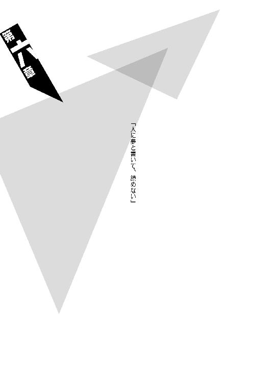
◆ ◆
大厄島のほぼ中心部に豪壮な存在感をもって生えている一本の木は、住まう者からは六十世紀杉と呼ばれ神聖視されている──およそ信仰心などとは縁のない闇口衆の人間でさえそんな風にしてしまうほどの、長き歴史を有する大杉だ。一説にはその通称通りに六千年以上前から成長を続けているとまで言われているほどで、島の大半に自然が残り、日本に自生する植物の九割近くが生い茂る大厄島において、恐らくは一番巨大な植物である。
六何我樹丸は『鬼ごっこ』という比喩で表現したが、そしてそれは概ね間違ってはいないのだが、そこにもう少し情報を付加しておくとするならば、大厄ゲームは山の麓から、その六十世紀杉までの『かけっこ』でもある。今時の、そして本格的な言い方をするならばトレッキングレース、あるいは山岳サバイバル・ゲーム──それも手段を白兵戦に限ったサバイバル・ゲームとも言えよう。もっとも、そんなハイカラな横文字を、我樹丸は決して使わないだろうけれど。
基本的なルールはこうだ。
特に人数の制限はなく、何人でもできる遊戯──究極的には一対一でも可能だが、訓練の場合には五対五で行われることが多い。まずは『逃げるチーム』と『追うチーム』を設定し（それぞれ『兎組』と『狐組』と名付けられる）、ゲーム開始の合図と共に、兎組が麓から六十世紀杉に向かって駆け出す。そして時間差をおいて（その時間設定はまちまちだ。十分という設定もあれば十秒という設定もある。これまで行われた大厄ゲームでの最短は一秒ということだ）狐組がそれを追う──この辺りの仕組みが『鬼ごっこ』となる。狐組は兎組と違って六十世紀杉に向かうのではなく、ただ狐、肉食の『捕食者』として兎組を捕まえるのが役割だ。
無論、本土で行われるような鬼ごっことは違い、身体をタッチすればそれでいいということにはならない──そんな穏やかなゲームではない。文字通りの『捕食者』、その持てる暴力を行使することで『兎』を狩って、それで初めて『捕食』したと認定される。
白兵戦──だ。
逆に言えば、暴力をもって制されない限りにおいて、『兎』──兎組の者は捕まったことにはならないということでもある。
要するに兎組には抵抗が許されている。
兎は狐を撃退していいのだ。
細かい説明をすれば、そういうシステムであるがゆえに、基本的にスキルにおいて劣る者が兎組、勝る者が狐組にとチーム分けされることが多い。そもそも実力的に兎組が勝るようなことがあれば、ゲームがゲームとして成立しなくなるからだ。無論、双方が互角であるようならばそれが一番いいわけで、できる限り均等なチーム分けが、体面上の理想ではある。
それが『鬼ごっこ』だとして、ではどこが『かけっこ』なのかと言えば、それは兎組の勝利条件である。兎組は狐組に捕まることなく六十世紀杉まで辿り着き、その根元に突き立てられたフラッグを手にすれば、それで勝ちとなるのだ（狐組の人間が先に六十世紀杉に辿り着いたところで、それは狐組の勝利を意味しない──狐組の人間がフラッグを手にし、たとえば隠したりすれば、その時点で狐組の反則負けとなる。とは言え、勿論ゴール地点での待ち伏せはそれなりに有効な戦略となろう）。
ただし、一対一で行われる場合はまだしも、複数対複数で行われるスタンダードな場合には、そこにはゲーム性を増やすための要素が付加される。それは兎組のチームリーダーの決定だ。
兎組の構成員は揃いのバンダナ（別にバンダナでなくともよいが、一般的にバンダナであることが多い）を所持してゲームに参加する。狐組の者にそのバンダナを奪われることが、即ち『狩られた』ということなのだが──狐組の者に敵わないと見てそのバンダナを自ら渡すことが、兎組の者にとっての降参を意味する──しかし、チームリーダー以外の者がバンダナを奪われることは、そのまま兎組の敗北を意味はしない。
チームリーダーのバンダナの裏地にだけ特徴的な印章（闇口衆の印章だ）が刺繡されていて、そしてそのバンダナが奪われたときにこそ、初めて兎組の敗北が決定するのだ──つまり残る兎組の構成員は、役割としては囮を務めることになるわけである。
何故なら、六十世紀杉へのゴールが認められているのはチームリーダーだけだからだ──その他の兎組のメンバーがゴールし、そこに立てられたフラッグ（ちなみにこのフラッグにも闇口衆の印章が刺繡されている）を手にしたところで、そのゴールは無効だと判断されるのだ。逆に言えば、兎組としては、他の全員が『捕食』されようとも、チームリーダー一人だけでも生き残っていれば、まだ敗北条件は満たされないということである。
ゆえの囮だ。
つまりは、狐組の立場からすれば、他の者には目もくれず、ただひたすらに兎組のチームリーダーを狙えばいい。兎組の立場からすれば、狐組の者に誰がチームリーダーなのか見抜かれないように細心の注意を払わなくてはならない──そういうことである。
ゲームと言うなら。
それは軍人将棋に似ている。
ちなみにバンダナを奪われた兎組の構成員は、もうゲームに参加することはできない（ゆえにチームリーダーがバンダナを奪われた場合は、事実上その瞬間にゲームは終了する）が、狐組の構成員にはリタイアはない。たとえ何度兎組の者に撃退されようとも、動ける限りは、生きている限りはゲームに参加し続けることができる。
だから山岳サバイバル・ゲームに模して言うならば、大厄ゲームは兎組にとってはフラッグアタック戦であり、狐組にとっては変則的な殲滅戦ということになるだろう。
制限時間は設けられることもあれば設けられないこともある──ただ、広大で未踏の地も多い山岳地帯、その全土がゲームエリアとなるのだ。その中には石凪砥石が言うところの『素人には登ることも降りることも難死い』ような危険地帯もある。必然、制限時間を設けない限り、逃げる側、そして隠れる側である兎組のほうが優位となってしまうので（極端なことを言えば、最初から六十世紀杉を目指さず、狐組が疲弊するまで暗所に身を潜め続けるという手さえある。それも一応は駆け引きのうちにはなるが）、やはり十時間単位の制限時間が設定されることが多い。
『殺し名』のプレイヤークラスの人間であれば、麓から六十世紀杉まで、最短ルートで（ルートと言っても、無論、道らしい道なんてものは存在しないけれど）四時間もあれば到着するが、しかし基本的に逃げながら、隠れながらの登山道において、最短ルートを行くのは愚行以外の何物でもない。迂回に迂回を重ね、遠回りに遠回りを重ねて──そして兎組は、制限時間内に六十世紀杉に到着しなければならないのだ。
状況によっては更に細かいルールが足されることもあるが、ここまでが大厄ゲーム、おおよその要約である。
「ふうん──大体わかったわ。質問はねーでもねーけど、後はやってみりゃわかんだろ」
無桐伊織の判断するところ『ゲームをするときに説明書を読まないタイプ』である哀川潤は、そんな大厄ゲームのルールを、客間において六何我樹丸から（明らかに話半分な風に）聞き終えて、そう頷いた。
「島一個使ってのサバゲーなんざ豪華でいいじゃねえか。あたしも戦争そのものの経験はあっても、どっこいサバゲーの経験って奴はねーからな。でもまあ、こち亀で両さんがやってんの読んで以来、一回やってみてーと思ってたし」
そして、
「こっちからの条件は、だから一つかな」
と言う。
一つしかないのかよ、と隣で話を聞いていた伊織は心中で突っ込んだが、当然そんな聞こえもしない突っ込みを意に介する風もなく、
「殺しはなしだぜ」
と言った。
我樹丸を試すような口調だった。
「相手チームの人間を一人でも殺しちまったら、その時点で負け確定──ってことでどうだ？」
「......ほう」
果たして──我樹丸は、笑んだ。
そちらもまた、哀川潤の器を測ろうとするかのような物言いである。
「意外とぬるいことを言うのじゃな、死色の真紅。そう言えば、貴様を出迎えた三十人も、乱暴に滝壺に落とされはしたものの、命には別状ないということじゃった──実にぬるい。ぬるいぞ、人類最強。死ぬのが怖いか。殺すのが怖いか」
「べっつにー？」
それに対し、あからさまにふざけた態度を、哀川潤は返す。茶化し癖お道化癖を持つ伊織としてはとても親近感を覚える態度ではあったが、しかし他人がやる分にははらはらするものだ。
「ただまあ、それがあたしの信条でな。殺しと善人の金には手を出さないのさ」
それは正確には哀川潤をこの島にまで送り届けてきた大泥棒の信条であり、更に元ネタを探るならフランスの怪盗紳士の三代目（クォーター）の信条なのだが、堂々と哀川潤は言い放った。
「ふん......不殺か」
我樹丸は。
顎に手をあて──思案するように言った。
「そう言えば......昔、おったかの。そんなくだらん主義を標榜する、どこぞの死神が──」
そして、
「よかろう」
と、続ける。
「その条件を吞もう。殺しはなしだ。ただし──だからと言って命については保証はできんし補償もできん。ゲームと言えど始まってしまえば戦闘だ。終ってみれば戦争だ。ものの弾みということもあろう──真剣勝負なのだからな」
「くくく、それで構わねーよ。そっちがミスってこっちの誰かを殺してくれりゃー、そりゃあたしらの勝ちってことになるんだからな。願ったり叶ったりだ」
どこまで本気なのかわからない、哀川潤のそんな言葉を受けて。
「では──ゲーム開始は明日正午と設定しよう。どうせ余が勝つのじゃろうがな」
そう、我樹丸は言った。
そんなわけでここにめでたく──大厄ゲームの開催が決定したのだ。
自分の運命が自分とは関係のないところで決まっていくことについて伊織は若干の不安を覚えたが（何せこのゲーム、負けた場合は伊織の人生がかなり予定外の方向へと逸れてしまうことになるのだ）、ことここに至ればしょうがないと、何も言わなかった。空気を読めない無桐伊織が、この物語の最中、唯一空気を読んだのだ──逆に、文句を言うならここしかないというタイミングで。
それは実に、的を外して的を射た、彼女らしいタイミングだった。
そして翌日。
翌日は生憎の雨だった。
と言っても、北国に位置しながら亜熱帯的気候の大厄島においては、実は雨の降らない日のほうが珍しい。年間降雨量が全国平均値の三倍をマークするほどなのだ──雨も風も、大雨も大風も、当然のものとして受け入れなければならないのだった。
しかし、だからこそこの天候は、我樹丸側にとっては優位に働くものでしかなかった──この島で暮らし、雨風に慣れ親しんでいる彼らに比べ、まず六十世紀杉の正確な位置さえ知らない哀川潤は、あまりにも不利だった。
もっとも、その不利に文句をつけるような哀川潤ではないが──無桐伊織の例えをもう一歩踏み込んで言うなら、彼女はシューティングゲームをする際、いきなりレベルハードでプレイするようなスタイルで、これまでを生きてきているのだから。
しかし、そんな哀川潤が参加するからこそ、起きた状況の変化もあった。
先述したよう、大厄ゲームの参加人数に制限はないが──互いのチームバランスが取れていればそれでよしとされるが、しかし哀川潤、裏の世界で言うところの死色の真紅が参加するというだけで、バランスも蜂の頭も、そもそもあったものではないのだ。それは六何我樹丸も認めるところだった──そんな彼女だからこそ、我樹丸は大厄ゲームの土俵へと引きずり出したのだから。
彼女と子を儲けるために。
最強と無敗との子。
それは確かに、六何我樹丸ならずとも──想像するだけで心が躍る、ある種の必然的なイメージであることは確かだろう。
倫理や道徳を無視するならば、だが。
ともかく──ただでさえその伝説が轟き、しかも実際に、闇口衆三十名をハンマー投げでもするかのように滝壺に投げ落としている哀川潤が参加するとなれば、大厄ゲームの参戦希望者が絞られるのもまた必然だった。
それは物怖じしたというよりは、この大厄ゲームはなんだかんだ言って結局は哀川潤と六何我樹丸との対戦なのだから──ならば足を引っ張るような真似だけはすまいという、闇口衆らしい心理が強く働いてのことだろう。
よって闇口衆からの参加者は三名。
まずは言うまでもなく生涯無敗、結晶皇帝、六何我樹丸。
そしてその伴侶、闇口衆大厄島首領代行、『空蟬の憑依』、闇口憑依。
最後の一人が（正確には闇口衆の人間ではないが）哀川潤が仕事上の目的だと言うデスサイスの現在の所有者、『殺し名』序列七位、石凪調査室から出向中の死神、石凪砥石。
事情はどうあれ基本的には客分扱いの石凪砥石からの参戦宣言には、闇口衆の誰もが驚いた──仕事以外のことについては一切合切我関せず焉を貫く砥石が、どうしてこんなゲームに参加するのか、その理由がわからなかったからだ。
砥石は空々しげにその辺りのことを説明しなかったので、皆は勝手に、自分の使っているデスサイスがかかっているからではないかと推測し、そして納得した。確かにそれはわかりやすく、反論の余地がないスタイリッシュな回答ではある。
無論。
前日にあった零崎人識との間のちょっとした諍いなど、誰の知るところでもない。
まあ、この三名──我樹丸、憑依、砥石の三名は、現時点における大厄島のトップスリーでもある。それもずば抜けたトップスリーだ。死色の真紅をもてなすにあたっては、これくらいの布陣が、むしろ当然であろう。
さて、それに対して哀川潤側の参加者。
人類最強の請負人、赤き征裁、または死色の真紅、哀川潤についてはやはり言うまでもなく。
全滅したはずの零崎一賊の生き残り、零崎一賊の鬼子にして、あのマインドレンデルの弟──顔面刺青の殺人鬼、零崎人識。
そして同じく零崎一賊の生き残り、零崎一賊の末っ子にして、あのマインドレンデルの愛用の獲物を受け継いだ──ニット帽の殺人鬼、無桐伊織。
無桐伊織の参戦は自分の身を守るためのものだし、零崎人識の参戦は、その無桐伊織と、更に闇口崩子を守るためのものである。
要はこの二人は、流れに流され、その場のテンションで参戦を決意したと言っていい。本来ならば無関係を決め込んで、頰かむりをして逃げてしまってもよかったのだから。絶海の孤島ゆえにそれは不可能というのは、如何にも弁解的な言い訳でしかないだろう。
このことについて零崎人識は、
「またやっちまった......っ！」
と、後に語る。
色々思うところ（トラウマ）があるらしい。
もっともそれは──この大厄ゲームに参加して、その後に語る機会があった未来のパターンの話だが。
ともあれ。
哀川潤、零崎人識、無桐伊織。
哀川潤側の参加者はこの三名──だけではない。
もう一人。
闇口崩子が──参戦を申し入れた。
現在は属性なし、二つ名なし、強いて言うなら闇口衆出身にして死神の妹、六何我樹丸の娘──闇口崩子。
当然、それは激しい議論を呼んだ。
「阿呆かお前！ 戦闘スキル全部なくしちまってる奴がこんな危なっかしいゲームに参加してどうしようってんだ！ おい哀川潤！ この可愛い女の子に何か言ってやれ！」
「そうですよう崩子ちゃん！ 危険が危なくリスキーなデンジャラシックパークですよう！ 哀川のおねーさんもこの可愛い女の子に何か言ってあげてください！」
「ん？ いーんじゃねえの？ 可愛い女の子だし」
参戦決定。
議論時間は十秒だった。
まあ、大厄ゲームはどうあれ大厄島の山岳地帯を舞台に行われるため、地の利こそが重要な要素となる──三年前の情報とは言え、大厄ゲームの経験者である闇口崩子の参戦は、哀川潤にとってはプラスに働くはずなのだ。
哀川潤にそんな計算があったとは、伊織も人識も、まったく思わなかったが。二人にしてみれば、ゲーム難易度がハードから更に上がってしまったようなものだった。
いや、最早難易度がどうとかいうより、ゲームの種類自体が変わってしまったようなものだ。
いずれにせよ、これで哀川潤側の参加者は四名となった──こうなると人数合わせのために、闇口衆からもう一人参加者を募らなければならないのだが──闇口崩子のスキルは現在素人同然なので、それは闇口衆における最低ランクの力の持ち主でも構わない、ありていに言って誰でもいいということになるのだが──しかし、闇口衆は四人目の参加者を選ばなかった。
あくまでも三人。
トップスリーのみで戦うと主張した。
その理由は明白だった──闇口衆にとっては、闇口崩子はいないも同然の存在だから、彼らは崩子を敵方としてカウントしないのだ。
否、しないのではない。
できないのだ。
闇口憑依の弟、そして大厄島現首領の闇口濡衣が殺したことになっている石凪萌太・闇口崩子の家出兄妹は──存在としてこの島では皆無なのである。
絶無なのである。
だから──無視せざるを得ないのだ。
穿った見方をすれば、闇口崩子はそこにこそ付け込んだのだろう──闇口衆の高い矜持に、したたかに付け込んでみせたのだろう。
もっとも、無理矢理拉致されてきた闇口崩子がこの大厄ゲームに参加するモチベーションは、そんな積極的なものではないはずだから──そこまで計画的に参戦したと考えるのは、やはり穿ち過ぎだが。
ただし、もっともと言うなら更にもっとも、闇口崩子は闇口崩子で、哀川潤に勝ってもらわないと『ご主人様』の待つ京都に戻ることさえ難しい状況なのだから、好むと好まざるとにかかわらず、積極的であれ消極的であれ、彼女に協力はせざるを得ないのだけれど。
いずれ。
生涯無敗の結晶皇帝に対し、勝利を収めることの難しさは──闇口崩子が世界で三番目くらいには、よくわかっている。
それが大厄ゲームであれ──殺し合いであれ。
（萌太の）
（萌太の母親も──そうやってあの男に殺されたのだから）
とは言え、考えてみれば──崩子は戦闘スキルをあらかた失っているのだから、闇口衆にしてみれば、最低ランクの力の持ち主さえ出陣させるまでもないという言い方もできよう。逆に崩子の参加を認めたことによって、我樹丸は哀川潤のチームに重いお荷物を背負わすことに成功したという言い方も、あるいは可能なのだ。
よって大厄ゲーム、参加者は総計七名。
六何我樹丸、闇口憑依、石凪砥石。
哀川潤、零崎人識、無桐伊織、闇口崩子。
誰も知らないところで、一人の観客もなく、高い隠匿性を持って行われるゲームとしてはいささかメンバーが派手過ぎるが──とにかく、そういうことになった。
なってしまった。
そうなると、次に決めるべきは、六何我樹丸チーム、哀川潤チーム、どちらが狐組でどちらが兎組になるかである。
大厄ゲームでは実力に劣るチームが兎組になるという不文律があるため、通常、狐組の取り合いになる──この世界、誰しも自分が相手よりも劣っているなどとは、考えたくはない。ましてこの場合、相手は相手というより敵なのだ。
そんなわけで、そこは、
「手早くジャンケンで決めるとしようかの。こんなことで時間をかけても馬鹿馬鹿しかろう」
という我樹丸の提案が容れられた。
提案したときには既に我樹丸は、手を裏向きに組んで顔の前に掲げ、その中を覗き込んでいる。
古っ！
何が見えるのっ！
と、思うと同時に、このとき無桐伊織は、
（そう言えばこの人、ジャンケンでも負けたことがないって──）
と、客間での彼の言葉を思い出したが、しかしそんな忠告をする前に哀川潤は、
「んじゃ行くぜ。じゃーんけん」
と、もう手を出していた。
ちょっとは考えて！
と、伊織は足を大きく前後に開き、片手を伸ばしたポーズで思った。
振り向くと人識も同じポーズを取っていた。
同じことを思っていたらしい。
気が合うことだ。
果たして、六何我樹丸の出した手はグー。
哀川潤はチョキだった。
「かかか。ジャンケンで決着にしておけばよかったかの──まあそれも興を削ぐ話じゃ。では、余のチームが狐組でよいの」
「はっ。なーに勝ち誇ってんだ。わざと負けてやったに決まってんだろ。お前の生涯無敗をこんなところで破ってもつまんねーんだよ、クリスタルカイザー」
哀川潤はそう言ったが。
しかしさすがにそれはどこか釈明めいていて、強がりとしか伊織には思えなかった。
続けて口にされた、
「それに、どーせあたしは、最初から兎組を選ぶつもりだったしな。ぴょんぴょんぴょーんって、可愛らしく」
という身振り手振りつきの言葉も、伊織にしてみればどうにも意味がわからないものだったし。
「──だーれが狐なんか選ぶか、ばーか」
ともあれ、そういった運びで、六何我樹丸チームが狐組、哀川潤チームが兎組ということに決定した。
そして最後に両者の間で取り決めるべきは、大厄ゲームの制限時間である。
最短ルートで、六十世紀杉までは四時間。
無論、先述の通り、大厄ゲームにおいてその最短ルートを取るのは愚策中の愚策ではあるが、それ以前にこの数値はしかし、『殺し名』のプレイヤークラスの平均値であり──哀川潤はまるでその範囲ではない。
さすがの人類最強もテレポートまでできるわけではないが、彼女が本気で駆ければ、その平均値の半分以下の時間で六十世紀杉にゴールすることも可能だろう。
制限時間の設定において、それは十全に考慮しなければならない──ただし、ならば制限時間を哀川潤に合わせて決めればいいのかと言えば、そういうことにもならない。
何故ならば、現在は素人同然の闇口崩子が兎組に加わっているからだ──最低でも彼女がゴールできるように制限時間を設定しなければ、ゲームがゲームとして成立しない。崩子を捕食対象から外してもよくなってしまうからだ。
そう考えると、哀川潤チームに闇口崩子が加わったことは、更に戦略的に見ることもできる──少なくとも大厄ゲームを知っている崩子が考える作戦としては、これ以上のものはないだろう。
戦闘スキルは失おうとも。
聡い少女、目敏い美少女であることに変わりはない。
そう考えたかどうかは、据え置くとして。
「......制限時間は、では、十時間としましょう」
その結論は、結局、闇口憑依が出した。
それは大厄ゲームにおけるごく通常の時間設定であり、闇口衆としては自分達のプライドに障らないだけの最大限の譲歩だっただろう。
そこで哀川潤が「長ったるい。五分でいい」と、更にまぜっかえすようなことを言いかけたのは、その発言をあらかじめ予測していた人識と伊織が全力で止めた。連係の取れたその美しいタックルは是非ともページを割いて描写したいところだが、本筋から外れてしまうのでここでは残念ながら省略しておく。
十時間。
それだけあれば──戦闘スキルを失った闇口崩子でも、ルート次第では六十世紀杉まで到達することができる。
崩子は十分に囮として機能できる。
否、ひょっとしたら──本命として。
チームリーダーとしても、機能できる。
そう。
制限時間が決まれば、もう両者の間で取り決めるべきことはない──あとは駆け引き、あとは読み合いである。
兎組の四名のうち、誰が本命なのか。
哀川潤なのか、闇口崩子なのか。
零崎人識なのか、無桐伊織なのか。
普通に考えれば間違いなく哀川潤だ──他の者に印章入りのバンダナを持たせる理由はない。印章入りのバンダナさえ奪われなければ制限時間を守っている限り兎組に負けはないのだから、人類最強の請負人にそれを託すのが常套である。
ただ、そう思わせて──狐組の三人を自分のところに集め、自らの最強を囮として人識や伊織、あるいは崩子を六十世紀杉に導くという手の有効性は、無視するにはあまりにも大き過ぎる。
勝負において小細工を嫌う哀川潤ではあるが、かと言って稚気を解さないわけではなく、ゲームという名がついてしまえば、搦め手奇策、どんな方法でも使ってくる。
小細工は嫌うが大細工は好むのだ。
裏技大好き、ゲームのバグを突くのが何より得意な、そんな悪戯っ子のような性質も彼女は多分に持ち合わせている──そしてそんな遊び心は、この大厄ゲームにほとんど躊躇なく参加したという時点で、敵方にも十分知れている。
確率論で言うなら九割九分哀川潤がチームリーダーなのだろうが、しかし可能性は四名等分にあった。
まあ、そうでなければゲームが成立しない──そのための制限時間の長期設定でもあるのだから、当然と言えば当然。
しかし、哀川潤チーム──兎組は、そのチームリーダー決定に、一秒もかけなかった。崩子の参戦について揉めたときとは違い、そもそも議論さえ起きなかったのだ──全会一致だった。
大厄ゲームにおける最重要事項を決定するにあたってのそのあまりの短時間ぶりは、闇口衆に疑心暗鬼を与えるには十分であり（そういう作戦かと思わせるところまで含めて十分だった）、ゲーム開始にあたっての前哨戦という意味では、哀川潤は先刻我樹丸にジャンケンで負けた借りを返せたとも言えた。
ただし哀川潤は、どうしてかそれを借りとも思っていなそうではあるが。
「くくく。あーそうだ、兎組ってのも可愛いけど、折角メンバーに二人も殺人鬼がいるんだからな。字面も似てるし、あたしら鬼組ってことにしよーぜ。鬼が追われる鬼ごっこってのもなかなかどうして粋なもんだろ」
と、そんな風に楽しそうに笑う哀川潤の心中は、誰にもわかるものではなかった。
そして──ようやく正午。
山岳地帯の麓において、大厄ゲーム開始のホイッスルが鳴り響いたのだった。
◆ ◆
「......文字通りの余興ですね」
兎組──自称するところの鬼組──哀川潤、零崎人識、無桐伊織、闇口崩子の四名がそれぞれ山中に、散り散りばらばらに駆けていったのを見て取って、どう考えてもこれから山に登ろうという人間の着るようなものではない和装に身を包んだ女、闇口憑依は、実に憂鬱そうに──呟き、そして『ばんっ！』と、大きな音を立てて鉄扇を開く。
「実際、どんなゲームをしたところであなたの勝利は決定しているんですから──我樹丸さん。相手が人類最強であろうと相手が殺人鬼であろうと、そんなこと、全然関係なく」
そんなこともわからずにこんな子供の遊びに本気になって──と。
憑依はため息を吐く。
「──若い」
「ふん。若いと言うなら、余もまだまだ若いわ」
我樹丸は、憑依──己が女房の呟きに、そう応じた。こちらも、これから山に登ろうという人間の衣装とはとても思えない、着流し姿である。
「まあ、憑依。貴様も余興は余興として楽しむがよい──人類最強には借りもあるのじゃろう」
「借りと言うほどのものではありませんよ。ただのよくある苦い思い出です──それに、五年前ならいざ知らず、わたくしでは現在の死色の真紅に勝てるわけもありません」
「羨ましい話じゃ──勝てるわけのない相手がいるというのは、実に愉快そうじゃ。実際、余は退屈での──貴様の言う通り、こんなゲーム、余が勝つに決まっておるのじゃからな」
まあ、その後の子作りを楽しみにやる気を出すとするかのう──と、我樹丸は笑った。
「で、憑依。貴様は誰がチームリーダーじゃと思う？ あの短時間での決定じゃ──下手な細工を弄する余裕はなかったようにも思うが」
「さて、どうでしょう──大厄ゲームの大枠が昨日の時点で判明していたのですから、昨夜あたりに膝をつき合わせて、いち早く相談していたという可能性もあります」
「確かにそうじゃな。まあ、考えていても詮はない──どうあれ、死色の真紅を無視するわけには行くまい。奴がチームリーダーであったとしても、囮役であったとしてもな」
「──ですね」
「あれは狐を狩る兎じゃ──放っておけば向こうのほうからこちらを攻めてくる可能性もあろう。あまり褒められた行為ではないが、大厄ゲームにおいてそれを封じるルールはないしの。では、余は予定通りに死色の真紅を追おう。そしていつも通りに──勝ってこよう」
「では、わたくしは──そうですね、あのニット帽の殺人鬼を追いましょう。あの高名で、しかも高潔と名高いマインドレンデルの後継者──少しだけ、興味があります」
「ほほう。まあ確かに、わからんでもないな──しかし憑依。間違っても殺すでないぞ。ただでさえ貴重な女殺人鬼──今となってはもう生まれ得ない、零崎一賊の女じゃ。哀川潤に負けず劣らずレアな母体じゃ──手足を切断するくらいなら構わんが、体幹は決して傷つけるでない」
「......元より承知しております。死色の真紅の要求による追加ルールで、殺しが封じられていますからね──わたくしが我樹丸さんを敗北させるような愚を犯すとでも？」
「確かに、それはそうじゃな」
六何我樹丸は肩を揺らす。
退屈と言いながら、実に愉快そうに。
「それに──手足を切断するといっても、あの娘の手は、既に切断されておったか」
「ええ──義手でしたね。随分とクオリティの高い義手のようでしたが......」
「ありゃ罪口商会の作品じゃろ。とてもまともな義手ではない。どういう経緯で文字通り手に入れたのかは知らんが、それだけでも一定の評価には値するの」
「罪口商会ですか......わたくしはあまり詳しくは存知ませんが、濡衣が何度か取引をしていますね。非殺傷性の拳銃を罪口商会から入手したとか何とか......ああ、そう言えば、それを活用した相手がマインドレンデルなのでしたっけ？ だとすれば──これも因縁ですね。濡衣がかつて戦ったマインドレンデルの後継者と、不本意ながら濡衣の姉であるわたくしが戦うことになるというのは」
「濡衣のう──まあ、奴が在宅ならば、是非ともこの大厄ゲームに参加して欲しかったところじゃがな。死色の真紅が来るタイミングで島を離れておるとは、相変わらず如才ない奴じゃ」
「あれはそういう──暗殺者ですから」
「じゃな」
ふん、と我樹丸は憑依を見遣って。
「まあ、憑依よ。滅多なことはないとは思うが、とりあえず警戒だけはしておけ。貴様は余とは違い、無敗ではないのじゃからな」
と言った。
それを受けて憑依は、
「ええ──滅多なことはないとは思いますが、精々足をすくわれないようにはしておきます」
そんな風に応じた。
応じながらも、それは万々が一の事態を、まるで想定していないような口ぶりではあったが。
「では──あの娘は憑依に任せるとして、もう一人。マインドレンデルの弟のほうじゃな。つかみどころの無さなら哀川潤以上じゃったが──貴様に任せてもよいな？ 砥石よ」
そう言って、今度は背後を振り返る我樹丸──そこには石凪砥石が、無言のままに──水玉模様のデスサイスを抱えて、立っていた。
この場において唯一、登山向きの格好をしているが──傘を差していないのは、他の二人と共通である。
降りしきる雨をまるで気にしていない。
我樹丸と憑依の場合は大厄島の住人であるがゆえ──ではあるのだが、まだこの島に来て日が浅いはずの砥石は、傘を不必要とできるほどに、ここの気候に慣れ親しんでいるわけでもないだろうに。
否。
彼──石凪砥石は。
何に、どんなものに対しても、慣れ親しむなどということは──ないのだ。
それが──死神ということなのだから。
「......勿論です、我樹丸様。お任せください」
砥石は言った。
いつも通りの、棒読み口調である。
「あの殺人鬼は──僕が殺死ます」
「......殺したら負けになると言っておろうが。貴様には一定の自由を許しておるが、しかし砥石、最低限、ゲームのルールは守れ」
「死神であるこの僕が殺す場合は、相手が誰であれ、それは運命で死ぬということです......ルールも何もありません」
砥石は思い出す。
あの殺人鬼のことを──零崎人識のことを。
思い出す。
「死か死......安心死てください、我樹丸様。ルールを守る気はありませんが、課された義務は果た死ます。仕事であり──死事ですから」
雨の中。
砥石はデスサイスを、主張するように反転させる。
「少なくとも──前任者の尻拭いくらいは果た死てみせます」
「そうか、ならばよい──」
砥石の言葉に、我樹丸は鷹揚に頷いた。
「──では、そろそろ行くとするかの。狐組は兎組の五分後に出発ということじゃったが──もうそれくらいは経ったであろう」
「ですね──参りましょう」
（............）
（......やれやれ）
我樹丸と憑依が動き出したのを見て、砥石は心中で、少しだけ呆れた。殺意をもって感情を殺す術を心得ている石凪砥石にはとても珍しいことに、その感覚を自覚した。
（この期に及んでも闇口崩子の存在を無視し続け、それに対する策を何も練らずに勝負に挑むだなんて──これがいわゆる両親とかいう奴なんだとしたら、家族ってのは本当にくだらなくて、うざったいものだな）
奇しくもそれは。
零崎人識が闇口衆に対して抱いた感想と、趣旨を同じくするものだった。
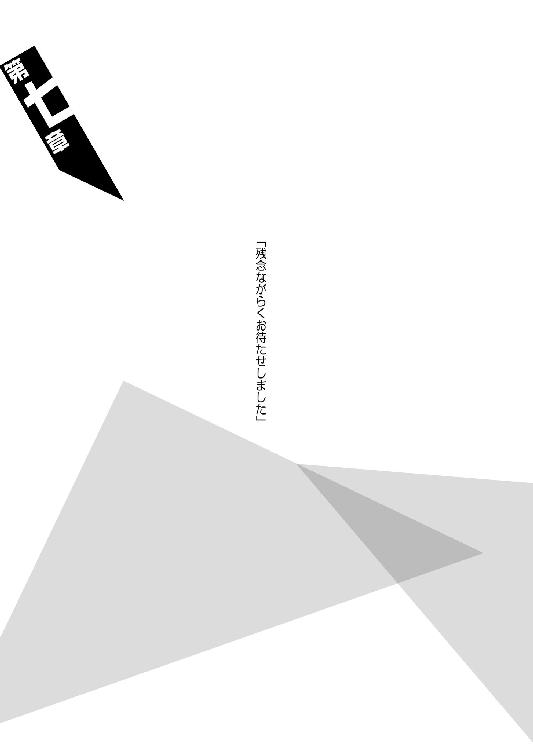
◆ ◆
「俺はチームリーダーじゃない。チームリーダーは、哀川潤か闇口崩子の、どちらかだ」
零崎人識にとって零崎双識がどういう兄だったのか、今はそれを語るべき場面ではないのだが──少なくともはっきりしているのは、双識は決して、人識の理解者だったわけではないということだ。
彼が零崎一賊において、誰よりも人識に近しい殺人鬼であったことに疑いはないが、しかしそんなマインドレンデルでさえ、人識の内面を完全に見通せていたわけではない。
零崎人識は誰にも理解されないし。
零崎人識は誰をも理解できない。
世界において一人だけ、別次元で生きているようなものだ──勿論人識も、中学生くらいの頃は、そんなことで頭を悩ましたこともある。
そんなインタラクティヴな不理解が祟って匂宮雑技団のエース、匂宮出夢と決裂してしまって以来、逆にあまり気にしなくなってしまったけれど──そのことにより、不理解は双方向に向けてより一層徹底したものとなった。
中学卒業後の放浪生活が彼を変えた──悪化させたという言い方もできよう。
今の人識は、理解されない、理解できないと言うよりは──理解を求めず、理解しようともしない、そんな頑なさをベースとしている。
が、本人はそれをそこまで自覚してはいない──結局、行き着くところまで行き着き、行き着くところを行き過ぎたことにより、自分でも零崎人識という存在を一言で表現することができないのだ。
無桐伊織が人識の周囲に、高くはなくとも厚い壁を感じるのは、実を言えば人識のそういうパーソナリティにこそ起因するのだった。彼は周囲に一線を引いているのではなく、彼自身が深き闇なのである。
零崎人識。
だから彼には理解者はいない。
マインドレンデルも兄でありながら、零崎人識の理解者ではなかった。
ただし、零崎双識──彼は理解できないままに、不理解のままに、そんな弟を受け入れていた。
そんな弟を愛していた。
家族愛に満ちた零崎一賊においても、それができたのは──零崎双識だけだった。よくわからないものをわからないままに愛したのは──彼が彼だった所以である。
だから人識にとって、家族だと認めることができるのは零崎双識だけであり──家族だと思っていたのは、零崎双識だけだったのだ。
さておき。
人識は、そんなことをそんな風に呟きながら──六十世紀杉を目指して山道を登り続けていた。山道と言っても道などあって無きが如しだ。地面は雨でしこたまぬかるんでいて、トレッキングシューズを履いていようと関係なく、油断すると滑って転んでしまいそうだった。慣れないキックステップを、人識は実行しなければならなかった。
もっとも、本土では考えられないほどに生い茂った原生林である──地面のぬかるむのだけは防ぎようもないが、篠突く雨はほとんどが枝葉に遮られて、傘を差しているわけでもないのに、屋根の下を歩いているような気分だった。
「とは言え......それもいいことばっかりじゃねーんだよな」
六十世紀杉を目指すために与えられたツールは、防水性の地図と如何にも頼りないコンパス、あとは最低限の水が入ったペットボトルだけだった。これだけの道具で山登りができる人間がいるのならお目にかかってみたいものだが、しかし、ならば何を用意してもらえばよかったのかと言えば、専門家ではない人識にはわからない。
ただしこういう場合、太陽の位置を基準にすべきであることくらいは知っていた。なのにその太陽が見えないのである──これでは読んで字の如く山勘任せで登るしかない。
方向感覚に自信のある自分だからこそ、それでも何とか六十世紀杉を目指すことはできるが──こりゃあ伊織ちゃんにはちょっと難しそうだな、と、人識はそう思った。
道中、何匹か鹿を見かけた。
小柄な鹿ばかりだ──子鹿なのかと思ったが、どうもそういうことではないらしい。成体でもあれくらいの大きさまでしか成長しないのだ──様々な植物が所狭しと跳梁跋扈するこの山においては、きっとそれくらいの大きさが、動物としてのベストサイズなのだろう。
「かっ──じゃあ、俺とか崩子ちゃんとかのほうが、案外哀川潤よりも身軽に動けるってことなのかもしれねーな。......くそ、今のは自分で言って自分で傷ついたぞ」
同じ山でもいつぞやの竹取山とは随分違うな──と、人識は独りごちながら歩を進める。何度か滑りそうになるのを、木の枝、幹などに手を伸ばすことで、堪えながら。
「──ありゃあ竹林だったしな。わけも違うか」
人識は手袋を嵌めているが、しかしその手袋は自前のもので、昨日、我樹丸の屋敷の庭の岩を殴りつけた際に指の付け根のところが破れてしまっている。それでも十分に用は足りるのだが──問題は、破れた手袋よりも、その内側の、擦り剝けた肌のほうだった。
案外、思ったほど酷い怪我でもないんじゃないか、明日になればきれいさっぱり治ってるんじゃないか──とも思っていたが、それは見通しが甘かった。
むしろ傷口が腫れ上がってしまった。
ひょっとしたら骨に罅くらい入っているかもしれない。
（やっぱ人類最強みたいにはいかねーか──俺の回復力は普通に普通だもんな）
木の枝をつかんだり、地図やコンパスを操作したりする分には支障ないが、精密動作である曲絃糸は使えない。
糸を引っ掛け得る、フックとなる枝やら岩やらが無数にあるこの環境、正に曲絃糸が本領を発揮できる戦場であるはずなのに、とんだヘマをやってしまったものだ。あの時点では大厄ゲームなんて、ルールどころか存在さえ知らなかったし──否。
知っていたところで、やはり同じことをしたに決まっているが。
どうも自分は忍耐に欠ける。
というか、後先考えない。
「考えてみりゃ崩子ちゃんのことなんか俺の知ったこっちゃねーじゃねえか──なんで俺があの戯言野郎の抱き枕を守ってやんなきゃなんねーんだよ。いっつもこーだ、いっつもこーだ、いっつもこーだ。俺多分、その辺の子猫守って死んでくぜ。いや、子鹿かな？ 役回りが損過ぎるんだよな──あーあ。もう帰っちゃおうかなあ。ああいう女子供を見捨てたほうが、俺のキャラとしてクールじゃねえ？ そんで画面右下にワイプ切って解説役を務めるんだ。かはは」
大体傾斜がきつ過ぎるだろこの山──と。
近道でもしようと思ったのか、切り立った崖をよじ登ろうとして──そしてそんなことは無理だと痛感し、やはり地道に行くしかないと、くるりと反転したところで──人識は。
零崎人識は、心の底からうんざりしたような顔をする。
「......なーんでこんなに早く見つかっちまうかねえ──まだ始まって一時間も経ってねえじゃねえか。俺って普段の行いが悪いのかぁ？ んなこたねえよな、伊織ちゃんのことだって崩子ちゃんのことだって、ちゃんと面倒見てんじゃねえかよ」
「............」
愚痴るような人識の言葉を受け──その視線の先に、雨も気にせずにデスサイスを掲げるようにして立っていた少年、即ち石凪砥石はしばらく、じっくりと黙った末に、
「よく言うよ」
と嘆息した。
「ついさっき、その二人を見捨てて逃げ帰ろうと死ていた癖に、笑わせる」
「ああ？ なんだ、聞いてたのかよ」
「画面右下にワイプ切って解説するって、自分で言って自分で笑うほど面白くはないと思うけど」
「独り言に駄目出すなよ。澄ました顔して趣味悪いな、お前」
「聞いてたも何も──僕だってこんなにも早くきみを見つけられるとは思っていなかったさ。もっとゲームを楽死みたかった。だけど何の面白みもない。ぶつぶつ喋りながら歩いているきみを見つけるのは、鹿を狩るより簡単だ」
「......独り言の癖も直さねーとな」
かはは、と人識は言い──構えを取る。
拳法の構え。
澪標姉妹との日常的バトルを経験したことにより、更に幾らか練られているはずではあるが──果たしてそれが石凪砥石にどれほど通じるものなのか。
いや、石凪砥石と言うより。
死神──に、通じるものなのか。
（零崎みたいな殺意を持つ──死神か）
（そもそも変な奴なんだよな──こいつ）
正直言って、勝てる気はしない。
ちょっと前までの自分ならともかく──今の自分では。
（俺と決裂したあとの出夢だったら、こんな殺意、歯牙にもかけねーんだろうけどな──零崎の俺にはちっときついわ）
「ちなみに、先に訊いておこう。も死も口から出任せではなく、きみが本当に彼女達を見捨てて逃げる気があったとするなら、教えてくれないか。きみの持っているバンダナの裏地に、リーダーの印章はあるのかい？」
「あー？ ないない。だって俺リーダーじゃねーもん。俺みたいな信用できねー奴に、誰がそんな大事な役目を任せるかってーの。だからさっさと他の奴んところに行けって」
「......やっぱり、力ずくで確認する死かないか」
「ちぇっ。信じねーなら最初から訊くなよな」
ふて腐れたように頰を膨らませる人識。
ふざけた態度である。
「俺も大概色んなプレイヤーとバトってきたけど──石凪調査室の奴と遊んだことはねーんだよな。あー、えーっと、そう言えば大将が昔なんか言ってた気が......」
「独り言の癖が......、全然直ってないみたいだけれど、大丈夫かい？」
砥石はすい──とデスサイスの刃先を人識に向けた。
「死ぬまでに──直せたらいいよね」
「......殺しはなしってルールだろ？」
「ああ。殺死はな死だ」
砥石は棒読みで言う。
「ただ死──きみが勝手に死ぬのは、止められないよ。便宜上『殺し名』の序列に名を連ねているとは言え、石凪調査室は人を殺さない。ただ、人を看取るだけだ──人は勝手に死ぬだけさ」
「理不尽に生まれて意味不明に死ぬってか？ かはは──やれやれ。俺も昨日伊織ちゃんに似たようなことを言ったけどな──言われる側になってみると意外とむかつくもんだ。殴ってやりたくなってきたぜ、石凪砥石」
「殺死てやりたく、じゃないのかい？ きみのほうこそ──くれぐれもゲームのルールは忘れないでくれよ」
僕は死にたくないんでね、と石凪砥石。
俺は死にたくもなってきた、と零崎人識。
そして、生い茂る山の中、強まる雨の中。
それ以上は言葉もなく──あっさりと戦闘は開始される。
理不尽に、意味不明に。
◆ ◆
「わたしはチームリーダーじゃありませんよう。そして崩子ちゃんもチームリーダーじゃありませんよう」
無桐伊織は、零崎人識以上に簡単に発見され、簡単に追いつかれ、簡単に回り込まれ、そして機械の両手を、まるで落ちてきた吊り天井を支えているかのような姿勢で構えて──要するには簡単にホールドアップしていた。
彼女を簡単に発見して、簡単に追いつき、簡単に回り込んで、そして機械の両手を、まるで落ちてきた吊り天井を支えているかのような姿勢で構えさせ──要するには簡単にホールドアップさせたのは、当然、闇口憑依である。
空蟬の憑依。
雨に濡れてこそいるものの、身に纏っているその和服はまるで泥に汚れていない。伊織の服は（憑依に追われる前から既に）どろどろのぐちゃぐちゃだったというのに。
これが一流のプレイヤーか。
すごい。
と、伊織は空気を読まずに感心した。
「......わたくしは闇口衆の暗殺者として、およそ己が主人の言うこと以外は全て疑うことを信条としてきましたが......今ほど他人の台詞を疑わしいと思ったことはありませんね」
ホールドアップの姿勢を取り続けている伊織に対して、憑依は見下げ果てたような口調で言った。
「大体、あなた──まるで素人ではありませんか。それで本当に零崎なんですか？」
「いやー、一応はそうらしいのですが」
残念ながら、と伊織は言う。
何故か浮かべているのは、はにかむような照れ笑いである。
「わたし、つい最近までフツーに女子高生やってたもんでして。あんまりよくわかってないのですよ、こっちの世界のこと」
「............」
言うだけ言ってみたが。
しかし憑依から向けられるのは、疑わしげな、しかもさめざめしい視線だった。
「と、とにかく、わたしはリーダーではないんですよ。えーと、憑依......憑依さん？ ええ。ですから他の人のところ、具体的には人識くんのところなんかに行かれたらよろしいかと思いますが、如何ですか？」
「確かに──そうですね」
憑依は言う。
「もしもあなたがリーダーでないのなら、バンダナを奪う必要さえないでしょう。あなたは──囮としても、あまりにもお粗末過ぎます」
「あ、はいはい。わたし、実に粗末でして。仲間内では相馬二号と呼ばれてまして」
「............」
「あ、うわわ」
スタンダードで無表情に近い憑依ではあるが、今彼女がイラッとしたらしいのが、なんとなく伝わってきた。
（............）
（やっぱり似てますよね──崩子ちゃんに）
無口で無表情で無感情なあの美少女に──よく似ている。
伊織は、憑依と話すのはこれが初めてとなるが──彼女が我樹丸を始めとする闇口衆と同様に、崩子を死人として無視していることは聞いている。
（こんなに明白に親子なのに──どうして無視しますかねえ）
まあ、そんな風に率直に疑問を抱いてしまう辺り、伊織がこの世界のことを『あんまりよくわかってない』ということなのだろうけれど。
いや、あるいは──それこそが、無桐伊織が零崎一賊の殺人鬼であるということか。
家族愛を重んじる。
零崎一賊。
「まあ──安心してください、無桐伊織さん。あなたは我樹丸さんにとって大事な身体ですからね。あたら傷つけたりは致しませんよ」
「わ、わたしにとっても大事な身体ですよう」
両手を挙げたまま、伊織は反論する。現在の伊織の両手、即ち義手は我樹丸の鑑定通りに『呪い名』序列二位、罪口商会によるもので、しかも最新型のハイエンドモデルである。相当丈夫で、しかも並外れて軽い。ホールドアップという、実は長時間取ると疲れてしまうポーズを取り続けることに、伊織は何の苦痛も感じていなかった。
いや。
よもやホールドアップ用の義手でもあるまいが。
そんなところで利便性を発揮していると知れば、この義手の製作者（伊織はそのフルネームを把握していないが）、罪口積雪はさぞかし嘆くことだろう。
「に、妊娠とか中絶とか、そんなケータイ小説みたいな目に遭いたくないですよう！」
「......最近は色々とバリエーションも増えてるみたいですよ」
「え？」
「ケータイ小説の話です」
憑依は言った。
ちなみにこの辺りの会話は、昨日人識と崩子が交わした会話とほとんど被っていた。
およそ憑依も携帯電話を持っているとも思えないけれど。
「大体、だ、大体ですね、あなたは平気なんですか？ その、あなたにとって我樹丸さんは旦那さんですよね？ それが哀川のおねーさんやわたしと子作りに励むだなんて、そんなの浮気じゃないですか！」
「......若い」
伊織の（必死の）訴えに、憑依はゆるりと静かに首を振る。
「羨ましいですね、そういう感覚──しかしわたくしは見ての通りの闇口衆です。わたくしは六何我樹丸の女房ではありますが──仕える主は別にいるのですよ」
「は？」
「我樹丸さんは旦那ではあっても主人ではありません。闇口衆の奴隷性は、如何に経験の浅そうなあなたでも知っているでしょう」
「ど、奴隷って──」
「それが闇口衆ですよ。仕えるべき己が主のためにこそ生きることを誓った、誇り高き奴隷。家族よりも優先すべき主人を持つ従僕。浮気と言うならば、わたくしだって浮気をしています──ただしその場合、浮気相手となるのは我樹丸さんのほうですが」
まああなたに言ってもわからないでしょうけれど──と、憑依は言う。
「大丈夫ですよ。子供さえ産んでくれれば、もうあなたは我樹丸さんにとって用済みとなりますから。帰ってもらって結構です。死色の真紅も──マインドレンデルの弟も」
「......崩子ちゃんも、でしょう？」
「誰ですか──それは？」
憑依は、本当に知らない人間の名前を聞いたときのように──そう反応した。
「さっきも言っていましたね──誰のことでしょう。どういう字を書くんでしょうね」
「............」
（なるほど──それが闇口ということですか）
（だとしたら──）
「......わたしは零崎でよかったなあ」
「はい？」
「いえいえ、こちらの話です」
闇口衆の奴隷性は、よくわからないなりに、確かに知っていたが。
てっきり──憑依の『主人』は我樹丸だとばかり思っていた。
だからこそ──よくわからないなりに。
許容できていた気がしたのに。
（家族より優先すべき主人──か）
（挨拶に困りますねえ）
「──それではこちらの話に戻します、無桐伊織さん。わたくしはあなたを傷つけたりは致しません──あなたが無抵抗で降参してくれる限りは。手足の切断までは我樹丸さんから許可されていますので、それは十分に心得ておいてください」
「こ──心得ましたです」
「そうですか」
では、と憑依。
「降参の証としてバンダナを出していただきましょう──まあ、あなたの台詞の疑わしさはまるで常軌を逸していますが、しかしそれを差し引けば、わたくしはあなたのような素人以下のプレイヤーがリーダーを任されているとは思いませんよ」
「し、素人以下ですか」
素人同然から更に評価が下がった。
何がまずかったのだろう。
「でもでも、わっかりませんよー？ わたしは今、とても高度な駆け引きをあなたに仕掛けているのかも？」
「素人未満のあなたがですか？」
更に下がった。
喋れば喋るほど地金が露出していく感じだった。
「まあ、バンダナを見せていただければわかることです。力ずくで奪っても構わないのですが、その際に変な事故が起こっても都合が悪い。自ら見せてくれると都合がよいですね」
「は、はいはい。わかりましたよう」
「わかったのなら、手早くお願いします」
「両手は降ろしてもいいんですよね？」
「勿論」
「で、では失礼します」
憑依のモードが切り替わりつつあるのを見て取って、これ以上の会話を続けるのは危険だと判断した伊織は、慌てた手つきでトレッキングズボンを脱ぎにかかった。
「......わたくしに同性愛の趣味はありませんから、別にあなたにストリップを見せてもらいたいわけではないのですが」
「ち、違いますよう。双識さんじゃないんだから、そんなことするわけないじゃないですか」
別に零崎双識に露出の趣味はなかったが。
伊織は勝手なイメージで語った。
「バンダナをズボンの中に隠しているだけですよう」
「あなたを見つけたのが我樹丸さんじゃなくってよかったですね。その場で子作りが始まっていたかもしれませんよ」
「こ、怖いこと言わないでくださいっ」
「こんな偉大なる大自然の中、自ら下半身を晒け出して恥ずかしくないんですか？」
「パンツじゃないから恥ずかしくありません！」
「......パンツのようですが」
「うわおっ！」
そう言えばそうだった。
考えてみればただでさえ蒸れるのに、ズボンの下にスパッツなんて穿くわけがなかった。
「うおー。大サービスしてしまいました......」
「何のサービスにもなっていませんが......砥石相手にやるのならまだしも」
「あー。彼ってばむっつりしてそーでしたからねー。クールに振る舞ってましたけど、ああいう男性に限って女の子大好きなんですよ。きっと『殺人鬼のパンツはいいパンツ！』とか言ってはしゃぎまくりです」
「こちらから砥石の名前を挙げておいてなんですけれど......、あの子がそこまでの振る舞いを、あなたの前で一度でも見せたのですか？」
「いやあ、あの年頃の男子なんてみんなそんなもんですって」
身内のみならず敵方にまで勝手気ままなことを言いながら、無桐伊織はズボンをかちゃかちゃと穿き直し。
そして取り出した大鋏、『自殺志願』を。
口に銜えた。
「......何のつもりですか？」
「見ての通りですよう」
鋏を口に銜えたままで──伊織は言う。
「見ての通り──零崎を、開始します」
「舐められたものですね。わたくしも」
若い──と。
憑依は蔑むような視線を、伊織に投げた。
「調子に乗らないでください。劣化素人のあなたがわたくしに勝てるとでも？」
「劣化素人！ びっくりな言葉です！」
伊織はオーバーリアクションを取ってから、「しかしですね」と言う。
「確かに普通にバトったらわたしじゃあなたに勝てるはずもありませんが──だけどこれはゲームですからね。伊織ちゃん、ゲームは割と得意です」
「ほう？」
「あなたは不自由です──ルール上わたしを殺すことができないし、そして我樹丸さんからの縛りで、わたしを傷つけることもできません。ところが、わたしは安心して──あなたを殺しにかかれます。本能のまま才能のまま、その持てる性質のままに、あなたを殺しにかかれます」
だって。
実力差があり過ぎて、どーせわたしにあなたは殺せないんですから──と。
伊織は笑った。
殺人鬼のように笑った。
「さあ──わたしは本気で殺しますから、あなたは目一杯手加減してください、闇口憑依さん」
「......随分とまあ、調子に乗ったものではありませんか」
「お調子者ですから」
わたしは、と伊織。
「だけどわたしは──もう逃げないんです」
「............」
「何からも、どんな状況からも、たとえ己の内から湧きあがる殺人衝動からさえも──絶対に逃げません」
逃げること。
逃避すること。
わたしはもうやめたのだ。
どんなものとさえ──向き合ってやる。
「少し──軽く見ていましたかね」
憑依は。
やや眇めるようにして──それから、帯に差していた鉄扇を抜き、音も立てずに開く。
「しかし聞いていなかったのですか？ あなたの価値は、母体としてのみあるのですよ？ 傷つけないだなんて言っていません。むしろ、逆のことを言ったはずですよね。聞いていなかったのですか？ ──手足の切断までは我樹丸さんから許可されています、と言いました」
「ええ。心得ています、と答えました」
だからこそです、と、伊織は言った。
口に銜えた『自殺志願』を憑依に対して誇示するようにして──
「わたしはあのマインドレンデルの妹なのですよ？」
と。
そう言った。
「手足が切断されるくらいのことを──怪我の内には数えていません」
◆ ◆
「わたしはチームリーダーではない──そして哀川さんもチームリーダーではない」
今回の大厄ゲームにおける自分の役割を、闇口崩子はよくわかっていた──どういう風に振る舞えば、自らの所属する兎組（鬼組）にとってメリットとなるか、利となり理となるか──聡い崩子には、それがよくわかっていた。
チームメイトの中で唯一の大厄ゲーム経験者。
だからこそ、できることがある。
やるべきことがある。
少なくとも、ゴール地点である六十世紀杉のある場所を正確に把握しているのは自分だけなのだから──我樹丸側は地図とコンパスを例によって三人分しか用意しなかったが、それに限って言うなら崩子にはそんなものは必要なかった。六十世紀杉は、一体何度会いに行ったかわからない。
しかし。
頭ではわかっていても、身体がついていかなかった。
戦闘スキルを失っていることもあるが、衣装がよくない──ワンピースにサンダルというファッションは、誰がどう考えてもトレッキングに向いてはいなかった。昨日、山を降りるのも一苦労だったのだ──まして山を登るとなれば尚更だった。我樹丸や憑依ならば、足の動かし辛そうな和装、それに草履のままでも登頂可能なのだろうが──今の崩子は、キックステップで転ばないようにするだけでも精一杯だった。
もうちょっとできると思っていたが。
しかし当初の予定の半分も来ていなかった。
このままでは皆の足を引っ張ることになってしまう──これではらしくもなく意気込んでゲームに参加表明した甲斐がない。
（頑張らないと）
（頑張らないと、頑張らないと、頑張らないと）
そして。
結局、雨と汗でまたも濡れ鼠になりながら、崩子が重たい足と服を引きずりつつ、そう言えばそもそも、どうしてわたしが頑張らなければならないんだろう──人識さんと伊織さんの反対を押し切ってまで──わたしは無理矢理拉致されてきただけなのに──萌太の処刑鎌なんて、確かにわたしにとっても思い入れはないでもないけれど、そんなの今更どうでもいいはずなのに──などと、根本的な疑問を抱き始めた頃。
崩子は我樹丸とすれ違った。
遭遇した。
六何我樹丸。
生涯無敗の結晶皇帝。
我樹丸は、当然のことながら哀川潤を追跡していたはずだろう──チームリーダーが一体誰なのかという問題以前に、死色の真紅、哀川潤を相手取れるプレイヤーは、この島には現在六何我樹丸以外にはいないのだから。
たとえフェイクだったとしても、哀川潤を無視はできない。どうあれ我樹丸は狐組の一員として、大厄ゲームの構造上、哀川潤を担当せざるを得ないのだ。
だからこれはただの偶然だ。
我樹丸が崩子を追ってきて、それで遭遇したわけではない──強いて言うなら崩子にとって既知のはずの山々が予想以上に手強かったがために生じた時間の浪費が招いた、運命の悪戯だった。
終わった。
そう思った。
現状、まるで戦闘スキルのない崩子にとって、今回のケースにおいて絶対に守らなければならなかった最低条件は、狐組の誰にも見つからないことだったのだ。
『鬼ごっこ』、『かけっこ』。
そういう例えで言うならば、今の崩子にとっての大厄ゲームは、『隠れんぼ』としての性質を帯びていたのである。
戦いになるまでもない。
見つかるだけで、もう終わりなのだ。
潜んで隠れて、相手チームを混乱させることこそが──兎組（鬼組）の一員として、闇口崩子が演じるべき役割だったのである。
それなのに。
よりによって我樹丸と遭ってしまうなんて。
（ついてない──なんてわけじゃない）
（偶然は偶然だけれど──わたしの責任だ）
わたしの所為だ。
だからと言ってもうどうしようもないと、全身を支配する疲労、徒労感も手伝って、崩子が何も考えられずにいると──その後に、本当の驚きがやってきた。
我樹丸は崩子を無視して。
そのまま──すれ違っていったのだ。
「..................っ！」
崩子の全身が──震えた。
ほんの少しも──我樹丸は、歩調を乱すことはなかった。表情一つ動かすことなく、実に悠然とした態度で、今から思い出せば崩子のほうにはまるで目もくれず──通り過ぎていった。
たとえ目を向けなくとも。
視界に入らなかったわけではないだろう──崩子の身体が小さいから見つけられなかったなんて、そんなふざけた理由があるわけでもない。
単に、無視したのだ。
六何我樹丸は──闇口崩子を。
（............）
（......ふ、ふ、ふふふ！）
自然──顔が引きつって、笑ってしまう。
そうか。
わたしは──あなたにとって虫けらか。
このシチュエーションにおいても──このコンディションにおいても、尚無視するか。
尚更、無視するか。
たとえば、意表を突いた奇策でわたしがチームリーダーだったとしても──どうでもいいのか。
それとも。
どうせわたしには──何もできないと。
そう考えているのか。
たかをくくっているのか。
チームリーダーはおろか──囮役さえ勤まらないと、そう考えているのか。
あくまでも透明人間として──死人として。
いないものとして扱うのか。
そうか。
そうかそうか、そうなのか。
「戦闘スキルを失ったわたしには何の興味もありませんか......そうですよね──でないと萌太も死んだ甲斐がありませんよね──」
萌太が身を挺して守ってくれたんだから。
庇ってくれたんだから。
わたしは、あの男やあの女に無視されることを、喜ばなくちゃいけないんですよね──
無視してくれて。
どうもありがとうございますって──
「──ふざけるなっ！」
ほとんど意識していなかった。
深く考える間もなく、崩子は──足元に落ちていた小石を手にとって、遠ざかっていく我樹丸の背中目掛けて、思い切りそれを投げつけていた。
そんな状態で正確なコントロールなんて期待できるわけもなかったが、果たしてその飛礫は、六何我樹丸の右肩を直撃した。
直撃という言葉を使えば如何にも力強いが、しかし所詮は十三歳の力で投げた山なりの小石だ、我樹丸にしてみれば避けるまでもないものだったのだろう。
事実我樹丸は、その小石が当たったところで、ほんの少しも振り向きさえしなかった。
やはり歩調も変えず。
奥へ奥へと──変わらぬ足取りで、何事もなかったかのように、降りしきる雨の中、自分のペースで歩んでいく。
崩子は続けざまに小石をいくつも投げたが、さすがに距離が開いてしまったので、最早かすりもしない。
「はっ──はっ、はっ」
たったそれだけの行為で、息があがってしまった。
もう腕があがらない、何の効果もない投石さえも、これ以上はできない。
我樹丸は、そんな崩子に構うことなく去っていく。
その姿は木々の狭間に消えていく──
「あ──あなたの負けです、六何我樹丸！」
無我夢中で──崩子は怒鳴った。
声を荒らげて、声を震わせ、声を張り上げた。
「だってあなたは、わたしを殺せないんですから！ わたしと戦えないんですから！ わたしに石を投げられても、反撃することさえできないんですから！ そうやって、何食わぬ顔をして、白々しくも立ち去るしかないんですから！ ただの十三歳の女の子から、もう戦うこともできないわたしから、死んだも同然のわたしから、尻尾を巻いてみっともなくすごすごと遁走することしかできないんですから！」
どうして自分がそんな風に叫んでいるのか。
崩子にはわからなかった。
（どうしてわたしが）
（どうしてわたしが、こんなありがちな、絵に描いたような雑魚キャラの台詞を、減らず口を、それでも唯一残っていたはずのプライドや矜持をかなぐり捨ててまで、喉を潰さんばかりに怒鳴らなければならないのか──）
自分のキャラクターが音を立てて、ぼろぼろと崩壊していくのを感じる。
それでも止めることはできなかった。
溢れるように口を衝いて出る言葉を、闇口崩子は止めることができなかった。
「だからあなたの負けなんです！ いい気味ですっ！ 六何我樹丸はわたしなんかに負けたんだっ！ やーいやーい！」
「..................」
ぴたり、と。
六何我樹丸が──足を止めた。
止まった。
それでも、まだ振り向きはしなかった──もしも退くとするなら、それが崩子にとっては最後のチャンスだっただろう。
まだ間に合ったはずだ。
だけれど──崩子は退かなかった。
どころか、彼女は──更に踏み込んだ。
「生涯無敗──敗れたりっ！」
禁句と言うなら、六何我樹丸に対してそれ以上の禁句はなかっただろう──タブー中のタブーのような言葉だった。零崎人識にお洒落頑張ってると言うようなもの、無桐伊織にモテカワメイクと言うようなものである。
あるいは。
人類最強を、弱いと切って捨てたようなものだ。
そして六何我樹丸は──振り向いた。
その表情は。
明らかに──余裕をなくしていた。
彼が普段周囲に対して見せているような鷹揚な振る舞いなど、そこには欠片も残っていない。
青筋を立て──瞳孔を開いている。
「......言うてはならんことを言ったな。ガキが」
我樹丸は早足で、行った道を戻ってくる──崩子のところへと一直線に向かってくる。
その足取りには迷いはなく。
崩子を睨んだまま、視線を外そうとしない。
無視していない。
目視している。
敵視──している。
（う、うううううっ──）
（ごめんなさい、戯言遣いのお兄ちゃん──）
多分、死ぬ。
闇口崩子は、ここで死ぬ。
大した意味もなく、ただ愚かにも身の程知らずの暴言を吐いたというだけの、どうでもいいような理由で殺される。たとえ我樹丸がゲームのルールを遵守しようとしても、きっと崩子はそんな手を抜いた攻撃にさえ耐え切れず、死んでしまう。
忠誠を誓ったはずの対象とは何ら関係のないところで、己の勝手な行動によって──
死んでしまう。
（だ、だけど──本当にごめんなさい）
（わたし、わたしは）
わたしは──妹なんです。
萌太のことが、忘れられないんです。
戯言遣いのお兄ちゃんは──萌太の代わりなんかじゃ、ないんです。
「余は六何我樹丸じゃ──出来損ないで死に損ないの娘よ、遊んでやる」
「わたしは闇口崩子だ！ 負け損ないで死に損ないの老人よ、戦ってやるっ！」
生涯無敗と何者でもない十三歳の少女。
天地のような、雲泥のような。
悪夢のような実力差のセットマッチは──こうして実現してしまった。
◆ ◆
「あたしはチームリーダーじゃない。そんでもって、チームリーダーは男だ」
とか言ってな──と。
哀川潤はなんとなくその全貌が見えてきた六十世紀杉を眺めながら、とても不満そうにそう呟いた。
「......つーか、このままだと何事もないままに辿り着いちまうんだけど。フラッグにアタックできちまうんだけど」
初めての山道をものともせず。
雨道をものともせず、泥道をものともせず。
大厄ゲーム開始からおよそ一時間後、制限時間まで九時間を残して、哀川潤は既にゴールを目前としていた。
まあ、妥当ではある。
何故なら彼女はゲームの定石を無視して、地図とコンパスを最初に確認するや否やあっさりと最短ルートを見抜き、そして即座にそのトレッキングコースを選択したからだ──その上、狐組の誰からも邪魔が入らなかったのだから、むしろこれは当然過ぎるほど当然の結果だった。
最短ルートを選ぶのは愚行。
ただし、愚行は同時に正攻法でもある。
哀川潤は真っ直ぐに意表を突いたのだった。
ゲーム開始にあたって、兎組（鬼組）は、少しも打ち合わせ、作戦会議らしきことをしていない。チームリーダーさえ決めてしまえば、あとはそれぞれがそれぞれに、好きなように役目を果たすことと、そういうざっくりとした流れになったのだ。
元より寄せ集めのようなチームなのだから、全員、そのほうが動きやすいのも確かだった。
そして哀川潤は愚行を選んだのである。
もっとも哀川潤にとっては愚行、正攻法云々以前以上に、最短ルート以外に選択肢がなかったという言いかたもできる。
彼女のパラメーターは現在一割を切っている。
外側だけ見れば万全の状態であるがゆえに、幸いなことにその事実は敵方には露見していないようだが（人識と伊織も、二割程度は回復していると思ったままだ）、ならば哀川潤とすれば、登山そのものにかける労力は最低限に抑えなければならないだろう──彼女はパワーをセーブしなければならないのだ。少なくとも彼女は、ゴール地点までの間に生涯無敗、六何我樹丸とバトルにもつれ込むことを想定していたはずなのだから。
ただし、だとしたらそれは杞憂でしかなかった。
その六何我樹丸は今頃、兎組（鬼組）最弱、闇口崩子と戦っている最中なのだから。
「うわー。大厄ゲームつまんねー」
もう哀川潤はすっかりペースを緩めてしまっていた。
ズボンのポケットからバンダナを取り出して、くるくると振り回してみせる。
しかしそれを見ている者はいない。
恐らくは彼女が期待していたように──誘い出される者はいない。
「美少年から話聞いたときは、本当に期待してたんだけどなー。なーんかがっかりだぜ」
どういう気まぐれなのか、振り回したバンダナはズボンに戻さず、それをそのままヘアゴム代わりにして、髪をポニーテイル風にまとめた哀川潤。
疲れた素振りはまるでないが、それでも肩にかかる髪を鬱陶しく思うくらいには、彼女も汗をかいたのかもしれない。否、単に雨に濡れただけかもしれないが。
「こんな気合入った格好までして、まるで馬鹿みてーじゃねえか。......こっちから探しに行くかな。この際我樹丸じゃなくてもいーや。憑依でも砥石くんでも、暇潰しくらいには付き合ってくれんだろ。あーあ、どっちらけ──」
確かに、このゲーム展開は、バトルマニアの哀川潤にとってはこれ以上なくつまらないものだっただろう。
大厄ゲームという演出自体は彼女好みのものではあったが、しかし結果がこれでは面白くも何ともない。
ため息もつきたくなるというものだ。
もっともそれは彼女が日常的に体験している憂鬱でもある。
請負仕事において大抵の場合、人類最強の看板に恐れをなして、倒すべき敵のほうから勝手に逃げてしまうからだ。たとえば今から探しに行って見つかったとしても、実際には憑依や砥石では、暇潰しに付き合ってはくれないだろう。
楽観主義で快楽主義で、ポジティヴでアクティヴで、どんな風情でも楽しめる哀川潤ではあるが──こと戦闘欲に限って言うなら、滅多に満たされることはない。
野生の鷹のように、常に飢えている。
しかしその、真っ当に仕事を果たす上では障害にしかなりようのない哀川潤の困った嗜好、言うならば悪癖のような性質は──正しく普段の行いの賜物というべきだろう、今日に限っては満たされることになるのだった。
「げらげら──げら」
あと一つ傾斜を抜ければそれで六十世紀杉だというタイミングで、目前に──いた。
人類最終。
橙なる種。
想影真心が──立っていた。
肩口で切り揃えられたオレンジ色の髪、子供のような小さな体軀。こんな山中、しかも奥まった険しい箇所において、草鞋どころか下駄どころかサンダルどころか──裸足だった。
オレンジ色の目が。
明るく爛々と輝いて、哀川潤を捉えている。
「喧嘩しにきたぞ──友達」
「............」
さすがに絶句する哀川潤。
さもありなん。
この大厄島に自身の後継機、自身の最新モデル、自身のハイエンドであるところの想影真心が現れるなど、いくらなんでも、想定外過ぎる事態だった。
「えっと......真心ちゃん」
苦笑いと共に、哀川潤は問う。
とても端的に。
「なんでいるのよ？」
「いーちゃんに頼まれた」
真心もまた、端的に答えた。
白い歯を剝き出しにして、顔全体で笑いながら。
嬉しさを隠そうともせず。
「いーたんに頼まれたって──何を」
「崩子ちゃんがお前に拉致られたから取り返して来てくれって」
「お、おのれ。戯言遣いめ」
哀川潤は口元を押さえ、舌打ちをする。
「人の仕事の邪魔しやがって。恩知らずめ。こないだはあたしをけしかけてお前と戦わせた癖に、今度はお前をけしかけてあたしと戦わせようってのか」
「でも、いーちゃんだけじゃないぞ」
「あ？」
「みいこちゃんからも奈波ちゃんからも隼ちゃんからも鵜鷺ちゃんからもらぶみちゃんからも沙咲ちゃんからも数一ちゃんからもひかりちゃんからもてる子ちゃんからも春日ちゃんからも頼まれたぞ」
「崩子ちゃんを誘拐したことで、あたしはそこまで幅広い層からのバッシングを浴びてるのか!?」
て言うかどこまでその情報が伝わってんだ、と哀川潤は怒鳴った。
「──なんで鴉の濡れ羽島まで伝播してんだ！ ファンクラブでも持ってんのかよあの美少女は！」
「俺様が知るかよ」
「くっそー。やり過ぎたか」
がしがしと、乱暴に頭をかく哀川潤。
「前にいーたん拉致ったときは、別に誰からも怒られなかったんだけどなー」
「そんなこともしてたのか、お前」
酷い奴だな、と至極もっともなことを言う想影真心。
うっせえな、と毒づきながら、そこでふと思いついたように、
「つーかお前、どうやってここまで来たんだよ」
と、哀川潤は真心に訊く。
「ヘリで運んできて落としてもらった」
「小唄、今度ぶっ殺す！」
あの裏切り者め、とばかりに「きっ」と空を見上げる哀川潤だが、もうそこには中型輸送ヘリなど飛んでいない。節操なき大泥棒はさっさと逃げ帰ったらしい。
「ん？ あれ？ だけどそれらしいパラシュートなんか見なかったぞ」
「そんなもんいらん。あそこにある一枚岩んところに着地した」
「お前人間じゃねえよ！」
哀川潤の突っ込み。
実はレアである。
「お前のそのパラメーター、どうやって密室殺人事件とかと辻褄合わせんだよ！ 初期と後期でストーリーが繫がんねえだろ！」
まあ。
冷静な目で判断する限りにおいて、彼女にだけはその点を突っ込む資格はなかっただろうけれど。
しかし、自分のことを棚上げにした哀川潤からの突っ込みを気にした風もなく、
「げらげら」
と、想影真心は高らかに笑う。
「まあ理屈なんかどーでもいいじゃねーか。そんなことよりほらほら、仲良く喧嘩しよーぜ、哀川潤」
「──ちなみにあたし、お前にやられた傷がまだ全然回復してねーんだけど。見た目じゃわかんねーだろうが、ゲージの残り、七パーくらいでさ。ちなみにお前のほうはどうなんだ？ 全快時の何パーくらい？」
「百パー」
「だよなあ！」
うああ、と天を仰ぐようにする哀川潤。
両手が顔に当てられている。
しかし。
しかし──それは嘆いているのではない。
口元は、明らかに綻んでいた。
彼女は、明らかに喜んでいた。
「そうだぞ、哀川潤」
想影真心。
橙なる種は──裸足の足でにじり寄る。
「お前は俺様を生かさず殺さず生かしたんだからな──お前には俺様を生かし続けるために、俺様を面白がらせる義務があるんだぞ。いつでもどこでも、どんな状況だろうと、どんな体調だろうとな」
「あたしとしちゃあ──そーゆーのはいーたんに任せたいんだけどな。あの野郎、早速サボりやがって。何も学習してねーじゃねえか」
「哀川潤。お前と百回戦って千回勝って一万回負けるのが、俺様の夢だぞ」
「くくく。まあ──可愛い我が子の頼みごとだ。どーせ退屈してたとこだし、ちょっとだけ時間作ってやるよ」
悪いな、我樹丸。
あたしにはもう、子供がいんだよ。
そう呟いて哀川潤は──両手を顔から外し、そのままズボンのポケットに突っ込んで、ハンドポケットのままで──想影真心への先手を取った。
赤き征裁 橙なる種。
橙なる種。
哀川潤想影真心。
人類最強人類最終。
世紀のリターンマッチ──アクション。
◆ ◆
こうして。
零崎人識は石凪砥石との、無桐伊織は闇口憑依との、闇口崩子は六何我樹丸との、哀川潤は想影真心との──それぞれそもそも、万全の状態でさえおよそ勝ち目のない対戦に、人識は刃物もなく曲絃糸も使えず、伊織はまだ万全ではない義手で、崩子は戦闘スキルもなく、哀川潤は一割を切ったパラメーターで、挑むこととなった。
予定外の遭遇が一枚、予定外の乱入が一枚。
果たして大厄ゲームの行方は如何に？
「俺はチームリーダーじゃない。チームリーダーは、哀川潤か闇口崩子の、どちらかだ」
「わたしはチームリーダーじゃありませんよう。そして崩子ちゃんもチームリーダーじゃありませんよう」
「わたしはチームリーダーではない──そして哀川さんもチームリーダーではない」
「あたしはチームリーダーじゃない。そんでもって、チームリーダーは男だ」
誰か一人が噓をついている。
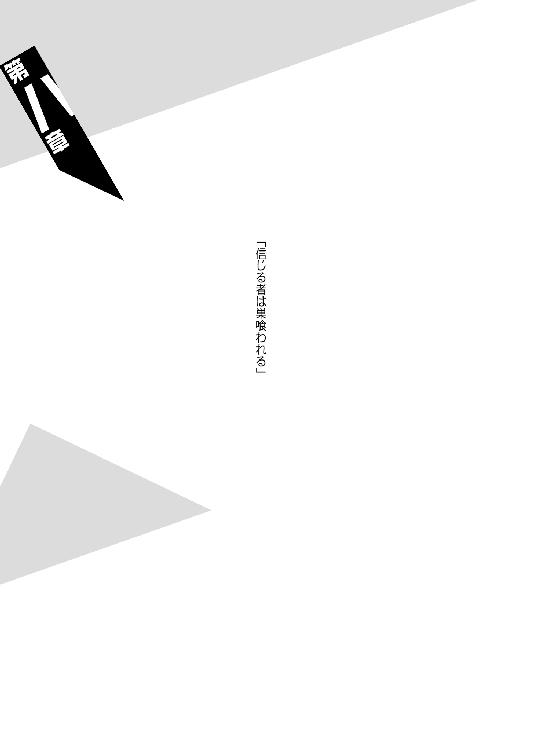
◆ ◆
僕はね、潤さん。
実はそれほど、死ぬのは怖くないんです。
曲がりなりにも。
それに引退したとは言っても、死神ですから。
昔からそうでした。
なんと言うんでしょうか、僕は感覚的に壊れていましてね。生まれたときから、台本を読むように生きているという感じでした。
だからこそ、僕はいー兄のことを尊敬しているというのがありますね──実際、僕よりも壊れた人間に会うのは、いー兄が初めてでしたから。
実際いー兄は魅力的でしたよ。
崩子はいー兄を主人に選びましたけれど──僕がもし純粋な闇口衆の人間だったなら、やっぱりいー兄を主人に選んだでしょう。
本当、いー兄には幸せになって欲しいものです。
本当にね。
だって──僕にとっては、いー兄やみー姉のほうが、自分よりも大切なんですよ。
僕は自分のことが大切に思えないんです。
そういう病気なんですよ。
僕にとって自分の人生は他人事で。
至極どうでもいいものでしたね。
殺す者はいずれ殺される。
傷つける者はいずれ傷つけられる。
僕はそう思うんですよ、潤さん。
だけど僕は本当のところ、殺されることも、傷つけられることも、怖くありません。
石凪調査室の人間なのだから、当然と言えば当然なんでしょうけれどね。
ただ。
僕は死ぬのは怖くないんですけれど。
別れるのが──怖いんです。
それが怖くて、僕は崩子には訊けないんです。
あの島で暮らして十年。
あの島を出て三年。
僕の都合で、僕のわがままで崩子を振り回して──十三年。
僕達兄妹は、果たして幸せだったのか。
僕の妹。
闇口崩子は──幸せだったのか。
◆ ◆
奇跡は起きない。
大抵の場合、バトルはオッズ通りに進行する。
零崎人識と石凪砥石の場合もそうだった。
ただし、この勝負に限って言うならば、相手が石凪砥石であったことはあまり大きな意味がない──人識はただの相性の問題で、現在、地に伏しているわけではない。
全身泥まみれになりながら。
うつ伏せになっているわけではない。
両手の怪我がなかったところで──同じタイムレコードで、同じ結果になっていたことだろう。
「最初はどこかで受けた怪我の後遺症でも残っているかと思ったんだけど──違うみたいだね。零崎人識くん、きみは元々そうなんだ」
一時期、奇妙な共同生活を送っていた医者。
ドクター、絵本園樹は──かつて人識のことを、そう診断した。
「身体を無茶に酷使し過ぎているんだよ。有り得ないほどにね。いっくんも相当自分の身体に構わないほうだけれど──考えてみればきみはいっくんより、更に過酷な世界で生きてきたんだ。そうなって当然なんだよ。当たり前のことが当たり前に起きただけのことだ」
人識は絵本のことが苦手だった。
どうしてあの闇医者のことが、あそこまで苦手だったのか──当時は人識はよくわかっていなかったが、今ならなんとなくわかる。
自分の身体を診察されるのが。
素直に嫌だったのだ。
「そう言えば、狐さんの話じゃあ、きみは零崎同士のハーフなんだったよね。殺人鬼同士の近親相姦によって生まれた殺人鬼──それって言いようだけれど、つまり元々、きみはプロのプレイヤー、『殺し名』序列三位の零崎一賊としての性質を──持ち合わせないってことなんじゃない？ きみは『殺し名』の皮をかぶった普通の人間で、殺人鬼の振りをした普通の人間──なのかもしれない」
考えてみれば奇行の目立つ、気弱な医者だった。
しかし──こと診療においては鋭かった。
人識相手に一歩も退かなかったし、どころか向こうから追い回してくるほどの勢いだった。
「考えてみれば、狐さんが興味を持つのはいつだってそういう存在なんだよね──たとえば澄百合学園において一切の戦闘スキルを有しないままに陣頭指揮を執っていた萩原子荻しかり、たった一人の個人的な庶民でありながら玖渚機関相手に一歩も退かず対等に渡り合ったいっくんしかり、巨大な存在を相手に裏切りに裏切りを繰り返した臆病者としての宴九段さんしかり──十三階段において普通であり続けた、十二代目古槍頭巾ちゃんしかり。集団の中において飛び抜けない、それでいてずば抜けた存在が──狐さんは好きなんだよね」
（は──ふざけんな）
（そんなこと知るか）
そう答えた、ように思う。
主張したと思う。
（確かに俺は他の零崎一賊の連中とは生まれが違うが、そんなことで連中に引け目を感じたことなんか一度もねえよ）
（プロのプレイヤーとして）
（出夢とも玉藻ともジグザグとも──）
（対等に渡り合ってきた）
「だからこそだよ。きみには才能があったと思う。本能があったと思う。性能があったと思う。効能があったと思う。だからこそ今まで、裏の世界で生きてこられた。だけどさ──裏の世界ならぬ闇の世界で生きてきた闇医者として言わせてもらえるならさ、それは才能があり、本能があり、性能があり、効能があっただけでさ......それは単に誰もがそうであるように、きみが周囲に合わせて生きてきただけだと思うんだ」
（かはは──なんだよ、それ）
（それじゃあまるで、俺は醜いアヒルの子じゃねえか）
（それともカッコウか何かか？ カッコウは他の鳥の巣に自分の卵を紛れ込ませるっつーよな。托卵っつーんだっけ？）
実際は、そこまでに流暢に反論しなかったような気もする。案外、がたがた震えながらの、目一杯の反論だったかもしれない。
大袈裟でなくそれくらい、人識は絵本に苦手意識を持っていた──それは彼にしてみれば、生まれて初めてと言っていいほどに、珍しいことだった。
「そのもの、なんじゃないかな。勝手なことを言わせてもらえば、きみは相当の違和感を感じながら生きてきたはずだよ？ 周囲の誰も理解できず、周囲の誰からも理解されず、生きてきたはずだよ？」
（アホか、そんなことあるか）
（あと違和感を感じるって、感じるがかぶってんじゃねーか。大人なんだから言葉くらいちゃんと使えや）
即座に否定したり、細かい揚げ足を取ってみたりしたのは、勿論、図星を言い当てられた気まずさからだった。
「きみには殺意はあっても殺人衝動はない。それはきみが零崎であって零崎でないから。だから哀川潤さんとの『もう人を殺さない』なんて約束を守り続けることができるんだよね」
（ちっ──見てきたように言いやがる）
（約束を守ってるのは、俺がいい子だからに決まってんじゃねえか）
「そうかな？ きみが本当に零崎なら──高海ちゃんや深空ちゃんは、もう殺されていてしかるべきなんだけれど」
（............）
（............）
「二重生活を送ってたんでしょう？ 普通の中学生、汀目俊希として──そして殺人鬼、零崎人識として。そのどちらとしても、きみは大いに破綻していたんだ。高海ちゃんや深空ちゃんを相手に、人識くんは『兄貴以外を家族と思っちゃいない』って、よく言ってるよね──あれって、つまりはそういう意味なんじゃない？ きみだって無意識のところではわかってるんじゃない？」
（......だとしたら）
（だとしたら──どうしたってんだ）
「いや──本当のことを言うと、闇医者としてはね、そのあたりの事情に興味はないんだ。狐さんならわかんないけど、闇医者の目的は怪我を治すことだけなんだから」
（かっ──勝手なことを言ったり本当のことを言ったり、忙しい奴だな）
（そろそろ優しいことを言ってくれよ）
「それは言えないな。だってそんなの──何の気休めにもなりはしない。きみは怪我をしているのでも、後遺症が残っているのでもない。ただ、寿命が近いだけなんだ」
（寿命──だと？）
「そう。金属疲労のように──肉体に限界が来ている。精神に肉体がついていってない。通常のプレイヤーよりずっと早く。勿論、誰にだって平等に死は訪れるけれど──きみはプレイヤーとしてはとても例外的なことに、誰かに殺されて死ぬんじゃなくて、大往生で死ぬんだろうね──殺されるんじゃなくて、寿命で死ぬんだろうね」
悲しげに、絵本は言った。
泣きそうな表情だった。
いや──ひょっとすると泣いていたかもしれない。
絵本園樹は。
そういう医者だった。
聞いてみれば、治療が間に合わず、匂宮出夢が死んだときも──絵本はそんな顔をしていたということだ。
「闇医者として──いや、一人の医者として、言わせてもらうよ」
（......ああ？）
（勝手なことをか？ 本当のことをか？）
「その両方。きみは、もう戦わないほうがいい。零崎一賊ももう全滅したんだから。それがきみのための──ホスピス治療だ。よりよく長生きするための、終末医療だよ」
（............）
（............）
「間違っても──安楽死なんて望まないで。一概にそれを否定するつもりはないけれど──これまで散々人を殺してきたきみに、安楽死だけは許されないと思うんだ」
（............）
（............）
............。
..................。
回想してみれば。
寿命で死ぬということは天寿を全うするということであり──つまり運命で死ぬということであり、ならばこうして。
死神に負けたことは。
結果、あの医者の言う通りになったということなのかもしれない──
「バンダナの裏に──闇口衆の印章はないようだね。つまりきみはチームリーダーじゃなかったということか。無駄手間だったな」
うつ伏せに倒れた人識のズボンのポケットから零れ落ちたそれを遠目に見て──デスサイスをくるりと回転させ、石凪砥石は言った。
泥まみれになっている人識に対し、砥石は服が多少汚れている程度だ。デスサイスも綺麗なものだった──殺しがルールで禁じられているので、処刑鎌による砥石の攻撃は、全て峰打ちで行われたのである。
そこまで加減をされて、尚負けた。
一発も殴ることができないまま、負けた。
（いや──）
（──戦い切れなかったって感じか）
戦わないほうがいいという、絵本の言葉に従ったわけでは断じてない。大体人識は、そんな言葉は今の今まで忘れていた。
ただ。
自分の身体に、どうやら限界が来ていることだけは──忘れるまでもなく、わかっていた。
絵本の言うことがどこまで正しかったのかはわからない。
それでも、事実として──今まで人識が、『殺し名』や『呪い名』が支配する世界において、決して余裕でも楽勝でもなく、騙し騙し生きてきたということはある。
だから。
（俺はもう、この辺までなのかもしれない──）
という気持ちはある。
強くある。
ナイフを全て失った。
怪我の有無にかかわらず、曲絃糸も──もう殺人技としては使えない。
禁じられるまでもなく。
もう人識には──人を殺せないのかもしれない。
（せめて伊織ちゃんがちゃんとやっていけるようになるまでは、見ててやるつもりだったんだけどな──）
兄貴から頼まれてたし。
（──まあいいや）
（どうでもいいや）
とりあえず、運よく──運命よく、ルールに守られてここでは死なずには済んだみたいだし、このまま起き上がれない振りをして、ここはやり過ごすとしよう。
絵本も言ってたじゃねえか。
ホスピス治療だか終末医療だか。
医者の言うことは聞いておこう。
よりよく長生きしねーと。
「さて、と──それじゃ、そのバンダナを拾って......次は、そうだな、崩子ちゃんを捜死に行くとするか。我樹丸様や憑依様は、きっとあの子のことは無視死続けているはずだから──彼女がチームリーダーだった場合、負けて死まう死ね」
そう言ったところで、
「いや」
と、砥石は自分の言葉に、自分で首を振った。
「崩子ちゃんは後回死に死ても間に合うだろう──それよりも無桐伊織だな。死神と死ての価値観では、ああいうプレイヤーは意外とミラクルを巻き起こす。憑依様が油断するとは思わないけれど、実力差があり過ぎる場合っていうのは、どんでん返死もありうるんだ。まかり間違って憑依様が殺されるようなことになれば大ごとだ──」
その場合はゲームのルールを無視死てでも無桐伊織を止めないと──と言いながら、砥石が一歩一歩、自分のほうへと近付いてくるのを受けて。
仕方なく。
嫌々。
うんざりしながら。
心底鬱陶しく。
どうしようもなくって──零崎人識はうつ伏せの姿勢から、立ち上がった。
仕方なく、嫌々、うんざりしながら、心底鬱陶しく、どうしようもなく──しかし、迷いなく。
「......独り言がうるせえんだよ、ボケ──俺もそうだが、お前もな。伊織ちゃんのところに向かうとか......ルールを無視してでもとか......聞こえるように言うんじゃねえ」
「............」
砥石は足を止めた。
そして人識を冷めた目で見る。
「ホスピス治療？ 終末医療？ うるせえ、そんなの知るか変態医者。俺は俺なりのクオリティ・オブ・ライフを優先させてもらうぜ。俺はな──どーでもいいもんのために命を張る奴なんだよ」
無茶してやる。
苦茶してやる。
「殺して解して並べて揃えて──晒してやんよ」
「わからないな──人識くん。そんな風に脅死たって無駄だって言ったはずだよ？ それがどう死て伝わらない。零崎一賊は、もう怖くないんだ。ちっとも、まるっきり怖くないんだ。きみは今、無桐伊織のために立ち上がったんだろう？ だけどきみは一人だ。殺人鬼集団じゃない、孤独な殺人鬼だ。それでは僕を打破できない」
「............」
「集団と死ての零崎一賊の序列は、確かに三位だが──個人のプレイヤーと死ての殺人鬼は、『殺し名』どころかその分家にも劣る。ただの孤独な殺人鬼は、ただの無力な殺人鬼だ」
「......孤独な殺人鬼、孤独の殺人鬼って、あんま繰り返して勝手言うなよ」
確かになあ、と人識は言う。
無理に笑って──言う。
「確かに俺は、兄貴以外を家族だなんて認めてなかったし、伊織ちゃんのことだって何度見捨てようと思ったかわかったもんじゃねーよ。大将には嫌われてるみたいだったし、曲識のにーちゃんは意味不明だった。他の殺人鬼の連中だって似たり寄ったりだ、理解できねーし理解されねーし、本っ当もう、うざくてしょうがなかったさ。だけどなあ」
ずる、と。
最早キックステップもできず、零崎人識は、泥に足を取られそうになりながら──砥石のところまで、一足で跳んだ。
「だけどなあ！ 俺は自分を孤独だと思ったことなんか、一度もねえよ！」
いつだって！
あいつらは俺のそばにいてくれたんだよ！
今だって！
「兄貴から受け継いだ家族愛！」
死神の鎌をかいくぐり。
鋭い鋏のようにかいくぐり。
人識のこぶしが石凪砥石の顔面を、初めて捉える。
「がっ──っ」
そのダメージは、肉体よりもむしろ精神のほうに響いただろう。
かつていない。
死の神。
死神を、生身のこぶしで殴った者など、石凪調査室の長き歴史を紐解いたところで一人もいない──いるはずもない。
そんなことは物理的に不可能だ。
何がその不可能を可能にしたのか。
砥石にわかるわけがないのだから。
「大将お得意、根・性・論！」
だから続けざまに繰り出された、打ち下ろすような反対側からの鉄槌も──あたかも振り下ろされる釘バットのようなその一撃も、砥石にはかわせなかった。
デスサイスでそれを防ごうとも試みたが。
その処刑鎌は。
まるでそれ自体が固有の意志を持って人識の攻撃を避けたかのように──人識の腕を、刃でも峰でも、捉えることはなかった。
それは本当に、テクニックも何もない、ただの膨大な暴力でしかなかった。
家族愛であり。
根性論でしかなかった。
そんなものに──その程度のものに。
石凪砥石は叩き伏せられた。
叩き潰された。
「ぐ、あ──あ、あ、あ、あ、あ」
わけのわからない呟きが、まるで壊れた楽器のように、砥石の口から漏れ出る。
圧倒的だったはずの。
圧迫的だったはずの。
そんな状況が、ただの二発で──引っ繰り返された。
それが信じられないようで、砥石は啞然とした表情をしていた。勿論、それは人識としても同じだ──あんな一直線な攻撃が、まさか当たるとは思わなかった。
しかし。
一方で人識は、納得もしていた。
これは奇跡などではなく。
ただの順当な結果なのだと──納得し。
「かはは──なるほどな」
と。
同時に零崎双識や零崎曲識の強さの理由についても、納得していた。
「連中、こんなモチベーションで戦ってやがったのかよ──道理でぶっ殺せねえわけだ。......つーか、澪標姉妹からの可愛らしい質問には、これからは俺も答えられそうじゃねーか」
寿命は更に縮まっただろうけどな。
俺はミサミサか、と言いながら、人識は──まずは砥石が取り落とした水玉模様のデスサイスを拾い上げ、続けて、砥石との戦闘中にズボンのポケットから落ちた無印の布きれを拾い上げた。
「ん？ こうしてデスサイスを俺が回収しちまった以上、この大厄ゲームをこれ以上続ける意味なんかねーんじゃねーか？ ......まあいいか。とりあえず、伊織ちゃんだか崩子ちゃんだかでも助けに行くか──曲識のにーちゃんよろしくの、ロリコン精神だ」
言って、人識は地図を確認する。
しかしよくわからなかったらしく、すぐに折り畳んでしまった。
「おい砥石、お前はこのままここで寝てろよ。ゲームが終わったら、ちゃんと迎えに来てやっからさ」
「ま──待て」
休もうともせず、不似合いなデスサイスをスティック代わりにトレッキングを続けようとする人識の背中を、砥石は呼び止める。
ん、と振り返る人識。
砥石は、弱々しい声で──かろうじて言う。
「きみは......僕をこ、殺さないのか」
「殺さねーよ。ルール違反だし、哀川潤との約束もあるし」
「......殺人鬼の癖に......なんで」
「お前こそ死神の癖になんでそこまで殺意振り撒いてんだよ、わっけわかんねー。......いや、なんかわかったわ。お前さあ、初対面のときからどうしてかむかついてたんだけど──なんかわかったわ。お前、昔の俺にそっくりだよ。あの戯言遣いとは違う意味で──そっくりだ。あいつが鏡なら──お前は写真だ」
「............」
「お前に使われる形容詞は、全部、ちょっと前までの俺に使える形容詞だったんだ。だけど、もしも今の俺がそんなお前と違っちゃってんだとしたら──それは伊織ちゃんのお陰なんだよ」
ったくよお。
伊織ちゃんからは、俺は何を教えてもらってるのかねえ──と笑い。
軽く手を振って、零崎人識は石凪砥石の視界から消えていった。
「............」
砥石は。
死神、石凪砥石はそれでも──その姿が捉えられなくなっても、ぼんやりとしたうつろな目で、人識の去っていった方向を見続ける。
たとえその姿が捉えられなくなっても、彼の背中に貼り付く死の影だけは、どうしようもなく見え続けているとでも言いたげに。
「......あんな生き様じゃあどうせ長生きはできないだろうけれど、死か死、それでもあれが生きている限りは零崎一賊も健在ってことになるのかな、まあ──」
◆ ◆
奇跡は起きない。
大抵の場合、バトルはオッズ通りに進行する。
無桐伊織と闇口憑依の場合もそうだった。
......少なくとも、最初の一分だけは。
「■■■■──■■■■■■■■■■■■■■■■■■■■■■■■■■■■■■■■■■■■■■■■■■■■■■■■■■■■■■■■■■■■■■■■■■■■■■■■■■■■■■■■■■■■■■■■■■■■■■■■■■──！！！！！！！！！！」
「な、何なんですか......一体っ！」
かつてない混乱の極みにありながらも、伊織が口に銜えた『自殺志願』の刃先を、憑依は紙一重でかわす──それは闇口衆で長年生きてきた、少なくとも崩子が言うところの『殺し名』の平均寿命よりは長生きしている闇口憑依の、さすがの戦闘経験ではあったが──ただし、伊織の攻撃はそれで終わるわけもない。
『自殺志願』での攻撃はまだまだ続く。
憑依が武器として使用していた鉄扇は、とっくの昔に、防御した際にどこかに吹っ飛んでいってしまった。
「■■■■──■■■■■■■■■■■■■■■■■■■■■■■■■■■■■■■■■■■■■■■■■■■■■■■■■■■■■■■■■■■■■■■■■■■■■■■■■■■■■■■■■■■■■■■■─────────────────────！！！！！！！！！！！！」
人の死のように、意味不明の音を咆哮しながら。
無桐伊織は追撃してくる。
大厄ゲームのルール上では伊織は逃げる側のチームなのに、そんなことに委細構わず、かわす憑依を追撃してくる。
（う、うううう──）
（わ──若い）
否。
この場合若さは意味がない。
「■■■■■■■■■■■■■■■■■■■■■■■■■■■■■■■■■■■■■■■■■■■■■■■■■──■■■■■■■──■■■■■■■■■■■■■■■■■■■■■■■■■■■■■■■■！！！！！！！！！！！！！！！！！！！！！！！！！！」
「ぜ、零崎──いちぞく──！」
憑依は、額を流れる汗を──自覚した。
それは疲労で流れる汗ではなく。
冷や汗だった。
「──むとう、いおり──」
最初の一分。
少なくとも最初の一分は、実に順当にバトルは進行した。
伊織はまるで経験不足の殺人鬼だったし、憑依の相手にはならなかった。口に銜えた大鋏にのみ注意していれば、それでよかった。
予告した通りに、憑依はまず、伊織の両手を切断した──果物のように、両手を捥いだ。と言っても、伊織の両手は義手だから、ほとんど出血はしなかったが。
しかしその衝撃は大きかったらしく、伊織は明らかに動揺した──動揺させ、降参させることが目的だったのだから、それで順当だ。
大事な身体である。
憑依の伴侶にとって──大事な母体である。
手足の切断までは許されているとは言え、出血多量で死なれても困る。できる限り、彼女自身は無傷で済ませたかったのだ。
ただし、そんな憑依の心理は見抜かれていた。
だから伊織は、動揺はしても降参はしなかった──ならば仕方がない。
最低限の暴力を行使するまでだった。
憑依は足払いで伊織を地面に倒し、身動きを封じた──そして彼女の全身をまさぐった。
「や、やあん！ えろい！ 手つきがえろえろです！」
伊織は抵抗しようとしたが、無駄である。伊織を拘束するのに、憑依はロープも手錠も要しない──ただ力ずくで押さえつければ、それで済む。まして伊織は、今両手を無くしているのだから。
「アロエです！」
そんな言葉の意味はわからなかったけれど。
勿論、憑依が伊織の全身をまさぐったのは彼女がえろいからでもアロエだからでもなく、兎組（鬼組）のメンバーとして伊織が所持しているはずのバンダナを探すためだ──どこかに隠しているはずなのだ。
そしてそれは、すぐに見つかった。
大体、隠す場所などそうはないのである。まず憑依は伊織のズボンを脱がして『自殺志願』のホルスターを調べてみたが、そこは白だった。しかし続けて調べた如何にも怪しいニット帽の中にこそ、伊織はバンダナを隠していたのである。
実に浅はかだった。
「ふむ──印章はありませんね。やはりあなたはチームリーダーではなかったのですか。では、これであなたはリタイアということです──さて、死色の真紅は我樹丸さんに任せるとして、わたくしは零崎人識を──」
そこまで喋ったのは憶えている。
逆に言えば──喋れたのはそこまでだった。
「■■■■■■■■■■■■■■■■■■■■■■■■■■■■■■■■■■■■■■■■■■■■■■■■■■■■■■■■■■■■■■■■■■■■■────────────！！！！！！！！！！！！」
と、叫んで。
無桐伊織は──自分の背中に乗っていた憑依を、背筋力だけで撥ね飛ばした。そのまま杉の木で身体を強く打って、一瞬戸惑った憑依ではあったが、すぐに伊織へと視線を戻した──そしてすぐに戻したことを後悔した。
ぞっとした。
その塊のような殺意に、ぞっとした。
左右の義手を捥がれ、ズボンを剝かれ、ニット帽を剝がされ、身体を泥で汚された無桐伊織は──それでも、口に銜えた『自殺志願』を離していなかった。
その表情は──まさしく鬼のようだった。
殺人鬼。
零崎一賊の最後のひとり。
マインドレンデルの──後継者。
「■■■■■■■──■■──■■■■■■■■■■■■■■──■■■■■■■■■■■■■■■■────────────────────────！！！！！！！！！！！！」
立ち上がった伊織が静止していた時間は、ほんの一秒にも満たなかっただろう──憑依が咄嗟に、殺意に圧された精神状態を持ち直すまでには、しかしそれは十分な時間ではあった。
そうでなければ。
憑依は伊織に殺されていただろう。
「■■■■■■■■■■■■■■■■■■■■■■■■■■■■■■■■────────────────！！！！」
そこから先、憑依は逃げ回るだけだった。
無桐伊織。
素人同然で、素人以下で、素人未満。
劣化素人。
プロのプレイヤーと評することさえ、本来は間違っているような彼女に、闇口憑依は追い詰められていた。
（に──ニット帽）
（ニット帽を剝いだだけで、ここまで暴走するなんて──）
いや。
そんなわけはないのだが。
しかし、憑依がそういった的外れな誤解をするのも無理からぬことではあった──そうとでも考えない限り、今の伊織の暴走モードに、何の説明もつかないからだ。
知るよしもない、憑依にとっては。
人識とは違い、スタンダードな零崎でありながら、つまりは人並み──殺人鬼並みの殺意と殺人衝動を有しながら、およそ半年にわたって、無桐伊織が不殺を貫いていることなど知るよしもない憑依にとっては──何の説明もつかないからだ。
噓である。
当然のことながら、噓である。
人識からの質問に対して、何の心配もいらない、殺人衝動なんて溜まっていないと──そう言っていたのは、噓である。
心配をかけまいとしたわけではない。
強いて言うなら、彼女は見栄を張ったのだ──意地を張ったのだ。
人識に対して、引け目を持ちたくなかったのだ。
彼に甘えたくなかった。
好意で言ってくれているのはわかっていたが──その好意に甘えることは、ぎりぎりの限界まで、してはいけないような気がしていた。
伊織はマインドレンデルの妹として、マインドレンデルの弟である人識とは、対等な関係でいたかったのだ。
それが。
零崎人識と無桐伊織との──人間関係。
「■■■■■■■■■■■■■■■■■■■■■■■■■■■■■■■■■■■■■■■■■■■■■■■■■■■■■■■■■■■■■■■■■■■■■■■■■──────！！！！！！！！！！！！！！」
ともあれ、今。
およそ半年分、溜まりに溜まった殺人衝動が溢れ出て──零崎人識や石凪砥石なんてものではないレベルに溢れ出て。
暴走していた。
ニット帽は関係ない。
ただ──追い詰められて、堰を切っただけ。
リミッターが切れ。
ブレーカーが落ちただけ。
人識のところに向かおうという憑依の言葉を受けて──まさしく、伊織のところに向かおうという砥石の言葉を受けて人識が立ち上がったように──切れただけのことだ。
「■■■■■■■■■■■■！！！！！！！！」
零崎双識の後継者。
二十人目の地獄が最後に発掘した才能。
殺人鬼が愛した殺人鬼。
「■■■■■■■■■■■■■！！！！！！！！」
それが──
ソレが、キャリアを無視し、戦闘経験を無視し、年月も歳月も無視し、大厄島首領代行、闇口憑依を追い詰めていた。
技術的な話ではなく、迫力の問題。
実際いくら闇口衆と言えど、パンツ丸出しで鋏を銜えた女子が目を暗く輝かせて襲ってくるなんて、わけのわからない体験をしたことなどあるわけもない。
技術ではなく、ただ、彼女のありように。
闇口憑依は戦慄する。
「こ、これが噂に聞く──ヤンデレ！」
違う。
残念ながら年齢や暮らしの問題があり、憑依は世間の流行にはやや疎かった。
しかし、違ったところで、状況は改善されない。
全身が不随意筋のように動き、人を殺そうとする暴走者など──どの道闇口憑依にとっては想定外の存在なのである。
「く、うぅ──」
伊織が駆けるたび、地面が抉れる。
木が折れ、岩が砕ける。
ここが闇口衆の拠点でさえなければ世界遺産に指定されてもおかしくないような大自然が、元女子高生によって蹂躙されつつあった。
暴走モードであるがゆえにその攻撃は直線的で、だからこそすんでのところでそれを憑依は避け続けることができているが──闇口憑依の固有スキル『空蟬』を使用して避け続けられているが──しかし、それだけでは憑依にとってあまりよい状況とは言えなかった。
そもそも『空蟬』は戦闘スキルではない。
強いて言うなら『十三階段』の一人、一里塚木の実の使う空間製作にこそ近い、珠玉のテクニックなのである。
だから。
「若い──」
既に『殺し名』としての全盛期を過ぎている憑依と、ルーキーとは言えぴちぴちの十七歳、しかも自らの身体を顧みない暴走モードの伊織とでは、さすがに単純な体力値においては、伊織のほうに分があった。
それはその通り──若いのだ。
「......五年前の哀川潤を......思い出し......」
あのときの哀川潤も──十代だったか。
そんなこと、今はどうでもいいが。
「■■■■■■■■■■■■■──■■■■■■■■■■──■■■■■■■■■■──■■■■■■■■■■■■■■■■■■■■！！！！！！！！！！」
逃げ回るのにも、とうとう限界がきた。
そもそも大厄ゲームという視点で見るなら、既に印章なきバンダナを奪われた伊織はリタイアしなければならないのだから、こうして彼女が憑依に向かってくるのはルール違反もいいところだ。
しかしそんなルール違反を指弾したところで、今の伊織が聞く耳を持つわけがない。
ルールなど、ゲームなど、今の伊織には無意味だ──彼女にあるのは、目の前にいる人間を殺そうとする、ただの衝動。
「■■■■■■■■■■■■■■──■■■■■■■■■■■■──■■■■■■■■■■■■■■■■■■──■■■■■■■■■──■■■■■■■■■■■■■■■■■──！！！！！！！！！！！！！！」
あ、駄目だわ、これ。
死んだわ。
闇口憑依はあっけなく諦めた。
彼女にとって無駄な抵抗は、無駄な労力でしかなかった。
まあこの子が暴走モードになったところで我樹丸さんの敵ではないでしょうし、あとのことは別に心配いりませんよね──わたくしの仕えるあのお方にしたところで、わたくしの死を気に病むことなどないでしょうし──と、何の心残りもなく、心置きなく諦めた。
（まあ──仕方ないか）
（報いって奴でしょう）
（弟が勝手にやったこととは言え──萌太はわたくしが殺したようなものなんだから──）
（崩子も、わたくしが）
（殺したようなもの──）
「ごめんなさいね、二人とも」
ほんの気まぐれで、大した誠意も込めず、憑依がそう呟いたとき。
ぴたり、と──無桐伊織の動きが止まった。
唐突に、『自殺志願』の刃先が憑依の喉元に突きつけられたところで──停止した。
「......いけません、いけません」
しばらくそのままの姿勢で固まったまま微動だにせず──当然その間、刃先が皮膚に接している憑依も身動きできない──しかしやがて、伊織はそう言って、
「うっかり間違って殺しちゃうところでした」
と──憑依から離れた。
口には『自殺志願』を銜えたままで、そしてこちらを向いて、はにかんでみせる。
「申し訳ありませんでした、憑依さん。わたしってゲームとか、割と熱くなっちゃうほうでして──うふふ」
「............」
先程までの暴走が噓だったかのように、照れくさそうにしてみせる伊織。それは憑依としては、余計に面食らってしまう振る舞いだった。
「危うく、我慢することから逃げちゃうところでした──うふふ。いけません、いけません。負けるのはいいけど逃げるのはいけません」
「殺さ......ないんですか」
これもまた、砥石が人識に問うたように。
憑依は伊織に問うた。
それに対し伊織は、茶化し癖お道化癖のある彼女のことである、この状況において、人識よりもふざけた答を返した。
「わたし、人識くんと不殺のチキンレースの最中でして。先に人を殺したほうがジュースをおごらなければならないんですよ」
「......は、はあ？」
「ふるふるシェイカーですよ」
「..................」
憑依は啞然となり、思わず、
「い、一体どういう関係なんですか──あなた達は」
そんなわかりきった質問をしてしまった。
伊織は得意げに、
「家族です。兄妹ですよ」
と言った。
（家族──）
（兄妹、か）
そうだった。
零崎一賊は──そうなのだった。
憑依は、自分の身体から力が抜けていくのを感じる──実際、命拾いしたことを差し引いても、脱力せざるを得なかった。
とてもじゃないが、このあと、大厄ゲームを続けられるようなコンディションではない。
疲れ切ってしまった。
実質的には、どうやら憑依と伊織との勝負は引き分けということになりそうだ──つまりは二人揃ってリタイアである。
「若い──ですね」
それでも憑依にもプライドはある。
せめて表情くらいはクールにとりなそうと澄ました顔をして、憑依が万感の思いを込めてそう言うと──しかし空気を読まない伊織は、
「ところで憑依さん。さっき誰かに謝ってませんでしたっけ？」
などと、どうでもいいことを訊いてきた。
憑依は答えた。
「いえ」
◆ ◆
奇跡は起きない。
大抵の場合、バトルはオッズ通りに進行する。
闇口崩子と六何我樹丸の場合もそうだった。
少なくとも、この日、地球上で行われた個人対個人の闘争において、最も過酷で最も凄惨な格差が、崩子と我樹丸の間には否定しようもない深き溝としてあったのだ。
崩子は我樹丸に片手で首元をつかまれ、樹木の幹に押し付けられていた──つま先はかろうじて地面に触れている程度だ。
サンダルは片方脱げていて、抜けるように白かったワンピースはわずかな塗り残しもなく、土気色に染まっている。
自分の首をつかむ我樹丸の手を何とか解こうと、十指をつかって爪を立てるが、それがまるで通じない──逆に崩子の爪が剝がれそうなくらいだった。
（悔しい──）
（悔しい、悔しい、悔しい──）
自分のあまりの無力さに、知らず涙がぼろぼろ転げ落ちた。泣くことでより一層惨めさは際立ったが、それでもその涙を止めることはできなかった。
「ふん。雑魚を殺さないように倒すというのは意外と難しいものじゃな──」
我樹丸は笑う──それはおよそ戦闘中に浮かべるような笑みではない。つまり我樹丸は、戦ってさえいないのだ。
蟻を踏み潰すことを戦いと呼ぶ人間がいないよう。
蚊を叩き潰すことを戦いと呼ぶ人間がいないよう。
崩子を蹂躙することを──
戦いなどとは、彼は思っていない。
「──まあ、貴様程度の挑発に乗った余が安かったわ。反省せねばな──憑依の口癖ではないが、やはり余はまだまだ若い」
「かっ......」
我樹丸の手に力が入る。
それだけで崩子の首は折れそうになった。
脆く──崩れやすい。
それが自分。
つかまれた首が痛い、押し付けられた背中が痛い、さっき叩きつけられた全身が痛い。
そして。
自分の弱さが、あまりに痛い。
「うっ......う、う、う、うううううーっ！」
崩子は唸る──精一杯唸る。
けれどそんなせめてもの抵抗さえも、六何我樹丸は許さなかった。崩子を更に吊り上げて、崩子を無理矢理に黙らせた。
「まあ──ゲームはゲームじゃ。余は早く哀川潤を追わねばならん。貴様程度に足を取られて敗北を喫するなどあってはならんことじゃしな。バンダナを出してもらおうか」
「............」
頑張って。
頑張って、頑張って、頑張って。
それでも崩子は我樹丸を睨もうとした──しかし涙が邪魔で、その顔を見ることすらできない。
（けれど、見えなくとも──感じる）
（この男の視線）
（見下すような──蔑視）
敵視は蔑視へと落ちた。
またそれは、無視へと戻るだろう。
（だけど──）
（そうなれば、死ななくて──済む）
（そのことにわたしは──安心しているのか？）
「まあ、いくら土地鑑があろうと貴様如きをチームリーダーに選ぶほど、死色の真紅も愚かではあるまい──じゃが、ちょろちょろされても鬱陶しいしの。貴様にはここでリタイアしてもらっておこう」
「............」
無駄な抵抗なんだろうなあ、と思う。
きっと闇口憑依なら、無駄な抵抗は無駄な労力だから──さっぱり諦めちゃうんだろうなあ、と思う。
バンダナどころか、命さえ諦めちゃうんだろうなあ、と思う。
思うけれど。
わたしは──妹だし。
「──うああああっ！」
崩子は我樹丸の手に立てていた爪を外し、素早くワンピースの内側からバンダナを取り出して──そのバンダナを引き裂こうとした。
そうすることでバンダナを守ろうとした。
しかし、やはり──無駄だった。
力一杯、両端から引張っても──生地が伸びきるだけで、綻びも起こらなかった。
スキルを失った崩子は。
布切れ一枚を破ることさえもできなかった。
布切れ一枚を守ることさえも。
できなかった。
「......ふん。退屈な真似をしおるわ」
首を持つのと反対側の手で、我樹丸は崩子の腹を殴った──否、実力差を考慮すれば、我樹丸にとっては優しく撫でたようなものだっただろうが。
しかし崩子にとっては身体を貫かれたようなものだ。
そのすさまじき衝撃に、崩子はバンダナから手を離してしまった。
ひらひらたなびいて、バンダナが地面に落ちる。
それでもう崩子には用なしとばかりに、我樹丸は彼女の首元から手を離した──何の気遣いもなく離した。支えを失った崩子は重力に従いそのまま背中を幹に擦られ、そしてどちゃりという音を立てて、木の根元で尻餅をつく。
惨めだった。
情けなかった。
悲しくて──やはり、悔しかった。
「やれやれ。予想通りじゃな。ただのバンダナじゃ──何の印章もない。やはり本命は哀川潤というわけか。これぞ予想通り、じゃからこそ盛り上がるというものじゃ──」
汚いものでも触るかのように、バンダナを拾い上げて、それを検分する我樹丸。
（あなたにそんな風にされる覚えはない──）
と、崩子は歯嚙みした。
汚いのは──どっちだ。
汚れているのは、誰だ。
「しかしそれにしても、娘」
我樹丸は崩子に呼びかけた。
（............）
（......娘）
そう言えば、我樹丸は一度も──崩子のことを、名前で呼んでいない。
どうせ。
我樹丸は崩子の名前など憶えていないのだろう。
きっと、萌太の名前も憶えていないに違いない。
そういう男なのだ。
「貴様らしいと言えば実に貴様らしい。偽物のバンダナを必死になって守るとは──確かにそういうのが貴様には向いておるよ。......かかか。まあ、あの濡衣に狙われながらも奇跡的に拾った命じゃ。精々大切に生きるがよいわ」
ん、とそこで我樹丸は、自分で放った言葉に対して首を振る。
「生きるも何も──そもそも貴様は死んだも同然じゃったの。まあよい。生ける屍も、それはそれで奇跡じゃろう」
「............」
（奇跡）
（奇跡は──起きない）
わたしは六何我樹丸には勝てない。
そして。
石凪萌太は生き返らない。
萌太の代わりなんていない。
（わたしが闇口濡衣......闇口衆大厄島首領、『隠身の濡衣』に狙われながらも、こうして無様に生きながらえていることも──だから、奇跡じゃないんだ）
ただの、萌太のお陰なんだ。
いつも通りの──萌太の過保護なんだ。
（あなたには──）
（そんなことも、わからないのか──）
「あなたは......」
崩子は言った。
もう立ち上がる気力も残っていない。
全身がどっしりと重く、今はもう、意識を失うまでの過程みたいなものだ──
「......あなたはどうして」
せめてもの時間稼ぎ。
そんなつもりさえなかった。
思いついた質問を──ただ投げかけただけだ。
「どうして......あのとき。三年前、この島に戻ってきたんですか」
「............」
答を期待していたわけではなく、当然、聞いてくれようとも思っていなかったが──我樹丸は沈黙をもって応じた。
言葉を続けることは許されたらしい。
彼にしてみれば大サービスだろう。
ありがたいことだ。
「あなたが帰ってこなければ──わたし達は、家出なんてしなかったのに」
だったら。
萌太も──わたしも。
死なずにすんだのに。
「知れたことよ。余の作品が──憑依の相棒として大活躍しておると聞いたのでな。その出来不出来を確認しておきたかったのじゃ──死神との間に作った子が、暗殺業に勤しんでおるというのも、なかなか興味深かったしのう」
「......そうですか」
そんな、ただの興味か。
趣味で作った子を、興味で確認しに来たか。
そんな手前勝手で──
わたしと萌太の人生を台無しにしたのか。
勝手に作って、勝手に殺して。
いい身分だな。
そういうのが──楽しいんですね。
まあ、そういう人間でもない限り、生涯無敗なんて保てないか──悔しかった。
闇口崩子という存在が。
石凪萌太という存在が。
六何我樹丸を素材としていることこそ──
悔しかった。
六何我樹丸なしでは自分達はこの世にありえなかったということが──この上なく、悔しかった。
「不満そうじゃの」
我樹丸は笑いながらそう言って、そして崩子に背を向けた。
大サービスは終わったらしい。
「じゃが、不満なのは余のほうじゃぞ。余に恐れをなして二人揃って逃亡するなど──惰弱にも程がある。全く、それでこの結晶皇帝の子供じゃというのだから情けない。あまりに情けなさ過ぎるゆえに余としては貴様達如き捨て置いてもよかったのじゃが、そのつもりじゃったが、こうなると濡衣の判断は正しかったと言わざるを得んな。死神のほうはともかく、貴様のような働きもせずに逃げ出した失敗作が世間に晒されるなど、父親として余の恥じゃ」
思いのほか居心地がよいので居ついてしまったが、しかしこうなるとこの島で暮らすのもそろそろ潮時かもの──と。
そう言い捨てて。
決別するように言い捨てて──我樹丸は去っていく。
もう崩子を振り向くわけもない。
彼の意識から崩子は外れ。
蔑視さえもされない、無視の対象と戻った。
だから。
「......は、はははは」
だから──崩子の口から乾いた笑いが漏れたのは、別に我樹丸に聞かせようと思ったからではない。
「は、は、は」
崩子は、意識もうつろなままに──笑う。
「ははははははははははははははははははははははははははははははははははははははははははははははははははははははははははははははははははは」
ははははははははははははははははははははははははははははははははははははははははははははははははははははははははははははははははははは。
壊れたように。
狂ったように笑う。
我樹丸は、聞こえてはならないはずのその笑い声に──振り向くわけもないのに、振り向いた。
再び、崩子に引き止められた。
しかしそんな我樹丸の姿さえ、崩子の意識には入ってこない。
今はただ、悔しくもなんともなく。
おかしかった。
面白かった。愉快だった。楽しかった。
「父親って」
実に──滑稽だった。
「あなた──六何我樹丸さん、あなた、ひょっとして、わたしの父親のつもりだったんですか？」
ははははは、と。
崩子は笑い続ける。
そして、わかった。
今、ようやくわかった。
哀川潤から訊かれていたこと。
どうして自分が──石凪萌太のことを、一度も兄と呼んだことがないのか。
「わたしのお父さんは、萌太だ」
闇口崩子は言った。
笑いを消して。
「お母さんも、萌太だ──お兄さんもお姉さんも、弟も妹も、お祖父ちゃんもお祖母ちゃんも──叔父さんも叔母さんも伯父さんも伯母さんも、従兄弟も再従兄弟も甥も姪も、全部、萌太がやってくれた」
どうしようもなく、悔しいのでも悲しいのでもなく泣きながら──崩子は叫んだ。
「この島で萌太だけが！ わたしの家族だったんだ！」
逃げますよ、崩子。
こんな島からは出ていきましょう。
あの男が帰ってきた以上、もう僕では崩子は守りきれません。
庇いきれません。
だから、逃げましょう。
時機としてもいい頃合です。
逃げて逃げて、どこまでも逃げて、そしてその先で──本当の家族を探しましょう。
きっとどこかにいるはずですよ。
血は繫がってなくとも心で繫がりあえる、そんな人達が──そういう人達と、一つ屋根の下で、いつまでも末永く。
幸せに暮らしましょう。
「そうだ──わたし達の人生は、あなたなんかに台無しにされていない」
萌太がわたしを連れ出してくれなければ。
みい姉さんとも、浮雲さんとも、伴天連のお爺さんとも、戯言遣いのお兄ちゃんとも、魔女のお姉さんとも、姫姉さまとも──誰とも、出会えなかったんだ。
家族みたいなあの人達と。
家族みたいに──過ごせなかった。
「わたし達兄妹は、幸せだった！」
失敗作なんかじゃないし！
失敗なんて──していない！
「萌太がいたから、幸せだった！」
それ以上は。
それ以上は、まるで言葉にならなかった。
そして、言葉にするまでもなかった。
石凪萌太と闇口崩子。
二人の関係は──もう言葉にするまでもない。
「......かっ。濡衣の無能め」
我樹丸は。
六何我樹丸は──酷く不愉快そうな顔をして、嚙んだものを吐き捨てるようにそう言って。
崩子のところへと、ゆっくりと近付いて来る。
「し損ねたな。何が『停止』させたじゃ──笑わせよるわ。首領の肩書きが泣くぞ」
湧き上がる不快感を隠そうともせず。
我樹丸は──笑う。
「崩子は、こうして立派に生きておるし」
そして彼は、言った。
崩子の名を口にして。
「萌太もまた──崩子の内で、立派に生きておるではないか」
萌太の名を──口にした。
意外に感じてしまったのがそのまま崩子の顔に出たのだろう、「なんじゃ」と、我樹丸は露骨に不愉快そうに、唇の端を吊り上げた。
「自分でつけた名じゃ。忘れるわけがなかろうが」
「............」
ああ、と言いかけて。
言いかけて、止めて。
止めた言葉を、崩子がまた言いかけたとき。
「んじゃ──」
と。
「──まあ、その辺で閉塞ってことにしよっか」
横合いから──そんな声がした。
崩子と我樹丸は同時に、声のしたその方向へと首を向けた──勿論、声を聞いた段階で、そこにいるのが誰かなんてことはわかっていたが。
いつからそこにいたのかはともかく、そこに死色の真紅──人類最強の請負人がいることはわかっていたが。
しかしそれでも面食らった。
驚きを禁じえなかった。
「......あたしももう......こんな感じだしさ」
かろうじて苦笑いを浮かべた。
全身ズタボロ、泥まみれなんてものではなく、服も隙間なく破れに破れ、髪の毛のセットも乱れに乱れた哀川潤の姿が──そこにあった。
至るところに擦過傷があり、少なからず出血もしていて。
片腕片脚が、明らかに骨折していた。
剝離骨折どころではなく、完全骨折である。
顔も無残に腫れ上がっていて、片目が塞がっている有様だった──生え揃ったという歯も、大半は欠けてしまっているだろう。
「な、何があったんですか」
崩子は率直に訊いてしまった。
てっきり（『ご主人様』から聞いていたように）格好良く、崩子を助けるために颯爽と登場したのだとばかり思ったのに、さすが人類最強の請負人は出番を心得ているとさえ思ったのに、何故か彼女はもう既に満身創痍だった。
一割どころか、もうその半分の力も残ってそうに見えない。
誰かにやられたのか？
しかし『誰か』なんて、そんな個人と戦った結果の姿だとは、とても見えない──まるで第三次世界大戦の帰りのような姿だった。
いや、しかし、憑依を相手取るにしても砥石を相手取るにしても、哀川潤がここまで追い詰められるとは思えない──
「あー。ちょっくら子守してて。ガキ寝かしつけんのにてこずってたんだ」
大して説明する気もないらしく、哀川潤はどうでもよさそうにそう言って、ずるずると、両脚を引きずるようにして。
それでも崩子と我樹丸の間に割り込んで。
昨日人識がそうしたように。
ずっと萌太がそうしていたように。
崩子を庇うように、壁になった。
「......はー、あ」
もっとも、壁になった直後、彼女はすぐにその場に座り込んでしまったけれど。
もう立ってもいられないらしい。
「わり、我樹丸。降参」
そして哀川潤はさらりと言った。
顔の前で片手を立て。
「パワー使い切っちまった。今のあたしは消費税より安い」
そう言って彼女は髪をポニーテイル風にまとめていたバンダナを解き、それを我樹丸のほうへと投げた。
それによって哀川潤の髪型が更に乱れる。
「あたしとお前との個人的な勝負は、お前の勝ちでいーわ」
「な──」
我樹丸が、さすがに戸惑った顔を浮かべるのにも構わず、哀川潤は気持ちのいい笑みを浮かべて、
「すげーな、お前。生涯無敗は伊達じゃねーじゃん」
と言った。
「なかなか面白かった。またやろーぜ」
「......き──貴様」
更に、何を言っていいかわからなくなったのだろう──我樹丸は投げられたバンダナを拾い上げることも忘れ、ただ呆然となって、哀川潤を見下ろしていた。
「い、いいんですか、哀川さん──」
崩子の問いかけに、
「あー？」
と、哀川潤は面倒そうに振り向く。
「なんだよ、崩子ちゃん。今のあたしにあんま喋らせんじゃねーよ。なんかあと一個でもイベントがあったらあたし、それで一騎減っちゃうぞ」
「げ、ゲーム脳」
口調は冗談めいているが、しかし実際、振り向くというそれだけの動作でも、負担になるようだ。
実際今の哀川潤は、ちょっとした段差で転んだだけで死んでしまいそうである。
一体何があればこんなことになるのだろう。
まさかそれが自分の『ファンクラブ』のメンバーが仕出かした結果であるとは露知らず、そんなことを夢にも思うわけがなく、崩子は言う。
「──ほら、えっと......」
子作りのこととか、とは言い辛かった。
だから崩子は、
「......その、萌太のデスサイスのこととか──」
と、やや遠回しにアプローチする。
「──あの処刑鎌を回収するために、あなたはこの島まで来たんでしょう？」
「え？ ああ、あれ噓。信じてたのか？」
悪びれもせず、哀川潤は首を振った。
そしてそのまま、崩子にも笑ってみせる。
見えた歯は、やはり何本か折れていた。
それでいて、実に見栄えのする──屈託のない笑顔だった。
「う──噓？」
噓は。
滅多なことでは──つかないはずでは。
「デスサイスはどっちかっつーとついでだよ。萌太くんからの依頼はさ、自分がいなくなっても崩子ちゃんが一人立ちできるよう、実家の連中と正面から向き合わせてくれってことだったから」
「え......」
「三年前、向き合わせずに逃げさしちゃったこと。随分と気にしてたみてーだぜ」
「......逃げさしたって」
逃げますよ、崩子。
そう言って──萌太は崩子を誘った。
この島から連れ出した。
「気にしてたって......言うんですか。それを。そんなことを。そんな些細な──ことを」
わたしのためを思って──やってくれたことなのに。
本当。
どこまで過保護なんだろう──あの兄は。
死んだ後も、わたしのことを思ってくれるのか。
いつまでも──どこまでも。
いつでも、どこでも。
なるほど、我樹丸の言う通りだ。
石凪萌太は──今も崩子の内で、生きている。
「だから本当は、崩子ちゃんをこの島に連れてきた時点で、あたしの仕事は半分以上終わってたんだよ。大厄ゲームやらは言うなればおまけだ。くくく、まあ逃げた逃げない問題に関しちゃ伊織ちゃんのほうが崩子ちゃんより先輩だからな。あとで話聞いとけよ」
哀川潤は言う。
「生涯無敗のパパ相手にあれだけ吼えれりゃ上等だろ。その時点であたしの仕事はほとんど完了だ。くくく、辛い思いさせちまったな、崩子ちゃん。ごめんごめん。お詫びに今度、伊織ちゃん誘って零崎くんハブって、女子三人でつるんで、あたしの奢りでテニミュを見に行こうぜ」
「............」
そんな風に、いかにも気軽に誘われて。
崩子は笑った。
さっき、あれだけ声高らかに笑ったにもかかわらず──萌太が死んでから。
初めて笑うことができたような気がした。
「崩子」
ようやく哀川潤の投げたバンダナを拾い上げ、その裏地を確認してから──六何我樹丸は、崩子を見ないまま、静かに言った。
「昨日からロクに何も食っておらんじゃろう。折角戻ったのじゃ。憑依に何か作らせよう──帰る前に飯くらいは食べていくがよい」
「......はい。肉でなければ」
そうだ。
崩子にとって大厄島は、戻る場所であり、帰る場所ではない。
闇口崩子の帰る場所は、京都の町で建て直されている最中の──石凪萌太と暮らした、あの骨董アパートだけなのだった。
◆ ◆
「あ、そっか。大厄ゲームの大厄って単なる島の名前のことじゃなくて、ひょっとしたらチームリーダーの『大役』って意味とかかってんのかもな」
零崎人識はそんな風に、あっているのか間違っているのか定かではない、どちらにしても別に答合わせをするつもりもないような推理を、性懲りもなく独り言で呟きながら──裏地に刺繡の入ったバンダナをひらつかせつつ、そしてゲーム開始から二時間半後、六十世紀杉へと到達した。
六十世紀杉。
樹高約二十五メートル、胸高周囲約十七メートル。
人工物のような巨大さはかなり非現実的ではあったが、しかし、人間には何千年かけようがこんなもんは作れないだろうなあと、目前に現れたそれに人識はそんな感想を持った。
標高二千メートル近い高度と来ている。
いくら亜熱帯気候的な大厄島と言っても、この高さまで来れば、さすがに北国と何ら変わらない温度だった。
「あーあ。伊織ちゃん探してたら、うっかりゴールしちまった。俺の方向感覚も案外当てになんねーな」
言いながら人識は軽く身震いし、
「しかしまあ──どう考えても柄じゃねーんだよな、チームリーダーなんざ」
と、ひらつかせていたバンダナを片手で折り畳み、ポケットへと仕舞い直した。
「そんな重要な役目を俺みてーないい加減な野郎に任すなっての」
提案者は哀川潤だった。
およそ彼女の論旨はこんな感じ。
「こんなん誰がリーダーやったっておんなじだろ。零崎くん、お前やれよ。遊馬から聞いてんぜ。お前、竹取山でもゴールすんの一等賞だったんだろ？」
...............。
そんなの全然理由になっていないし、今から考えれば、ひょっとしたら面倒なロールを押し付けられただけだったのかもしれない。
「まあチームリーダーなんかやってたら、人類最強も暢気に生涯無敗とバトってらんねーだろうからな。......けど、俺だってチームリーダーなんかやってなきゃ、あの死神相手に、あそこまで苦戦してねーんだよ」
守りながらの戦いは、本当は俺向きじゃねーんだよな──と負け惜しみのようなことを言いつつ、ストック代わりに使っていた水玉模様のデスサイスを、今度は傘代わりにするように掲げ（勿論処刑鎌が傘代わりになどなるわけがないが）、人識は別のポケットから、今度はスカーフを取り出した。
普段人識が腕に巻いている、あのスカーフである。
「......しかし色合いが多少似てる程度なのに、よく気付かなかったな、あいつ」
目ェ悪かったんかな、と人識。
咄嗟の機転ではあった。砥石に追い詰められた人識は、規定の（チームリーダーの印章の入った）バンダナではなく、こちらのスカーフを故意に落とし、彼の目に晒したのだ。
まさかそんな偽装で騙せると本気で思っていたわけでもなかったのだけれど──油断は誘えるとは思っていた。
ゲームのルール上、目の前にいる相手がチームリーダーであるか囮役であるかの違いによって、狐組の人間のモチベーションは変化するはずだ。
だから最低限、一瞬でも『人識はチームリーダーではない』と間違った判断をしてくれればめっけものだった──そして実際にそうなった。
「もっとも、さすがに拾われて、手に取られてたらそれでアウトだっただろうけどな──それこそ時間稼ぎだ、かはは。しかしあとで自慢してやるぜ、伊織ちゃん。俺も伊達にお洒落頑張ってるわけじゃねーんだよ」
と──言ったところで。
人識は「あーあ」と空を見上げた。
「しっかし......、こんだけ苦労したのにこのオチはねえよなあ」
空を見上げ。
それから六十世紀杉へと視線を戻す。
その巨大な樹木の根元で、子供が眠っていた。
地面に突き立てられた、闇口衆の印章が入ったフラッグのすぐ隣。
六十世紀杉に身体を預けて──オレンジ色の髪を肩で切り揃えた子供が、心地よい子守唄でも聴いた後のように、ぐーすか寝ていた。
この素晴らしき大自然の産物を。
六千年の歴史を。
普通に寝床にしていた。
「............」
じかに見るのはこれが初めてだったが、しかしその特徴だけはどこぞの戯言遣いから聞いていた。
橙なる種。
想影真心。
零崎一賊を全滅させた──張本人。
「ざけんなっつーの......あんな奴が寝てるところに、誰が近付けるか」
哀川潤が六何我樹丸に負けようとも、あるいは無桐伊織や闇口崩子が負けようとも、ゲームそのものでは兎組──鬼組が勝てるはずだったのに。
「この大厄ゲーム、とんでもねーバグがありやがる。これを仕様だって、ひょっとして言い張るつもりなのか？」
ひゅんひゅんと──デスサイスをこれ見よがしに振り回してみるが、しかし真心はまるで目を覚ます気配もない。
「かはは。さすが人類最終──登場しただけで、もう終わってんじゃねえかよ」
傑作だぜ、と。
零崎人識は全身全霊ありったけの万感の思いを込めて、肩を竦めた。
このように。
人類最強と生涯無敗の対決ステージとして開催された大厄ゲームは、制限時間を半分以上残した時点で──強さも弱さも勝ちも負けもなく、あえなく強制終了されたのだった。
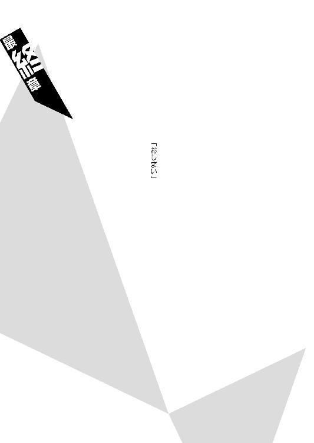
◆ ◆
大厄ゲームが引き分け、実質的な勝負なしという結果に終わったその夜──零崎人識は六何我樹丸を訪れた。
「悪いんだけどもさあ、我樹丸さん。ヘリコとか飛行機とかはなくとも、この島にだって外出用の船くらいはあんだろ？ 夜の内にこっそり、それを出してくれねーかな？」
「......どういうことじゃ？」
我樹丸は首を傾げる。哀川潤、そして無桐伊織にばかり執心していた我樹丸にとって、人識は崩子とは違う意味で意識の外の存在だったので、いきなりそんな風に頼まれて、少なからず驚いたらしい。
「わざわざ船など出さなくとも、明朝には仲間が迎えに来る手はずになっておるのではなかったか？」
「だから俺はその前に帰りてーんだよ。一人でな」
人識は言った。
「伊織ちゃんから離れるいいチャンスだし」
「............？」
更に首を捻る我樹丸に、人識は困ったように笑う。
「俺ァ苦手なんだよ──みんなで仲良しこよし和気藹々って奴がさ。崩子ちゃんのこともどうにかケリついたみたいだし、そろそろまた一人旅に戻ろうって思うんだけど」
協力してくんねーかな、と人識。
それを受けて我樹丸は、やや難しい顔をする。
「船くらいいくらでも出してやろうが......しかし、まるで象の墓場じゃな、零崎人識」
「あ？ 何の墓場だって？」
「象の墓場じゃ。知らんか？ 貴様は他の誰かに、特に近しき者に、自分の死体を見られるのが嫌なのじゃろう──わからんでもない。余にも貴様のような時代があった」
「......あんたみてーな節操のない人間にはなりたかねーけどな」
「ふっ。左様か。まあよい──船は砥石に操舵させよう。奴とは積もる話もあるじゃろう」
「ねえよ」
「砥石はの──石凪であると同時に、死吹でもある」
「あ？ 死吹？ 『呪い名』序列六位のか？」
「うむ。石凪と死吹とのハーフなのじゃ。それが闇口衆として働いておるのじゃから、わからんもんじゃろう──」
「......死神にしちゃ、どうも仕事振りが病的だったと思ったぜ。なるほど、確かにあいつの喋り方って、そういや死吹製作所んとこの方言だもんな。純粋な石凪なんだったら、俺が勝てるわけねーし」
「砥石には負けたつもりはないらしいがの。じゃが、じゃからこそ余は思うのじゃ。奴は石凪であり、死吹であり──また、零崎であるのかもしれんとな」
「ああ？」
「ありえん話ではなかろう。零崎一賊は血ではなく流血で繫がる一賊──それが一般人ではなく他の『殺し名』の中から誕生したとしても不思議ではあるまい」
「かはは。石凪砥石ならぬ零崎問識ってか？ なるほど、そう考えりゃあいつの馬鹿みてーな殺意も納得いくよな──かはは。そりゃ面白い。滅んだはずの零崎一賊の再興の可能性を感じさせる話じゃねーか」
だとしたら零崎同士のハーフの俺がリアル零崎って可能性もきちんとあるわけだ──と、人識は言った。その言葉の意味は我樹丸にはわからなかったのだろう、彼は前の部分だけを受けて、
「そんなつもりで言ったわけではないがの」
とだけ応えた。
「ふん。いずれにしても、貴様も随分と変わり者のようじゃな。興味深い。貴様が女であれば、余が孕ませてやるのじゃがな。残念じゃ」
「冗談じゃねえ。つーかできれば操舵手も砥石以外の奴がいいんだが。あいつが万が一にも零崎なんだとしたら、この後の展開が予想できちまってすげえ嫌なんだ」
「ならんな。そもそも正規の闇口衆は、貴様達を殺したくてうずうずしておるのじゃから」
「そうなのかよ。はあ──そりゃ傑作だ」
人識はうんざりしたようにそう毒づいたが、しかし、金も払わずに船を借りようとしておいて、さすがに操舵手を選ぶ権限までは自分にはないと思ったようで、それ以上の反対はしなかった。
そしてその深夜、漆黒の闇の中──零崎人識は石凪砥石と共に、他の誰にも挨拶することも、伝言を残すこともなく、大厄島から姿を消した。
◆ ◆
そして次の日、中型輸送ヘリで石丸小唄は大厄島を訪れた──昨日一昨日とは違い島の上層部の人間に許可を取っての来訪なので、ホバリングではなく、ヘリは着陸（ヘリポートなどないから原っぱに着陸したわけだが）させることができた。直後、石丸小唄と哀川潤と取っ組み合いの喧嘩が始まったのだが、その争いについて詳細を記述すると小説にして五冊分の紙幅を消費してしまうことになるので、ここでは割愛する。
「哀川潤。言っておくが、余は納得しておらん」
実際のところ、闇口衆が侵入者達を殺したくてうずうずしているというのは、砥石を人識に同行させるために我樹丸が使った方便のようなものだったのだが、しかし、だからと言って丸っきりの噓だったわけでもなく、哀川潤達の出立を見送りに来たのは六何我樹丸ただ一人だった。
その際、我樹丸は哀川潤に言った。
「貴様が万全のコンディションになった際、改めての再戦を申し込む。今度はゲームではない──本当の戦争をしよう」
「ん？ 別にいいけど」
想影真心と戦った末に、更に石丸小唄とも乱闘になった哀川潤は最早瀕死のような体調のはずだったが（ガーゼと包帯まみれだ）、しかしそんな気配を露ほども匂わせず、ハンドポケットで応じた。
ちなみに彼女がこの島にいる間中ずっとハンドポケットで戦っていたのは、とうとうこの戦いのうちには握力が回復しなかったからである──まあそうでもなければ、目立ちたがり屋の哀川潤がチームリーダーを人識に任せるなんてことは、やっぱりなかったのかもしれない。
「けどどーせ、お前が勝つと思うぜ」
「............」
「お前の言う通りだ、六何我樹丸。あたし、負けんの平気だもん。勝つのは好きだけど、それ以前に戦うのが好きなんだ。負けてもあたしが弱くなるわけじゃねーし」
ただし訂正することがあるとすれば、と哀川潤。
「楽でいいんじゃねえ。楽しくていいんだ」
負けてもいいなんてのは。
楽しくていい──と。
哀川潤は、そう言い切った。
「......人類最強。貴様、負けるとはどういうことか、考えたことがあるか？」
対して──我樹丸は言った。
重みのある口調で言った。
「余は七十八年、ずっとそれを考えてきた。負けるとは──単純に勝てなかったという結果だけのことを言うのではない。それにより、魂が削られるのじゃ。精神が殺されるのじゃ。負けるということは、それがどんな些細な負けであれ、死ぬということに等しい。身体を構成する細胞が一つずつ、壊されていく──いいやいいやで負けておると、気が付けば自身を見失ってしまうのじゃ。少なくとも──余はそう感じる。じゃから、余はここまで無敗を貫いてきた。......ゆえに余にはわからん。どうして貴様が──あのとき、あんな風に気持ちよく笑えたものなのか──」
「じゃーんけん」
と、哀川潤は我樹丸の言葉を無視するかのように、そう言ってポケットから手を出し、その手を大きく振る。
「ほい」
「ん」
反射的に応じる我樹丸。
我樹丸はグーで。
哀川潤は、チョキだった。
「............」
「くくく。な？ 勝てねーだろ？」
「......それは貴様が最初にチョキしか出さんからではないのか？ 貴様は小学生か」
「あっはっは」
「じゃから──どうして、負けて笑えるのじゃ」
我樹丸は本当に理解できないというように、怪訝な顔をした──対して哀川潤は、やはり気持ちの良い笑顔を返すのだった。
「だって」
哀川潤は更に笑う。
「あたしは負けても、Ｖサインだから」
手の形をチョキに保ったままで。
その二本の指を、我樹丸に見せつけた。
「ちなみに生涯無敗。お前、強いってのがどういうことか、考えたことはあるか？」
我樹丸からの質問に呼応させるように、哀川潤はそう問いかけて──
そして我樹丸からの答を待たず、
「あたしはない」
と。
見事にそう言ってのけたのだった。
さておき、この物語のもう一人の主役、無桐伊織である。
ニット帽の殺人鬼。
もっともニット帽は大厄ゲームの最中、闇口憑依に脱がされる際無残にも裁断されてしまっていたので、今はただの殺人鬼だが。
ただまあ、ニット帽は新しいのを買えばいいとして、問題は義手のことだった。
人識がいなくなってしまったので、闇口憑依によって捥がれた伊織の義手は、哀川潤が繫ぐこととなった──見様見真似の曲絃糸である。幸いなことに（それともさすがは罪口商会の作品と言うべきなのか）義手そのものには全くと言っていいほど損傷はなかったので、再手術と言うほどに大袈裟なものにはならなかった。
とは言え、リハビリが最初からやり直しになるのだけは、仕方のないことだった。
「んー。これじゃあ人識くんをすぐには追えないですねえ。残念無念です」
そう伊織は言った。
人識が昨夜の内にいなくなったことについて、彼女は誰にも、感想らしい感想を洩らしていない──いや、実を言えば、人識はきっとそうするだろうと、なんとなく思っていた。
止めようと思えば止められるだろうとも。
思っていた。
けれどそれは何だか違う気がして、あえて見過ごしたのだ──もっとも。
「ところで哀川のおねーさん。お願いがあるんですけれど」
もっとも──
逃がしはしても、追わないつもりはないけれど。
それはきっと、マインドレンデル──零崎双識の遺志を継ぐことでもある。
無桐伊織は零崎双識の──後継者なのだから。
帰りのヘリの中、闇口崩子と想影真心が綾取りをして遊んでいる傍らで、だから無桐伊織は哀川潤に頭を下げた。
ヘリの操縦者が石丸小唄であることは既に伊織にはばれているが（哀川潤ももうそれを隠そうとはしなかった。当然だ）、そんなことは伊織にとってはどうでもよかった。
それよりも。
ずっと大切なことがある。
「人識くん捕まえるの、協力してくれません？」
「............」
哀川潤はそう言われると目を細め、
「ほっときゃいーんじゃねーの？ あんなガキ」
と言う。
「勝手に消えた奴なんざ、わざわざ追う必要ねーだろ」
「そうはいきません。人識くんのことは、関係、ありますから」
伊織は哀川潤に、そう言い返す。
「どーせ寂しがり屋の人識くんのことです、その内気が変わって戻ってくるんでしょうけれど、それを待つのもなんだか癪じゃないですか」
「......あたしは高いぜ？」
哀川潤からそう言われても、伊織は「一向に構いませんよう」と返すだけだった。
「貧乏生活でバイトに勤しんでいた崩子ちゃんのお兄ちゃんでも払えるくらいの額なら、きっとわたしにだって払えます。......ちなみにおいくらくらいで？」
「あー。美少年の場合は、前払いだったんだよなあ」
「おや。そう言えばそう仰ってましたね。実は貯金でもあったのでしょうか？」
「いや」
ゆるりと哀川潤は首を振った。
表情は随分思い切った悪役顔である。
「奴は身体で払った」
「......は？」
「依頼されたその場で初ちゅーもらった」
「..................」
「崩子ちゃんには秘密だぞ。殺される」
この人やってること六何我樹丸とおんなじですよ、と伊織は思った。
「......そう言えば、我樹丸さんはどうして、わたしとか哀川のおねーさんとかに、子供を産まそうとか考えたんでしょうねえ」
「趣味だっつってたぞ。てめえの遺伝子を残したいと思うのは、生物として当然だしな。けど趣味なら趣味で、ちゃんと頼めってんだよなあ。歳食ってるけど渋いっちゃ渋いし、三つ指ついてお願いするなら子供くらい、五分に一人の割合で産んでやるのにな」
「あなたは一人で少子化問題を解決するつもりなのですか......」
「へん。零崎一賊も六何我樹丸も、萌太くんも崩子ちゃんも、余計なこと考え過ぎなんだよな──家族だなんだ、親子だなんだとややこしい」
「はあ......そう思いますか？ わたしにはなんだかわかるような気もしますけれど」
「あたしには父親が三人いたぜ。母親も二人いた。実際、よく言うじゃねえかよ」
少し勿体ぶってから。
哀川潤はにやりと笑って、
「人類皆きょーだい──つってな」
と言ったのだった。
その言葉に、無桐伊織は、今現在、取り立てて困っているつもりもなかったのに──何だか救われたような気がした。
「......でも、それはそれとして、哀川のおねーさん。崩子ちゃんのお兄ちゃん、聞いた感じじゃかなりのイケメンだったみたいですし、享年十五歳ということであれば、初ちゅーくらいよゆーで済ましてるんじゃないですか？」
「え......マジ？ あたし、騙されたの？」
「どうしてあなたがちょっと傷ついてるんですか......」
そんな資格ありませんよう、と伊織は言った。
まあ、とにもかくにも。
追いつ追われつ。
抜きつ抜かれつ、鬼ごっこ。
それも──零崎人識と無桐伊織との関係だった。
◆ ◆
石凪砥石は零崎人識を本土まで送ったきり、大厄島に戻ってこなかった──その事実に誰も驚きはしなかった。何故なら島を出る際に彼は決別の証として、三年前、そもそもの所有者がそうしたように、使用していた水玉模様のデスサイスを残していったからだ。
大厄ゲームが勝負なしとなったとは言え、石凪調査室の死神でもない限り、どの道処刑鎌は使えない。つまりは闇口衆にとって、そのデスサイスは無用の長物である。
結局、話し合いあった末、そのデスサイスは闇口崩子が貰い受ける運びになった──石凪萌太の魂、分身とも言えるそれを受け継ぐべきは、やはり彼女しかいないだろうという結論だった。特にその結論を推したのは首領代行であり、石凪萌太の継母にしてバディであった闇口憑依なのだが、その事実は表には出されず伏せられている──少なくとも崩子の知るところではない。ともあれ、これにより、哀川潤は数ヵ月前に石凪萌太から受けた依頼を、全て滞りなく達成できたというわけだ。人類最強の請負人でありながら、実は任務達成率が低い彼女にしてみれば、これはとても珍しいケースだった。
とは言うものの、無論、出自が闇口衆であり、また戦闘スキルを失っている闇口崩子にだって、処刑鎌は扱えない。
だからそのデスサイスは二度と戦場で振るわれることなく、彼が家族と呼んだ者達のところで一つ屋根の下、今でも大切に保管されているのだという。
（無桐伊織──兄妹関係）
（関係継続）
本書は二〇一〇年三月、講談社ノベルスとして刊行されました。
本作品は、二〇一四年一〇月、小社より講談社文庫として刊行されたものを電子書籍化したものです。
『人間シリーズ』配信予告
『零崎人識の人間関係 零崎双識との関係』 ９月23日配信開始
『零崎人識の人間関係 戯言遣いとの関係』 ９月30日配信開始
◎本電子書籍内の外部リンクに関して
ご利用の端末によっては、リンク機能が制限され正しく動作しない場合があります。また、リンク先のｗｅｂサイト、メールアドレス、電話番号は、事前のご連絡なく削除あるいは変更されることもございます。ご了承ください。
零崎人識の人間関係 無桐伊織との関係
二〇一六年九月一日発行
西尾維新
©NISIO ISIN 2016
発行者 鈴木 哲
発行所 株式会社講談社
東京都文京区音羽二‐一二‐二一
〒112-8001
◎本電子書籍は、購入者個人の閲覧の目的のためにのみ、ファイルの閲覧が許諾されています。私的利用の範囲をこえる行為は著作権法上、禁じられています。
16J0721E
01